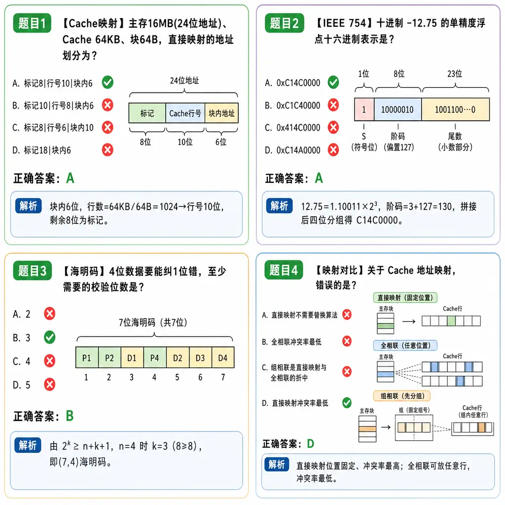
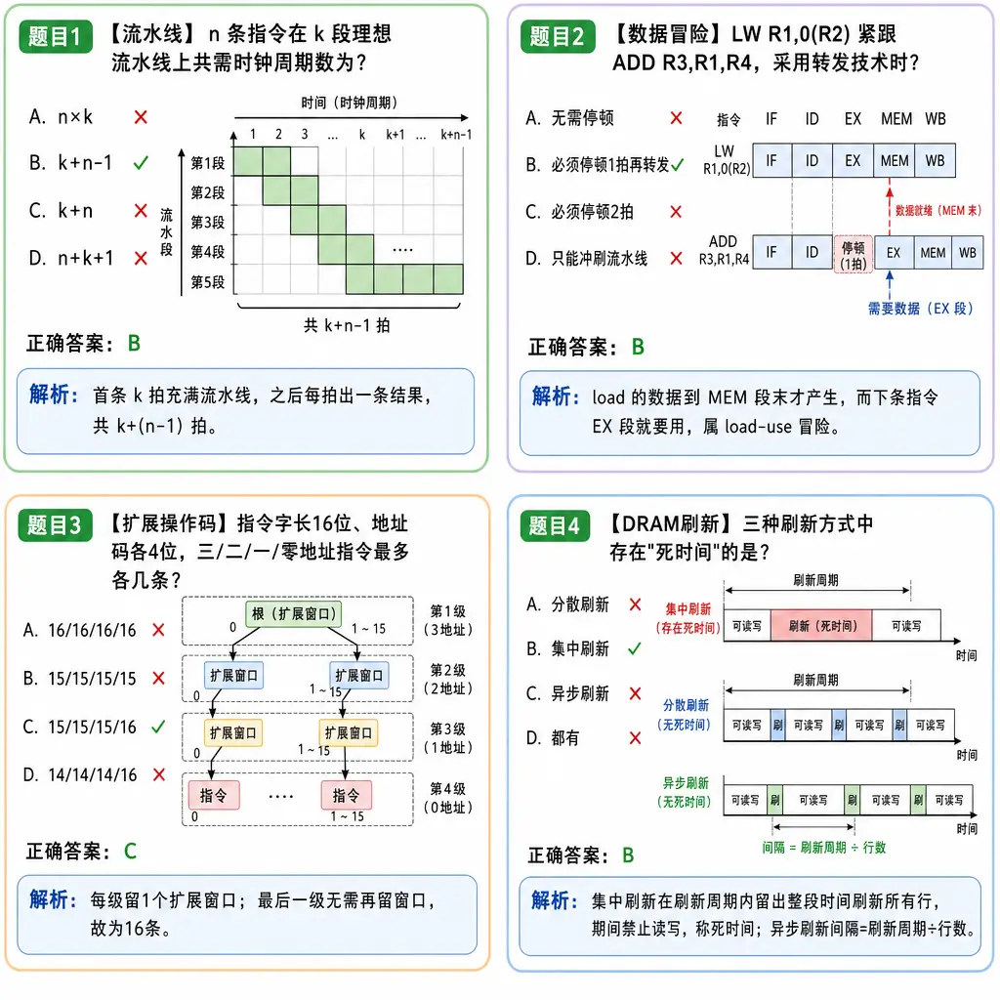
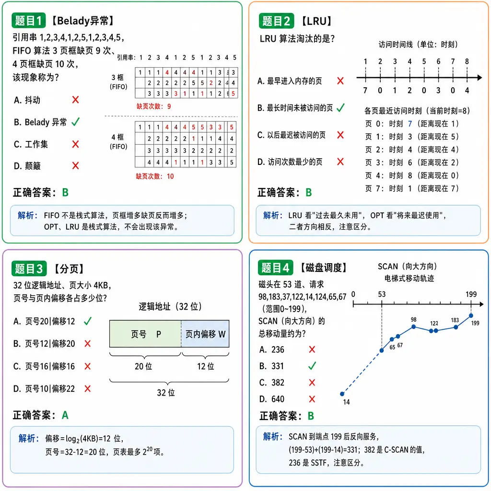

408 计算机学科专业基础知识体系全解
本文档系统梳理408统考四门核心科目的完整知识体系，适用于考研复习、查漏补缺与考前冲刺。
第一部分：数据结构（45分，约30%）
第1章 绪论
【分值占比】约 2~4 分
【考频】⭐⭐（低频但基础）
【难度】⭐
【必背】
- 数据结构三要素：逻辑结构、存储结构、运算
- 抽象数据类型（ADT）的三元组定义
- 算法五大特性：有穷性、确定性、可行性、输入、输出
- 时间复杂度与空间复杂度的定义与计算
- 大O记法规则：$O(1) < O(\log n) < O(n) < O(n\log n) < O(n^2) < O(n^3) < O(2^n) < O(n!) < O(n^n)$
🔑 口诀：常对幂指阶——常数阶 $O(1)$、对数阶 $O(\log n)$、幂阶 $O(n^k)$（含 $O(n\log n)$ 介于 $O(n)$ 与 $O(n^2)$ 之间）、指数阶 $O(2^n)$、阶乘阶 $O(n!)$，依次递增。
【核心概念】
1.1 数据结构的基本概念
数据：信息的载体，能被计算机识别、存储和加工的符号集合。
数据元素：数据的基本单位，可由若干数据项组成。
数据项：构成数据元素的不可分割的最小单位。
数据对象：性质相同的数据元素的集合，是数据的一个子集。
数据结构：相互之间存在一种或多种特定关系的数据元素的集合，包含三要素： - 逻辑结构：数据元素之间的逻辑关系 - 集合：无关系 - 线性结构：一对一 - 树形结构：一对多 - 图状/网状结构：多对多 - 存储结构（物理结构）：数据在计算机中的表示 - 顺序存储：逻辑相邻则物理相邻 - 链式存储：借助指针表示逻辑关系 - 索引存储：建立附加索引表 - 散列存储：根据关键字计算存储地址 - 运算：施加在数据上的操作（增删改查等）
抽象数据类型（ADT）：指一个数学模型以及定义在该模型上的一组操作。ADT 仅取决于其逻辑特性，与计算机内部的表示和实现无关。ADT 可用三元组表示： $$ADT = (D, S, P)$$ 其中 $D$ 是数据对象，$S$ 是 $D$ 上的关系集，$P$ 是对 $D$ 的基本操作集。
定义格式（教材口径）：
ADT 抽象数据类型名 {
数据对象：<数据对象的定义>
数据关系：<数据关系的定义>
基本操作：<基本操作的定义>
} ADT 抽象数据类型名
⚠️ 易错警示：ADT 描述的是"做什么"而非"怎么做"；同一种 ADT（如线性表）既可用顺序存储实现，也可用链式存储实现，二者只是同一逻辑结构的不同物理实现。
1.2 算法的基本概念
算法：对特定问题求解步骤的一种描述，是指令的有限序列。
算法五大特性： | 特性 | 含义 | |------|------| | 有穷性 | 算法必须在执行有穷步后结束，每步在有穷时间内完成 | | 确定性 | 每条指令必须有确切的含义，无二义性 | | 可行性 | 算法中描述的操作都可以通过已经实现的基本运算执行有限次来实现 | | 输入 | 零个或多个输入 | | 输出 | 一个或多个输出 |
好算法的标准：正确性、可读性、健壮性、效率与低存储量需求。
1.3 算法的时间复杂度
语句频度：语句在算法中被重复执行的次数。
时间复杂度 $T(n)$：算法中所有语句频度之和，表示为问题规模 $n$ 的函数。
大O记法（渐近上界）：$T(n) = O(f(n))$，表示存在正常数 $C$ 和 $n_0$，当 $n \geq n_0$ 时，$T(n) \leq C \cdot f(n)$。
大Ω记法（渐近下界）：$T(n) = \Omega(g(n))$，表示存在正常数 $C$ 和 $n_0$，当 $n \geq n_0$ 时，$T(n) \geq C \cdot g(n)$。
大Θ记法（渐近紧确界）：$T(n) = \Theta(h(n))$，当且仅当 $T(n) = O(h(n))$ 且 $T(n) = \Omega(h(n))$，即存在正常数 $C_1, C_2$ 和 $n_0$，当 $n \geq n_0$ 时，$C_1 \cdot h(n) \leq T(n) \leq C_2 \cdot h(n)$。
💡 技巧：考研默认用大 O 分析最坏情形上界；题目若问"该算法的执行时间为 $\Omega(\cdot)$"，考察的往往是最好情形的下界。
常见时间复杂度：
| 复杂度 | 名称 | 示例 |
|---|---|---|
| $O(1)$ | 常数阶 | 数组访问 a[i] |
| $O(\log n)$ | 对数阶 | 二分查找 |
| $O(n)$ | 线性阶 | 线性查找 |
| $O(n\log n)$ | 线性对数阶 | 快速排序平均、归并排序 |
| $O(n^2)$ | 平方阶 | 冒泡排序、选择排序 |
| $O(n^3)$ | 立方阶 | Floyd算法 |
| $O(2^n)$ | 指数阶 | 汉诺塔问题 |
| $O(n!)$ | 阶乘阶 | 全排列问题 |
加法规则：$T(n) = T_1(n) + T_2(n) = O(\max(f(n), g(n)))$
乘法规则：$T(n) = T_1(n) \times T_2(n) = O(f(n) \times g(n))$
最坏/平均/最好时间复杂度：通常分析最坏时间复杂度，表示任何输入实例的运行时间上界。
复杂度计算典型例题：
【例1】（循环嵌套）求下列程序段中语句 x++ 的频度及时间复杂度：
for (i = 1; i <= n; i++)
for (j = 1; j <= i; j++)
x++;
解答要点：内层循环次数取决于外层变量 $i$，总频度为 $$\sum_{i=1}^{n} i = \frac{n(n+1)}{2}$$ 故 $T(n) = O(n^2)$。⚠️ 注意内层上界是 $i$ 而不是 $n$，不能简单按"两层循环乘起来是 $n^2$"记结论，要会求和推导。
【例2】（非常规步长）求下列程序段的时间复杂度：
for (i = 1; i <= n; i *= 2)
x++;
解答要点：设循环执行 $t$ 次，则 $2^t \leq n < 2^{t+1}$，得 $t = \lfloor \log_2 n \rfloor$，故 $T(n) = O(\log n)$。💡 循环变量每次"乘倍增/折半减"时，时间复杂度一定是对数阶。
【例3】（递归递推）设某递归算法满足 $$T(n) = 2T\left(\frac{n}{2}\right) + n, \quad T(1) = 1$$ 求 $T(n)$ 的渐近阶。
解答要点：逐层展开（设 $n = 2^k$）： $$T(n) = 2T\left(\frac{n}{2}\right) + n = 2\left[2T\left(\frac{n}{4}\right) + \frac{n}{2}\right] + n = 4T\left(\frac{n}{4}\right) + 2n = \cdots$$ 展开 $k = \log_2 n$ 层后，每层代价均为 $n$，共 $\log_2 n + 1$ 层，故 $T(n) = n(\log_2 n + 1) = O(n\log n)$。这正是归并排序的递推模型，也可由主定理直接得出。
1.4 空间复杂度
空间复杂度 $S(n)$：算法所耗费的存储空间与问题规模 $n$ 的函数关系。
存储空间包括： - 算法本身占据的空间 - 输入/输出数据占据的空间 - 辅助空间（算法执行过程中额外需要的空间，通常指这部分）
原地工作：算法所需的辅助空间为 $O(1)$。
递归算法的空间复杂度：递归调用的深度决定空间复杂度。每层调用需在递归工作栈中保存返回地址、实参和局部变量。
【例】求下列递归求阶乘算法的空间复杂度：
int fact(int n) {
if (n <= 1) return 1;
else return n * fact(n - 1);
}
解答要点：递归调用深度为 $n$，每层消耗常数个存储单元，故 $S(n) = O(n)$。⚠️ 对比：非递归（循环）版本的阶乘算法只需常数个辅助变量，$S(n) = O(1)$。💡 结论：递归算法的时间复杂度看递推式，空间复杂度看递归深度。
⚠️ 易错警示 - ❌ 混淆"算法特性"与"好算法的标准"：五大特性是必有的，好算法是更高的要求 - ❌ 时间复杂度计算时忽略最高阶项的系数和低阶项 - ❌ 递归算法的时间复杂度要用递推公式或主定理求解，不能直接数循环层数 - ❌ 空间复杂度只算辅助空间，不算输入数据本身占用的空间
【真题速查】
| 年份 | 题号 | 考点 |
|---|---|---|
| 2023 | 1 | 时间复杂度计算 |
| 2022 | 1 | 算法复杂度分析 |
| 2021 | 1 | 时间复杂度与递归 |
| 2019 | 1 | 时间复杂度计算 |
| 2014 | 1 | 时间复杂度与循环嵌套 |
（考点归类供参考，具体题号以历年原卷为准）
第2章 线性表
【分值占比】约 4~8 分
【考频】⭐⭐⭐（中等频率，常与算法题结合）
【难度】⭐⭐
【必背】
- 线性表的定义与逻辑特点
- 顺序表的插入/删除/按值查找实现及移动元素个数
- 单链表、双链表、循环链表的插入/删除指针操作
- 头插法与尾插法建立链表
- 循环链表仅设尾指针的妙用、约瑟夫问题
- 静态链表的原理
【核心概念】
2.1 线性表的定义
线性表：$n$ 个数据特性相同的元素的有限序列。$L = (a_1, a_2, \ldots, a_n)$
特点：除首元素外，每个元素有且仅有一个直接前驱；除尾元素外，每个元素有且仅有一个直接后继。
2.2 顺序表
顺序表：用一组地址连续的存储单元依次存储线性表中的数据元素。
静态分配：
#define MAXSIZE 100
typedef struct {
ElemType data[MAXSIZE]; // 存储空间
int length; // 当前长度
} SqList;
动态分配：
#define INITSIZE 100
typedef struct {
ElemType *data; // 指向动态分配数组的指针
int MaxSize; // 当前最大容量
int length; // 当前长度
} SeqList;
顺序表的存储地址计算： $$LOC(a_i) = LOC(a_1) + (i-1) \times \mathrm{sizeof}(ElemType)$$
💡 技巧：由此公式可知顺序表支持随机存取，任一元素的存取时间均为 $O(1)$，这是顺序表相对链表最核心的优势。
插入操作（含合法性检查与表满判断）：
bool ListInsert(SqList &L, int i, ElemType e) {
if (i < 1 || i > L.length + 1) return false; // i 合法范围 [1, length+1]
if (L.length >= MAXSIZE) return false; // 表满，无法插入
for (int j = L.length; j >= i; j--)
L.data[j] = L.data[j-1]; // 第 i 个及之后元素后移
L.data[i-1] = e; // 第 i 个位置对应下标 i-1
L.length++;
return true;
}
移动元素个数为 $n-i+1$： - 最好：$O(1)$（表尾插入） - 最坏：$O(n)$（表头插入） - 平均：$\sum_{i=1}^{n+1} p_i (n-i+1) = \frac{n}{2}$（等概率 $p_i = \frac{1}{n+1}$），$O(n)$
删除操作：
bool ListDelete(SqList &L, int i, ElemType &e) {
if (i < 1 || i > L.length) return false; // i 合法范围 [1, length]
e = L.data[i-1]; // 带回被删元素
for (int j = i; j < L.length; j++)
L.data[j-1] = L.data[j]; // 第 i 个之后元素前移
L.length--;
return true;
}
移动元素个数为 $n-i$： - 最好：$O(1)$（删除表尾） - 最坏：$O(n)$（删除表头） - 平均：$\sum_{i=1}^{n} p_i (n-i) = \frac{n-1}{2}$（等概率 $p_i = \frac{1}{n}$），$O(n)$
⚠️ 易错警示：插入与删除的 $i$ 合法范围不同——插入是 $[1, n+1]$（可插到表尾之后），删除是 $[1, n]$。
按值查找（返回第一个值等于 $e$ 的元素位序，找不到返回 0）：
int LocateElem(SqList L, ElemType e) {
for (int i = 0; i < L.length; i++)
if (L.data[i] == e) return i + 1; // 返回位序，非下标
return 0;
}
- 最好：$O(1)$
- 最坏：$O(n)$
- 平均：$O(n)$
动态扩容（动态顺序表容量不足时申请更大空间）：
void IncreaseSize(SeqList &L, int len) {
ElemType *p = L.data;
L.data = (ElemType*)malloc((L.MaxSize + len) * sizeof(ElemType));
for (int i = 0; i < L.length; i++)
L.data[i] = p[i]; // 将数据复制到新区域
L.MaxSize += len;
free(p); // 释放原空间
}
⚠️ 动态扩容需复制全部元素，单次代价 $O(n)$；malloc 出来的空间要用 free 释放，防止内存泄漏。
2.3 单链表
单链表：用任意的存储单元存储线性表元素，通过指针域表示逻辑关系。
typedef struct LNode {
ElemType data;
struct LNode *next;
} LNode, *LinkList;
头结点的优势： - 使链表第一个位置操作与其他位置统一 - 空表与非空表处理统一
插入操作（后插，已知前驱结点 $p$）：
s->next = p->next;
p->next = s;
⚠️ 顺序不能颠倒！
指定结点前插（经典考点：在 $p$ 所指结点之前插入元素 $e$）：
思路：仍在 $p$ 之后插入新结点，再交换两结点的数据域，把"前插"转化为"后插 + 数据交换"，时间复杂度 $O(1)$。
bool InsertPriorNode(LNode *p, ElemType e) {
if (p == NULL) return false;
LNode *s = (LNode*)malloc(sizeof(LNode));
if (s == NULL) return false;
s->next = p->next;
p->next = s; // 新结点 s 后插到 p 之后
s->data = p->data; // 原 p 的数据后移到 s
p->data = e; // 新元素填入 p
return true;
}
💡 技巧：单链表普通前插需从头扫描找前驱（$O(n)$），交换数据域法只需 $O(1)$；同理"删除指定结点 $p$"也可把 $p$ 后继的数据复制到 $p$、再删除 $p$ 的后继来实现 $O(1)$（注意 $p$ 是尾结点时此法失效）。
删除操作（删除 $p$ 的后继）：
q = p->next;
p->next = q->next;
free(q);
头插法建立链表（元素顺序与输入相反）：
LinkList HeadInsert() {
LNode *s; int x;
LinkList L = (LinkList)malloc(sizeof(LNode));
L->next = NULL; // 初始为空链表
scanf("%d", &x);
while (x != -1) {
s = (LNode*)malloc(sizeof(LNode));
s->data = x;
s->next = L->next;
L->next = s;
scanf("%d", &x);
}
return L;
}
时间复杂度：$O(n)$，空间复杂度：$O(1)$
尾插法建立链表（元素顺序与输入一致）：
LinkList TailInsert() {
LNode *s, *r; int x;
LinkList L = (LinkList)malloc(sizeof(LNode));
r = L; // r始终指向尾结点
scanf("%d", &x);
while (x != -1) {
s = (LNode*)malloc(sizeof(LNode));
s->data = x;
r->next = s;
r = s;
scanf("%d", &x);
}
r->next = NULL;
return L;
}
按序号查找（返回第 $i$ 个结点，$i$ 不合法返回 NULL）：
LNode* GetElem(LinkList L, int i) {
if (i < 1) return NULL;
LNode *p = L->next; // p 指向首元结点
int j = 1;
while (p != NULL && j < i) {
p = p->next;
j++;
}
return p; // p 为空说明 i 超过表长
}
时间复杂度：$O(n)$
按值查找（返回第一个数据域等于 $e$ 的结点）：
LNode* LocateElem(LinkList L, ElemType e) {
LNode *p = L->next;
while (p != NULL && p->data != e)
p = p->next;
return p;
}
时间复杂度：$O(n)$
求表长：从首元结点起逐一遍历计数，$O(n)$
2.4 双链表
typedef struct DNode {
ElemType data;
struct DNode *prior, *next;
} DNode, *DLinkList;
插入操作（在 $p$ 后插入 $s$）：
s->next = p->next;
p->next->prior = s;
s->prior = p;
p->next = s;
⚠️ 注意：如果 $p$ 是尾结点，需特殊处理！
删除操作（删除 $p$ 的后继）：
q = p->next;
p->next = q->next;
if (q->next != NULL) q->next->prior = p;
free(q);
2.5 循环链表
- 循环单链表：尾结点的指针域指向头结点，形成环。在带头结点的循环单链表中，判空条件为
L->next == L（仅适用此前提；不带头结点时判空应为L == NULL）。 - 循环双链表：尾结点的后继指向头结点，头结点的前驱指向尾结点
- 判空（带头结点）：
L->next == L && L->prior == L
⚠️ 易错警示：结点的指针域只能指向结点——"尾结点指向头指针"的说法是错误的，应表述为"尾结点的指针域指向头结点"。
🔑 高频考点：循环单链表若仅设尾指针 rear（不设头指针），则 rear 即尾结点，rear->next 即头结点，rear->next->next 即首元结点——表头、表尾均可在 $O(1)$ 时间内访问。因此在循环链表的合并、出队入队等操作中，通常只设尾指针不设头指针。
【例】约瑟夫问题：$n$ 个人（编号 $1 \sim n$）围成一圈，从第 1 个人开始报数，数到 $m$ 的人出列，从下一人重新报数，直到所有人出列，求出列顺序。
思路：用不带头结点的循环单链表模拟围圈，每次从当前位置数 $m$ 步，删除对应结点。
void Josephus(int n, int m) {
// 建表：创建 n 个结点的循环单链表，rear 指向尾结点
LinkList rear = (LinkList)malloc(sizeof(LNode));
rear->data = 1;
rear->next = rear; // 初始只有 1 个结点，自成环
for (int i = n; i >= 2; i--) { // 头插法建立 2..n
LNode *s = (LNode*)malloc(sizeof(LNode));
s->data = i;
s->next = rear->next;
rear->next = s;
}
// 报数出列
LNode *pre = rear, *p = rear->next; // p 指向当前报数者，pre 为其前驱
while (p->next != p) { // 圈中多于一人
for (int i = 1; i < m; i++) { pre = p; p = p->next; }
printf("%d ", p->data); // 输出出列者编号
pre->next = p->next; // 删除 p
free(p);
p = pre->next; // 从下一人重新报数
}
printf("%d\n", p->data); // 最后幸存者
free(p);
}
解答要点：共出列 $n$ 次，每次报数最多走 $m$ 步，时间复杂度 $O(nm)$，空间复杂度 $O(n)$（链表本身）。
2.6 静态链表
静态链表：用数组来模拟链表，数组元素包含数据域 data 和游标 cur（后继元素在数组中的下标）。
#define MAXSIZE 100
typedef struct {
ElemType data;
int cur; // 游标：后继元素的下标；cur = 0 表示无后继（相当于 NULL）
} SLinkList[MAXSIZE];
数组状态示例：存放线性表 $(b, c, d, e)$，约定 0 号单元作头结点（不存数据）：
| 下标 | data | cur |
|---|---|---|
| 0 | — | 1 |
| 1 | b | 2 |
| 2 | c | 3 |
| 3 | d | 4 |
| 4 | e | 0 |
从头结点游标 cur = 1 出发，沿游标链 1 → 2 → 3 → 4 → 0 即可依次访问 $b, c, d, e$；cur = 0 即链尾。未被占用的分量另链成一条备用链表（记录其头下标，如 av），插入时从备用链表取结点，删除时把结点还回备用链表。
操作特点：插入、删除只需修改游标，不需移动元素；但查找仍需从头顺链扫描，$O(n)$，且表长不能超过 MAXSIZE。
适用场景：不支持指针的低级语言（如某些嵌入式环境）。
2.7 顺序表与链表比较
| 比较维度 | 顺序表 | 链表 |
|---|---|---|
| 存储密度 | 高（只存数据） | 低（需存指针） |
| 存取方式 | 随机存取 $O(1)$ | 顺序存取 $O(n)$ |
| 插入删除 | 需移动元素 $O(n)$ | 不需移动 $O(1)$（找到位置后） |
| 空间分配 | 预先分配，可能浪费或溢出 | 动态分配，更灵活 |
| 适用场景 | 查多改少、表长变化不大 | 改多查少、表长变化大 |
【经典算法】
1. 逆转单链表
void Reverse(LinkList &L) {
LNode *p = L->next, *r;
L->next = NULL;
while (p != NULL) {
r = p->next; // 保存后继
p->next = L->next; // 头插
L->next = p;
p = r;
}
}
2. 找中间结点（快慢指针）
LNode* FindMid(LinkList L) {
LNode *slow = L->next, *fast = L->next;
while (fast != NULL && fast->next != NULL) {
slow = slow->next;
fast = fast->next->next;
}
return slow;
}
3. 判断是否有环（Floyd判圈算法）
bool HasCycle(LinkList L) {
LNode *slow = L->next, *fast = L->next;
while (fast != NULL && fast->next != NULL) {
slow = slow->next;
fast = fast->next->next;
if (slow == fast) return true;
}
return false;
}
4. 找倒数第 k 个结点（双指针一趟扫描）
思路：两指针 $p, q$ 先拉开 $k$ 个结点的间距，再同步前进；当 $p$ 到达链尾（NULL）时，$q$ 所指即倒数第 $k$ 个结点。
LNode* FindKthLast(LinkList L, int k) {
LNode *p = L->next, *q = L->next;
for (int i = 0; i < k; i++) {
if (p == NULL) return NULL; // 表长不足 k
p = p->next;
}
while (p != NULL) {
p = p->next;
q = q->next;
}
return q;
}
时间复杂度 $O(n)$，空间复杂度 $O(1)$。💡 真题中还常考"判断 k 合法性后输出该结点的值并返回 1/0"的完整算法题写法，注意评分标准看：思想正确、代码可实现、复杂度达标。
5. 判断两单链表是否相交，并求首个公共结点
思路：若两无环单链表相交，则必呈"Y"形——两表尾结点必相同（指针相同）。据此： - 仅判断相交：分别扫描到两表尾结点，比较指针是否相等，$O(m+n)$。 - 求首个公共结点：先求两表长度之差 $dist$，让长表指针先走 $dist$ 步，再两指针同步前进，第一个相同结点即答案。
LNode* FindFirstCommon(LinkList L1, LinkList L2) {
int len1 = Length(L1), len2 = Length(L2);
LNode *longL = len1 > len2 ? L1->next : L2->next;
LNode *shortL = len1 > len2 ? L2->next : L1->next;
int dist = abs(len1 - len2);
while (dist--) longL = longL->next; // 长表先走 dist 步
while (longL != shortL) {
longL = longL->next;
shortL = shortL->next;
}
return longL; // 不相交时循环至双双为 NULL，返回 NULL
}
时间复杂度 $O(m+n)$，空间复杂度 $O(1)$。
6. 删除绝对值重复的结点
【例】单链表保存 $m$ 个整数（可能为负），结点值的绝对值 $\leq n$。设计时间尽量高效的算法，删除链表中 $|data|$ 重复的结点（保留首次出现者）。
思路：空间换时间——申请长度为 $n+1$ 的布尔数组 visited 记录各绝对值是否已出现，一趟扫描完成删除。
void DelAbsDup(LinkList L, int n) {
bool *visited = (bool*)calloc(n + 1, sizeof(bool));
LNode *pre = L, *p = L->next;
while (p != NULL) {
int v = abs(p->data);
if (visited[v]) { // 该绝对值已出现，删除 p
pre->next = p->next;
free(p);
p = pre->next;
} else {
visited[v] = true; // 首次出现，标记并保留
pre = p;
p = p->next;
}
}
free(visited);
}
时间复杂度 $O(m)$，空间复杂度 $O(n)$。⚠️ 注意：被删结点必须 free，且删除后 pre 不动、p 后移；保留时 pre 与 p 同步后移。
⚠️ 易错警示 - ❌ 链表插入/删除操作中指针赋值顺序错误，导致断链 - ❌ 循环链表的判空条件与单链表不同，且"尾结点指向头结点"不能写成"指向头指针" - ❌ 双链表插入时忘记修改前驱指针 - ❌ 静态链表的游标含义混淆（是数组下标，不是地址）
【真题速查】
| 年份 | 题号 | 考点 |
|---|---|---|
| 2024 | 41 | 链表应用题 |
| 2022 | 41 | 链表综合应用 |
| 2020 | 41 | 链表与数组综合 |
| 2019 | 41 | 链表操作 |
| 2015 | 41 | 单链表算法设计 |
（考点归类供参考，具体题号以历年原卷为准）
第3章 栈、队列和数组
【分值占比】约 4~8 分
【考频】⭐⭐⭐⭐（高频，栈常考表达式求值、递归）
【必背】
- 栈的LIFO特性、队列的FIFO特性
- 顺序栈与链栈的基本操作
- 循环队列的判空/判满条件及元素个数计算
- 中缀表达式转后缀表达式（栈的应用）
- 递归与栈的关系
- 特殊矩阵的压缩存储地址计算
【核心概念】
3.1 栈（Stack）
定义：只允许在一端（栈顶）进行插入和删除操作的线性表。
特点：后进先出（LIFO, Last In First Out）
基本操作：
- InitStack(&S)：初始化
- Push(&S, x)：入栈
- Pop(&S, &x)：出栈
- GetTop(S, &x)：读栈顶
- StackEmpty(S)：判空
顺序栈：
#define MAXSIZE 100
typedef struct {
ElemType data[MAXSIZE];
int top; // 栈顶指针
} SqStack;
// top == -1 表示空栈
// 入栈：S.data[++S.top] = x;
// 出栈：x = S.data[S.top--];
共享栈：两个栈共享一片空间，栈底在两端，向中间生长。
- 栈1空：top1 == -1
- 栈2空：top2 == MAXSIZE
- 栈满：top1 + 1 == top2
链栈：用链表实现，通常没有头结点，所有操作在头部进行。
出入栈序列的合法性判断：
🔑 判定规则：入栈序列固定时，一个输出序列合法，当且仅当其中任意时刻"后入栈的元素先出栈"不被违反。实操方法：按输出序列逐项模拟入栈/出栈过程，若某一步需要的元素不在栈顶（压在别的元素下面或已经输出），则该序列不合法。
💡 Catalan 数：$n$ 个互不相同的元素依次入栈，所有合法出栈序列的个数为 $$C_n = \frac{1}{n+1}\binom{2n}{n} = \frac{(2n)!}{(n+1)!\,n!}$$ 常用值：$n=3$ 时 $C_3 = 5$，$n=4$ 时 $C_4 = 14$，$n=5$ 时 $C_5 = 42$。
【例】入栈序列为 1, 2, 3, 4，判断出栈序列 4, 3, 1, 2 是否合法？
解：4 最先出栈，说明 1, 2, 3, 4 已全部入栈，栈内自顶向下为 4, 3, 2, 1。4 出栈后，剩余元素只能按 3, 2, 1 的顺序出栈，不可能出现"3 出栈后先出 1 再出 2"。故该序列不合法。
3.2 队列（Queue）
定义：只允许在一端插入（队尾），另一端删除（队头）的线性表。
特点：先进先出（FIFO, First In First Out）
基本操作：
- InitQueue(&Q)：初始化
- EnQueue(&Q, x)：入队
- DeQueue(&Q, &x)：出队
- GetHead(Q, &x)：读队头
- QueueEmpty(Q)：判空
循环队列：
用模运算解决假溢出问题：
typedef struct {
ElemType data[MAXSIZE];
int front, rear; // 队头指针、队尾指针
} SqQueue;
判空与判满的方法：
| 方案 | 判空 | 判满 | 队列长度 |
|---|---|---|---|
| 牺牲一个单元 | front == rear |
(rear+1)%MAXSIZE == front |
(rear-front+MAXSIZE)%MAXSIZE |
| 增设size字段 | size == 0 |
size == MAXSIZE |
size |
| 增设tag字段 | front == rear && tag == 0 |
front == rear && tag == 1 |
需计算 |
链队列：带头结点的链表，头指针指向头结点，尾指针指向尾结点。
双端队列：两端都可以入队和出队。
- ⚠️ 栈能得到的输出序列，双端队列都能得到；反之不然——栈的输出序列集合是双端队列输出序列集合的真子集（输入受限或输出受限的双端队列同样成立）。
【例】输入序列 1, 2, 3, 4，输出序列 4, 1, 2, 3：栈不可能做到（4 先出栈说明 1, 2, 3 已压在栈内，只能接着出 3, 2, 1）；但双端队列可以做到——1, 2, 3, 4 依次从同一端入队，先从另一端出 4，再从原端依次出 1, 2, 3。
- 💡 判断输出序列合法性的通用方法：按给定输出序列逐步模拟入队/出队过程，某一步两端都无法提供所需元素即为不合法。切忌用"栈做不到，所以双端队列也做不到"来推断。
3.3 栈的应用
1. 括号匹配
bool BracketCheck(char *str) {
InitStack(&S);
for (int i = 0; str[i] != '\0'; i++) {
if (str[i] == '(' || str[i] == '[' || str[i] == '{')
Push(&S, str[i]);
else {
if (StackEmpty(S)) return false;
char topElem;
Pop(&S, &topElem);
if (str[i] == ')' && topElem != '(') return false;
if (str[i] == ']' && topElem != '[') return false;
if (str[i] == '}' && topElem != '{') return false;
}
}
return StackEmpty(S);
}
2. 表达式求值
| 表达式类型 | 特点 | 示例 |
|---|---|---|
| 中缀表达式 | 运算符在操作数之间 | A + B * C |
| 前缀表达式（波兰式） | 运算符在操作数之前 | + A * B C |
| 后缀表达式（逆波兰式） | 运算符在操作数之后 | A B C * + |
中缀转后缀（栈实现）： 1. 操作数直接输出 2. 运算符与栈顶比较优先级，高则入栈，低或等于则弹出栈顶输出 3. 左括号入栈，右括号则弹出至左括号 4. 结束后弹出栈中所有运算符
后缀表达式求值（栈实现）：
从左到右扫描后缀表达式： - 遇操作数：入栈 - 遇运算符：弹出栈顶两个元素，先弹出的是右操作数、后弹出的是左操作数，计算后将结果入栈 - 扫描结束，栈中唯一元素即为结果
【例】将中缀表达式 A+B*(C-D)/E 转换为后缀表达式，并给出求值过程。
转换过程（栈底在左）：
| 扫描符号 | 运算符栈 | 后缀输出 |
|---|---|---|
| A | （空） | A |
| + | + | A |
| B | + | A B |
| * | + * | A B |
| ( | + * ( | A B |
| C | + * ( | A B C |
| - | + * ( - | A B C |
| D | + * ( - | A B C D |
| ) | + * | A B C D - |
| / | + / | A B C D - * |
| E | + / | A B C D - * E |
| 扫描结束 | （空） | A B C D - * E / + |
得后缀表达式：A B C D - * E / +
求值过程：
| 扫描符号 | 操作数栈（底→顶） | 说明 |
|---|---|---|
| A B C D | A B C D | 操作数依次入栈 |
| - | A B (C-D) | 弹出 D、C，计算 C-D |
| * | A (B*(C-D)) | 弹出 (C-D)、B，计算 B*(C-D) |
| E | A (B*(C-D)) E | 操作数入栈 |
| / | A (B*(C-D)/E) | 弹出 E、B(C-D)，计算 B(C-D)/E |
| + | A+B*(C-D)/E | 弹出两项相加，即最终结果 |
⚠️ 易错警示：减法和除法中操作数顺序不能颠倒——先弹出栈顶的是右操作数。
3. 递归
递归的实现依赖栈：每次递归调用将参数、局部变量、返回地址压栈。
递归转非递归：可以用栈模拟（如二叉树遍历的非递归实现）。
3.4 数组与特殊矩阵
数组的存储地址：
一维数组：$LOC(a_i) = LOC(a_0) + i \times L$
二维数组（行优先）：$LOC(a_{i,j}) = LOC(a_{0,0}) + (i \times n + j) \times L$
二维数组（列优先）：$LOC(a_{i,j}) = LOC(a_{0,0}) + (j \times m + i) \times L$
特殊矩阵的压缩存储：
| 矩阵类型 | 存储方式 | 元素个数 | 地址公式 |
|---|---|---|---|
| 对称矩阵 | 只存下三角+对角线 | $\frac{n(n+1)}{2}$ | $k = \frac{i(i+1)}{2} + j$（$i \geq j$） |
| 三角矩阵 | 上/下三角+常数 | $\frac{n(n+1)}{2} + 1$ | 类似对称矩阵 |
| 对角矩阵（三对角） | 三条对角线 | $3n-2$ | $k = 2i + j$（$i,j,k$ 均从 0 开始） |
| 稀疏矩阵 | 三元组/十字链表 | 非零元个数 | 顺序或链式存储 |
⚠️ 下标基准：上表地址公式默认矩阵下标与数组下标均从 0 开始。若题目规定矩阵下标 $i,j$ 从 1 开始（数组 $k$ 仍从 0 开始）： - 对称矩阵（$i \geq j$）：$k = \dfrac{i(i-1)}{2} + j - 1$ - 三对角矩阵：$k = 2i + j - 3$
💡 技巧：统一按"前面行的元素个数 + 本行内偏移量"现场推导，不必硬背公式，下标基准自然不会错。
稀疏矩阵三元组：(row, col, value)
十字链表：每个非零元结点包含行指针、列指针、行号、列号、值。
【易错警示】
- ⚠️ 循环队列的判满条件记错，导致队满时还能入队
- ⚠️ 栈的top指针初始值：有的教材设
-1，有的设0，要注意题目规定 - ⚠️ 共享栈判满条件：
top1 + 1 == top2，不是top1 == top2 - ⚠️ 中缀转后缀时，运算符优先级相同要考虑结合性（左结合则栈顶弹出）
- ⚠️ 特殊矩阵地址计算时下标从0还是从1开始
【真题速查】
| 年份 | 题号 | 考点 |
|---|---|---|
| 2024 | 2, 42 | 栈的应用、表达式 |
| 2023 | 2, 41 | 循环队列、栈与队列综合 |
| 2022 | 2 | 栈的输出序列 |
| 2021 | 2, 41 | 中缀表达式转换、队列应用 |
| 2020 | 2 | 循环队列 |
| 2019 | 2 | 栈的出入序列 |
（考点归类供参考，具体题号以历年原卷为准）
第4章 树与二叉树
【分值占比】约 8~12 分
【考频】⭐⭐⭐⭐⭐（最高频，每年必考大题）
【必背】
- 二叉树的性质（5条核心性质）
- 满二叉树、完全二叉树的定义与性质
- 二叉树的遍历（先序、中序、后序、层序）及递归/非递归实现
- 遍历序列恢复二叉树
- 线索二叉树的线索化与遍历
- 二叉排序树（BST）的定义、插入、删除、查找
- 平衡二叉树（AVL）的定义、旋转操作
- 哈夫曼树的构造与带权路径长度计算
- 并查集的实现
【核心概念】
4.1 树的基本概念
树的定义：$n$ 个结点的有限集。$n=0$ 为空树。
基本术语： - 结点的度：该结点拥有的子树个数 - 树的度：树中各结点度的最大值 - 叶子结点：度为0的结点 - 层次：根为第1层，其孩子为第2层... - 深度/高度：树中结点的最大层次 - 路径：两个结点之间经过的结点序列 - 路径长度：路径上的边数
树的性质： 1. 结点数 = 所有结点度数之和 + 1（根结点无父） 2. 度为 $m$ 的树中，第 $i$ 层最多有 $m^{i-1}$ 个结点 3. 高度为 $h$ 的 $m$ 叉树最多有 $\frac{m^h - 1}{m - 1}$ 个结点 4. 具有 $n$ 个结点的 $m$ 叉树的最小高度为 $\lceil \log_m(n(m-1)+1) \rceil$
4.2 二叉树
二叉树的定义：每个结点至多有两棵子树（左子树、右子树），子树有左右之分。
特殊二叉树： - 满二叉树：每层结点数都达到最大，高度 $h$ 的满二叉树有 $2^h - 1$ 个结点 - 完全二叉树：按层序编号，与满二叉树一一对应 - 叶子结点只可能在最后两层 - 最多只有一个度为1的结点，且只有左孩子
二叉树的性质：
性质1：非空二叉树的第 $i$ 层最多有 $2^{i-1}$ 个结点
性质2：高度为 $h$ 的二叉树最多有 $2^h - 1$ 个结点
性质3：叶子结点数 $n_0$ 与度为2的结点数 $n_2$ 满足： $$n_0 = n_2 + 1$$
性质4：具有 $n$ 个结点的完全二叉树的高度为 $\lceil \log_2(n+1) \rceil$ 或 $\lfloor \log_2 n \rfloor + 1$
性质5：完全二叉树按层序编号，对编号为 $i$ 的结点： - 双亲：$\lfloor i/2 \rfloor$（$i > 1$） - 左孩子：$2i$（$2i \leq n$） - 右孩子：$2i + 1$（$2i + 1 \leq n$）
4.3 二叉树的存储
顺序存储：按完全二叉树编号存入数组 - 适合完全二叉树、满二叉树 - 一般二叉树需补空结点，可能浪费空间
链式存储（二叉链表）：
typedef struct BiTNode {
ElemType data;
struct BiTNode *lchild, *rchild;
} BiTNode, *BiTree;
含有 $n$ 个结点的二叉链表中，有 $n+1$ 个空指针域（由 $2n - (n-1) = n+1$ 得出）。
4.4 二叉树的遍历
| 遍历方式 | 顺序 | 特点 |
|---|---|---|
| 先序遍历（DLR） | 根-左-右 | 第一个访问根 |
| 中序遍历（LDR） | 左-根-右 | 二叉排序树中序有序 |
| 后序遍历（LRD） | 左-右-根 | 最后访问根 |
| 层序遍历 | 按层从上到下、从左到右 | 用队列实现 |
递归实现：
void PreOrder(BiTree T) {
if (T != NULL) {
visit(T);
PreOrder(T->lchild);
PreOrder(T->rchild);
}
}
非递归中序遍历（栈实现）：
void InOrder(BiTree T) {
InitStack(&S);
BiTree p = T;
while (p != NULL || !StackEmpty(S)) {
if (p != NULL) {
Push(&S, p);
p = p->lchild; // 走到最左
} else {
Pop(&S, p);
visit(p);
p = p->rchild;
}
}
}
非递归后序遍历（栈 + 标记最近访问结点）：
void PostOrder(BiTree T) {
InitStack(&S);
BiTree p = T, r = NULL; // r 记录最近访问过的结点
while (p != NULL || !StackEmpty(S)) {
if (p != NULL) {
Push(&S, p);
p = p->lchild; // 一路向左
} else {
GetTop(S, p); // 只读栈顶，不弹出
if (p->rchild != NULL && p->rchild != r)
p = p->rchild; // 右子树未访问，转向右
else {
Pop(&S, p);
visit(p); // 左右子树均已访问，访问根
r = p; // 标记最近访问
p = NULL;
}
}
}
}
💡 关键：只有"右子树不存在或右子树刚被访问过"时才能访问根，这正是后序非递归比先序/中序多一个标记 r 的原因（也可用结点附标志位的标记法等价实现）。
层序遍历：
void LevelOrder(BiTree T) {
InitQueue(&Q);
EnQueue(&Q, T);
while (!QueueEmpty(Q)) {
DeQueue(&Q, &p);
visit(p);
if (p->lchild != NULL) EnQueue(&Q, p->lchild);
if (p->rchild != NULL) EnQueue(&Q, p->rchild);
}
}
遍历序列恢复二叉树： - 中序 + 先序 → 唯一确定二叉树 - 中序 + 后序 → 唯一确定二叉树 - 中序 + 层序 → 唯一确定二叉树 - ⚠️ 先序 + 后序 不能 唯一确定（除非是完全二叉树）
【例】已知某二叉树的先序序列为 ABDECF，中序序列为 DBEAFC，恢复该二叉树并写出后序序列。
解：
1. 先序首元素 A 为根；在中序中，A 左侧 DBE 为左子树、右侧 FC 为右子树。
2. 左子树先序 BDE、中序 DBE：B 为根，左孩子 D、右孩子 E。
3. 右子树先序 CF、中序 FC：C 为根，左孩子 F、无右孩子。
A
/ \
B C
/ \ /
D E F
后序序列：DEBFCA。
💡 技巧：先序（或后序）定"根"，中序定"左右子树的划分"，然后递归分治；画树验证时各子树结点集合必须与三种序列一致。
4.5 线索二叉树
线索化：利用空指针域存储遍历前驱/后继。
typedef struct ThreadNode {
ElemType data;
struct ThreadNode *lchild, *rchild;
int LTag, RTag; // 0: 孩子，1: 线索
} ThreadNode, *ThreadTree;
| 线索类型 | LTag=1时lchild指向 | RTag=1时rchild指向 |
|---|---|---|
| 中序线索 | 中序前驱 | 中序后继 |
| 先序线索 | 先序前驱 | 先序后继 |
| 后序线索 | 后序前驱 | 后序后继 |
中序线索化过程：按中序遍历依次访问各结点，设 pre 指向上一个刚访问的结点：
- 若当前结点 p->lchild == NULL，则令 p->lchild = pre，p->LTag = 1（左指针指向前驱）
- 若 pre != NULL 且 pre->rchild == NULL，则令 pre->rchild = p，pre->RTag = 1（前驱结点的右指针指向后继）
中序线索二叉树找后继：
- 若 RTag == 1，rchild 直接为后继
- 若 RTag == 0，后继为右子树的最左下结点
中序线索二叉树找前驱（与找后继对称）：
- 若 LTag == 1，lchild 直接为前驱
- 若 LTag == 0，前驱为左子树的最右下结点
【例】对 4.4 例中的二叉树（先序 ABDECF、中序 DBEAFC）进行中序线索化。
解：中序序列为 D, B, E, A, F, C。逐结点检查空指针： - D（叶子，首结点）：左线索置 NULL（无前驱），右线索指向后继 B - E（叶子）：左线索指向前驱 B，右线索指向后继 A - F（叶子）：左线索指向前驱 A，右线索指向后继 C - C（无右孩子，末结点）：右线索置 NULL - B、A 左右指针均为孩子，不设线索
⚠️ 易错警示：先序线索树找前驱、后序线索树找后继不能只靠线索完成（需知道双亲），这是常考的陷阱；中序线索树找前驱/后继都可以直接完成。
4.6 二叉排序树（BST）
定义：左子树所有结点值 < 根 < 右子树所有结点值，左右子树也是BST。
查找：
BSTNode* BSTSearch(BSTree T, KeyType key) {
while (T != NULL && key != T->key) {
if (key < T->key) T = T->lchild;
else T = T->rchild;
}
return T;
}
平均查找长度：$O(\log n)$（平衡时），$O(n)$（退化为链表时）
插入：查找不成功时插入为新叶子
删除： - 叶子结点：直接删除 - 只有一棵子树：用子树替代 - 有两棵子树：用中序直接后继（右子树最左）或直接前驱（左子树最右）替代
【例】依次插入 50, 30, 70, 20, 40, 60, 80 构造 BST，再删除 50，并计算查找成功与查找失败的 ASL。
解： 1. 构造结果：50 为根，左子树 30(20, 40)，右子树 70(60, 80)，恰为 3 层满树。 2. 删除 50：50 有两棵子树，用中序直接后继 60（右子树最左结点）顶替其位置，再删除原位置的 60（叶子），得到 60(30(20, 40), 70(, 80))。 3. 查找成功（对删除前的 7 结点满树）：第 1 层 1 个结点、第 2 层 2 个、第 3 层 4 个， $$ASL_{\text{成功}} = \frac{1\times1 + 2\times2 + 3\times4}{7} = \frac{17}{7}$$ 4. 查找失败：满树共有 $7+1=8$ 个空指针（失败位置），每个都比较 3 次后落空， $$ASL_{\text{失败}} = \frac{3\times8}{8} = 3$$
💡 若题目要求对删除后的 6 结点树计算 ASL，则 $ASL_{\text{成功}} = \dfrac{1 + 2\times2 + 3\times3}{6} = \dfrac{7}{3}$，$ASL_{\text{失败}} = \dfrac{3\times6 + 2}{8} = \dfrac{5}{2}$（70 的左失败位置只比较 2 次），审题时务必看清针对哪棵树。
⚠️ 易错警示：查找失败的 ASL 只统计与树中关键字的比较次数（最后落到空指针那一次不比较）；$n$ 个结点的 BST 失败位置数恒为 $n+1$。
4.7 平衡二叉树（AVL）
定义：左右子树高度差的绝对值不超过1，且左右子树都是AVL树。
平衡因子：$BF = 左子树高度 - 右子树高度$，取值范围 ${-1, 0, 1}$
最小不平衡子树：插入/删除后第一个 $|BF| > 1$ 的结点为根的子树。
旋转操作：
| 失衡类型 | 条件 | 旋转方式 |
|---|---|---|
| LL | 插入左子树的左子树 | 右单旋 |
| RR | 插入右子树的右子树 | 左单旋 |
| LR | 插入左子树的右子树 | 先左旋后右旋 |
| RL | 插入右子树的左子树 | 先右旋后左旋 |
含有 $n$ 个结点的AVL树的最大高度：$O(\log n)$，约为 $1.44\log_2(n+2) - 0.328$
🔑 口诀：LL 右单旋、RR 左单旋、LR 先左后右、RL 先右后左——"字母即插入路径，反向旋回"。
💡 插入后只需调整最小不平衡子树（离插入点最近的失衡祖先），旋转一次整棵树即恢复平衡，无须继续向上检查（删除则不同，见下）。
【例】依次插入 16, 3, 7, 11, 9, 26, 18, 14, 15，逐步构造 AVL 树（覆盖四种旋转）。
解：
| 插入 | 失衡结点 | 类型 | 调整动作与结果 |
|---|---|---|---|
| 16, 3 | — | — | 无需调整 |
| 7 | 16 | LR（7 在 16 左子树的右子树） | 先左旋 3，再右旋 16 → 7(3, 16) |
| 11 | — | — | 无需调整 |
| 9 | 16 | LL（9 在 16 左子树的左子树） | 右单旋 16 → 11(9, 16) |
| 26 | 7 | RR（26 在 7 右子树的右子树） | 左单旋 7 → 11(7(3, 9), 16(, 26)) |
| 18 | 16 | RL（18 在 16 右子树的左子树） | 先右旋 26，再左旋 16 → 18(16, 26) |
| 14 | — | — | 无失衡（各结点平衡因子均在 ${-1,0,1}$ 内） |
| 15 | 16 | LR（15 在 16 左子树的右子树） | 先左旋 14，再右旋 16 → 15(14, 16) |
最终 AVL 树：11 为根，左子树 7(3, 9)，右子树 18(15(14, 16), 26)。
AVL 的删除：先按 BST 规则删除，再从被删结点的父结点起逐层向上检查平衡因子，发现失衡即按相应类型旋转。与插入不同，删除一次可能导致多个祖先接连失衡，最坏需 $O(\log n)$ 次旋转。
⚠️ 易错警示：判断失衡类型时看的是"插入/删除位置在最小不平衡子树的哪一侧路径上"，不要只看新结点的直接双亲。
4.8 哈夫曼树
带权路径长度（WPL）： $$WPL = \sum_{i=1}^{n} w_i \times l_i$$ 其中 $w_i$ 为叶子权值，$l_i$ 为叶子到根的路径长度。
哈夫曼树：WPL最小的二叉树。
构造方法： 1. 将 $n$ 个权值作为 $n$ 棵只有根结点的二叉树 2. 每次选两个根权值最小的树合并，新根权值为两者之和 3. 重复直至只剩一棵树
性质： - 哈夫曼树中没有度为1的结点（正则二叉树） - 结点总数：$2n - 1$ - 叶子结点数：$n$ - 非叶子结点数：$n - 1$
【例】给定权值集合 ${2, 4, 5, 7}$，构造哈夫曼树并计算 WPL。
解：合并过程如下（每步取最小的两个权值合并）：
| 步骤 | 当前权值集合 | 合并 | 新权值 |
|---|---|---|---|
| 1 | 2, 4, 5, 7 | 2 + 4 | 6 |
| 2 | 5, 6, 7 | 5 + 6 | 11 |
| 3 | 7, 11 | 7 + 11 | 18 |
树形：根 18，左孩子 7、右孩子 11；11 的左孩子 5、右孩子 6；6 的孩子为 2 和 4。各叶子深度：7 为 1，5 为 2，2 和 4 为 3。
$$WPL = 7\times1 + 5\times2 + 2\times3 + 4\times3 = 35$$
💡 技巧：WPL 也等于所有非叶结点（历次合并产生的新权值）之和：$6 + 11 + 18 = 35$，可用于快速验算；合并 $n$ 个权值恰好进行 $n-1$ 次。
⚠️ 易错警示：哈夫曼树的形态不唯一（相等权值的合并次序、左右孩子位置可变），但最小 WPL 唯一；切勿因树形不同而怀疑 WPL 算错。
哈夫曼编码： - 左分支标0，右分支标1 - 叶子结点的编码即为从根到叶子的路径标记 - 哈夫曼编码是前缀编码：任一编码都不是其他编码的前缀
4.9 并查集
定义：管理元素分组的数据结构，支持合并与查询操作。
int parent[MAXSIZE]; // parent[i] < 0 表示 i 是根，|parent[i]| 为该集合元素个数
// 初始化：n 个元素各自独立成集合
void Init(int n) {
for (int i = 0; i < n; i++) parent[i] = -1;
}
// 查找根结点 + 路径压缩
int Find(int x) {
int root = x;
while (parent[root] >= 0) root = parent[root]; // 向上找根
while (x != root) { // 沿途结点直接挂到根下
int next = parent[x];
parent[x] = root;
x = next;
}
return root;
}
// 合并（按秩/规模合并：小集合挂到大集合的根下）
void Union(int x, int y) {
int rootX = Find(x), rootY = Find(y);
if (rootX == rootY) return;
if (parent[rootX] > parent[rootY]) { // rootY 的集合更大（负数更小）
parent[rootY] += parent[rootX];
parent[rootX] = rootY;
} else { // rootX 的集合更大或相等
parent[rootX] += parent[rootY];
parent[rootY] = rootX;
}
}
时间复杂度：按秩合并 + 路径压缩后近似 $O(\alpha(n))$，其中 $\alpha$ 是阿克曼函数的反函数，可视为常数；仅按秩合并时树高为 $O(\log n)$。
常考形式：给定 Union/Find 操作序列，模拟 parent 数组的变化；或求某时刻集合的个数（= parent 数组中负值的个数）、判断两个元素是否连通。
【例】$n = 8$，依次执行 Union(0,1)、Union(2,3)、Union(4,5)、Union(6,7)、Union(0,2)、Union(4,6)、Union(0,4)，按上述代码求最终 parent 数组。
解：
| 操作 | parent 数组（下标 0~7） |
|---|---|
| 初始 | -1, -1, -1, -1, -1, -1, -1, -1 |
| Union(0,1) | -2, 0, -1, -1, -1, -1, -1, -1 |
| Union(2,3) | -2, 0, -2, 2, -1, -1, -1, -1 |
| Union(4,5) | -2, 0, -2, 2, -2, 4, -1, -1 |
| Union(6,7) | -2, 0, -2, 2, -2, 4, -2, 6 |
| Union(0,2) | -4, 0, 0, 2, -2, 4, -2, 6 |
| Union(4,6) | -4, 0, 0, 2, -4, 4, 4, 6 |
| Union(0,4) | -8, 0, 0, 2, 0, 4, 4, 6 |
最终 8 个元素同属一个集合，根为 0。
⚠️ 易错警示：不同教材/题目中 Union 的挂接方向约定不同（规模相等时谁挂谁、rootX 挂 rootY 还是反之），答题前先看清题目约定或所给代码；但"按秩合并 + 路径压缩近似 $O(\alpha(n))$"的结论与约定无关。
4.10 树的存储、树/森林与二叉树的转换
树的存储结构：
| 存储方式 | 结构要点 | 优点 | 缺点 |
|---|---|---|---|
| 双亲表示法 | 数组中每个结点存其双亲的下标 | 找双亲 $O(1)$ | 找孩子需遍历整个数组 |
| 孩子表示法 | 数组 + 每个结点挂一个孩子单链表 | 找孩子方便 | 找双亲难 |
| 孩子兄弟表示法 | firstchild（第一个孩子）+ nextsibling（右兄弟） |
与二叉链表同构，是树 ⇄ 二叉树转换的桥梁 | 找双亲难 |
树 → 二叉树（🔑 口诀：连线—抹线—旋转）： 1. 连线：在所有兄弟结点之间加一条水平连线 2. 抹线：对每个结点，只保留它与第一个孩子（长子）的连线，抹去与其他孩子的连线 3. 旋转：以树根为轴心顺时针旋转 45°，即得二叉树（左孩子右兄弟）
森林 → 二叉树：先将每棵树分别转为二叉树；从第二棵树起，依次把其根作为前一棵树根的右子树（各树根视为兄弟）。逆转换即逆过程：断开根的右子树链，每棵再还原为树。
遍历的对应关系（🔑 必背）：
| 原结构 | 遍历 | 对应二叉树遍历 |
|---|---|---|
| 树 | 先根遍历 | 先序遍历 |
| 树 | 后根遍历 | 中序遍历 |
| 森林 | 先序遍历 | 先序遍历 |
| 森林 | 中序遍历 | 中序遍历 |
⚠️ 易错警示：树没有"中根遍历"（孩子数不定，无法定义"中间"），只有森林才有中序遍历；对应关系是"树的后根 = 二叉树的中序"，而不是"树的后根 = 二叉树的后序"。
【例】树 T：A 的孩子为 B, C, D，B 的孩子为 E。写出 T 的先根、后根序列，并验证与对应二叉树遍历的对应关系。
解：先根序列 ABECD，后根序列 EBCDA。按"左孩子右兄弟"转换：A 的左孩子为 B；B 的左孩子为 E、右兄弟为 C；C 的右兄弟为 D。对应二叉树：先序 ABECD（= 先根 ✓），中序 EBCDA（= 后根 ✓），后序 EDCBA（无对应关系）。
【易错警示】
- ⚠️ $n_0 = n_2 + 1$ 这个公式只适用于二叉树，不适用于一般树
- ⚠️ 先序+后序不能唯一确定二叉树，必须有中序
- ⚠️ 线索二叉树中，Tag=0时指针指向孩子，不是线索
- ⚠️ AVL旋转时，LR和RL需要两次旋转，不是一次
- ⚠️ 哈夫曼树是正则二叉树（没有度为1的结点），不是完全二叉树
- ⚠️ 哈夫曼编码长度计算：权值 $w_i$ 为字符频度时，总码长恰好等于 $WPL=\sum w_i l_i$；平均码长 $= WPL \big/ \sum w_i$，不要把 WPL 直接当作平均码长
【真题速查】
| 年份 | 题号 | 考点 |
|---|---|---|
| 2024 | 3, 5, 42 | 遍历、BST、树大题 |
| 2023 | 3, 5, 42 | 线索二叉树、AVL、树大题 |
| 2022 | 3, 5, 42 | 哈夫曼树、BST、树大题 |
| 2021 | 3, 5, 42 | 完全二叉树、遍历、树大题 |
| 2020 | 3, 5, 42 | 遍历序列恢复、AVL、树大题 |
| 2019 | 3, 5, 42 | 二叉树性质、哈夫曼、树大题 |
（考点归类供参考，具体题号以历年原卷为准；408 数据结构大题为 41、42 题）
第5章 图
【分值占比】约 8~12 分
【考频】⭐⭐⭐⭐⭐（高频，大题常客，最难章节）
【难度】⭐⭐⭐⭐（概念多、算法多，综合大题高频）
【必背】
- 图的存储结构：邻接矩阵、邻接表、十字链表、邻接多重表
- 图的遍历：DFS、BFS
- 最小生成树：Prim、Kruskal算法
- 最短路径：Dijkstra、Floyd算法
- 拓扑排序与逆拓扑排序
- 关键路径（AOE网）
- 图的连通性、强连通分量
【核心概念】
5.1 图的基本概念
图：$G = (V, E)$，$V$ 为顶点集，$E$ 为边集。
有向图：边有方向，$\langle v_i, v_j \rangle$ 表示从 $v_i$ 到 $v_j$ 的弧。 无向图：边无方向，$(v_i, v_j)$ 表示 $v_i$ 与 $v_j$ 之间的边。
简单图：满足以下两条的图（考研默认讨论简单图）： 1. 不存在重复边（任意两顶点间至多一条边）； 2. 不存在顶点到自身的边（无自环）。
完全图（以下公式均以简单图为前提）： - 无向完全图：任意两顶点间都有边，$n$ 个顶点有 $\frac{n(n-1)}{2}$ 条边 - 有向完全图：任意两顶点间有两条方向相反的弧，$n$ 个顶点有 $n(n-1)$ 条弧
顶点的度： - 无向图：度 = 关联边的数目，$\sum_{v \in V} TD(v) = 2|E|$ - 有向图：入度 $ID(v)$ + 出度 $OD(v)$ = 度，$\sum ID(v) = \sum OD(v) = |E|$
路径：顶点序列，相邻顶点间有边/弧。 路径长度：路径上边/弧的数目。
连通性： - 连通图：无向图中任意两顶点间都有路径 - 强连通图：有向图中任意两顶点间互相可达 - 连通分量：无向图的极大连通子图 - 强连通分量：有向图的极大强连通子图
生成树：包含图中全部 $n$ 个顶点的极小连通子图，有 $n-1$ 条边。
常用数值结论（选择题高频，均对含 $n$ 个顶点的图而言）： 1. $n$ 个顶点的连通无向图，至少有 $n-1$ 条边（即为生成树的情形）。 2. $n$ 个顶点的强连通有向图，至少有 $n$ 条弧（$n$ 个顶点构成一个有向环时取到）。 3. $n$ 个顶点的无向简单图，若边数 $e > \frac{(n-1)(n-2)}{2}$，则该图必连通。
推导要点（结论 3）：若图非连通，必可分成至少两个连通分量。设一个分量含 $k$ 个顶点，其余含 $n-k$ 个顶点，则边数至多为
$$\frac{k(k-1)}{2} + \frac{(n-k)(n-k-1)}{2} \le \frac{(n-1)(n-2)}{2}$$
即非连通简单图的边数上限为 $\frac{(n-1)(n-2)}{2}$，故边数超过它必连通。
【例】一个有 6 个顶点的无向简单图，至少有多少条边才能保证它一定连通？
解：保证必连通的临界值为 $\frac{(6-1)(6-2)}{2} = 10$，故边数 $e > 10$，即至少 $11$ 条边时必连通。注意"至少有 5 条边"是连通所必需而非保证连通的条件，两者不要混淆。
⚠️ 易错警示："$n-1$ 条边"是连通的必要条件而非充分条件——$n$ 个顶点、$n-1$ 条边的图可能不连通（含环且缺边的情形），也可能恰为树。
5.2 图的存储
1. 邻接矩阵：
$$A[i][j] = \begin{cases} 1 & \text{若 } (v_i, v_j) \in E \text{ 或 } \langle v_i, v_j \rangle \in E \ 0 & \text{否则} \end{cases}$$
带权图：$A[i][j] = w_{ij}$ 或 $\infty$
空间复杂度：$O(n^2)$
性质： - 无向图邻接矩阵对称 - 无向图第 $i$ 行（列）非零/非$\infty$元素个数 = 顶点 $i$ 的度 - 有向图第 $i$ 行非零个数 = 出度，第 $i$ 列 = 入度
邻接矩阵的幂（选择题高频）：设 $A$ 为图 $G$ 的邻接矩阵，则 $A^k$（$A$ 的 $k$ 次幂，普通矩阵乘法）中元素
$$A^k[i][j] = \text{从顶点 } i \text{ 到顶点 } j \text{ 长度为 } k \text{ 的路径（允许经过重复顶点/边，即"通路"）的条数}$$
【例】若无向图邻接矩阵 $A$ 中 $A^2[1][3] = 2$，则表示从顶点 1 到顶点 3 长度为 2 的通路有 2 条（如 $1 \to 2 \to 3$ 与 $1 \to 4 \to 3$）。特别地，无向图中 $A^2[i][i]$ = 顶点 $i$ 的度。
2. 邻接表：
对每个顶点建立一个单链表，存储其邻接点。
typedef struct ArcNode { // 边结点
int adjvex; // 邻接点编号
struct ArcNode *nextarc; // 下一条边
// InfoType info; // 边信息（如权值）
} ArcNode;
typedef struct VNode { // 顶点结点
VertexType data;
ArcNode *firstarc; // 第一条边
} VNode, AdjList[MAXSIZE];
typedef struct {
AdjList vertices;
int vexnum, arcnum;
} ALGraph;
空间复杂度：$O(n + e)$（无向图需 $2e$ 个边结点）
| 存储方式 | 空间 | 找邻接点 | 判断边存在 | 适用场景 |
|---|---|---|---|---|
| 邻接矩阵 | $O(n^2)$ | $O(n)$ | $O(1)$ | 稠密图 |
| 邻接表 | $O(n+e)$ | $O(1)$（直接取） | $O(d)$，$d$ 为该顶点的度（需遍历其边链表） | 稀疏图 |
3. 十字链表（有向图的链式存储）：将每个顶点的出边表与入边表结合在一起，每条弧只存一个弧结点，同时链接在弧尾的出边表和弧头的入边表中。
- 弧结点：
{tailvex, headvex, hlink, tlink, info}——tailvex、headvex为弧尾、弧头顶点编号；hlink指向弧头相同的下一条弧（入边表），tlink指向弧尾相同的下一条弧（出边表）。 - 顶点结点：
{data, firstin, firstout}——firstin指向以该顶点为弧头的第一条弧，firstout指向以该顶点为弧尾的第一条弧。
优点：既容易求出度（沿 firstout），也容易求入度（沿 firstin），克服了邻接表求入度需扫描全表的缺点。
4. 邻接多重表（无向图的链式存储）：邻接表中无向图的每条边 $(v_i, v_j)$ 要存两个边结点（分别在 $v_i$、$v_j$ 的边表中），对边的增删需操作两处。邻接多重表中每条边只存储一次（一个边结点），同时挂在两个端点的边表中。
- 边结点：
{ivex, ilink, jvex, jlink, info}——ivex、jvex为两个端点编号；ilink指向依附于ivex的下一条边，jlink指向依附于jvex的下一条边。 - 顶点结点：
{data, firstedge}——指向依附于该顶点的第一条边。
🔑 口诀：十字链表管有向（出入分链、弧存一份），多重表管无向（边存一份、两端挂链）。
5.3 图的遍历
DFS（深度优先搜索）：
bool visited[MAXSIZE];
void DFS(Graph G, int v) {
visit(v);
visited[v] = true;
for (w = FirstNeighbor(G, v); w >= 0; w = NextNeighbor(G, v, w))
if (!visited[w])
DFS(G, w);
}
void DFSTraverse(Graph G) {
for (v = 0; v < G.vexnum; v++) visited[v] = false;
for (v = 0; v < G.vexnum; v++)
if (!visited[v]) DFS(G, v);
}
时间复杂度：邻接矩阵 $O(n^2)$，邻接表 $O(n+e)$ 空间复杂度：$O(n)$（递归工作栈，最坏情况图退化为链，栈深 $n$）
BFS（广度优先搜索）：
void BFS(Graph G, int v) {
visit(v); visited[v] = true;
EnQueue(Q, v);
while (!QueueEmpty(Q)) {
DeQueue(Q, v);
for (w = FirstNeighbor(G, v); w >= 0; w = NextNeighbor(G, v, w))
if (!visited[w]) {
visit(w); visited[w] = true;
EnQueue(Q, w);
}
}
}
时间复杂度：邻接矩阵 $O(n^2)$，邻接表 $O(n+e)$ 空间复杂度：$O(n)$（辅助队列，最坏情况 $n$ 个顶点同时入队）
DFS/BFS 生成树与生成森林： - 对连通图，从任一顶点出发做一次 DFS/BFS，将遍历过程中经过的边（首次到达新顶点所经的边）收集起来，恰构成一棵生成树，分别称为深度优先生成树和广度优先生成树。 - 对非连通图，对每个连通分量各得到一棵生成树，合称生成森林。 - 同一个连通图的 DFS/BFS 生成树一般不唯一（取决于邻接点的访问顺序与起始顶点）。
遍历序列：同一个图的DFS/BFS序列不唯一（取决于邻接点访问顺序）。
遍历应用： - 判断连通性 - 求连通分量 - 判断是否有环：无向图中，DFS 遍历时若遇到一条指向已访问且非其父顶点的顶点的边（回边），则图中存在环；有向图中，DFS 遍历时若遇到指向当前递归栈上祖先顶点的回边，则存在环（拓扑排序输出顶点数少于 $n$ 也可判环）。 - 求最短路径（BFS求无权图单源最短路径）
💡 技巧：判断"遍历序列是否可能"时，抓住 DFS 的"一条路走到黑"与 BFS 的"逐层展开"特征；邻接矩阵存储时若按编号顺序访问，遍历序列唯一。
5.4 最小生成树（MST）
定义：连通无向带权图中，权值之和最小的生成树。
性质： - 不一定唯一（当存在相同权值的边时） - 最小权值之和唯一（即使 MST 不唯一，各棵 MST 的权值之和相同） - 边数 = $n - 1$
割性质（Prim/Kruskal 正确性的依据）：设 $(S, V-S)$ 为图的任意一个割（将顶点集划分为两部分），若边 $(u, v)$ 是横跨该割的所有边中权值最小的边，则它必属于某棵最小生成树。Prim 算法每步正是选取"树内顶点集 $S$ 与树外 $V-S$ 之间"的最小边，Kruskal 算法每步选取的边也是当前两连通块之间割的最小边，故二者均得到 MST。
MST 唯一性条件：若图中所有边权互不相同，则最小生成树唯一（充分条件）。注意反之不成立：MST 唯一并不要求边权互异（例如所有边权相同的图，只要它本身是一棵树，MST 也唯一）。
1. Prim算法： - 从某一顶点开始，每次选择与当前树相连的最小权值边 - 适合稠密图 - 时间复杂度：$O(n^2)$（邻接矩阵），使用优先队列可优化至 $O(e\log n)$
2. Kruskal算法： - 按权值从小到大选边，不形成环则加入 - 用并查集判断环 - 适合稀疏图 - 时间复杂度：$O(e\log e)$（排序主导）
🔑 口诀：Prim 选点（归点）适合稠密，Kruskal 选边适合稀疏。
5.5 最短路径
1. Dijkstra算法（单源最短路径，边权非负）：
贪心策略：每次选择距离源点最近的未确定顶点，用其松弛邻接点。
void Dijkstra(Graph G, int v0) {
// dist[i]：v0到i的当前最短距离
// path[i]：i的前驱顶点
// S[i]：是否已确定最短路径
for (i = 0; i < n; i++) {
dist[i] = G.arcs[v0][i];
S[i] = false;
if (dist[i] < INF) path[i] = v0;
else path[i] = -1;
}
dist[v0] = 0; S[v0] = true;
for (i = 1; i < n; i++) {
min = INF; u = -1;
for (j = 0; j < n; j++) // 找最小dist
if (!S[j] && dist[j] < min) { min = dist[j]; u = j; }
S[u] = true;
for (j = 0; j < n; j++) // 松弛
if (!S[j] && dist[u] + G.arcs[u][j] < dist[j]) {
dist[j] = dist[u] + G.arcs[u][j];
path[j] = u;
}
}
}
时间复杂度：$O(n^2)$（邻接矩阵），优先队列优化 $O(e\log n)$
⚠️ 易错警示：Dijkstra 不适用于负权边！一旦顶点出列即认为其最短路径已确定，负权边可能使已确定顶点变得更短，导致结果错误。
2. Floyd算法（每对顶点间最短路径）：
动态规划：$d^{(k)}[i][j]$ 表示从 $i$ 到 $j$ 中间只经过 ${1,2,...,k}$ 的最短路径。
$$d^{(k)}[i][j] = \min(d^{(k-1)}[i][j], d^{(k-1)}[i][k] + d^{(k-1)}[k][j])$$
void Floyd(Graph G) {
for (i = 0; i < n; i++)
for (j = 0; j < n; j++) {
D[i][j] = G.arcs[i][j];
path[i][j] = -1;
}
for (k = 0; k < n; k++)
for (i = 0; i < n; i++)
for (j = 0; j < n; j++)
if (D[i][k] + D[k][j] < D[i][j]) {
D[i][j] = D[i][k] + D[k][j];
path[i][j] = k;
}
}
时间复杂度：$O(n^3)$
可以处理负权边，但不能有负权回路。
Floyd 路径重建：path[i][j] = k 表示 $i \to j$ 的最短路径需经过中间顶点 $k$，即 $i \to j$ 的最短路径 = $i \to k$ 的最短路径 + $k \to j$ 的最短路径。据此递归输出完整路径：
void printPath(int i, int j) {
int k = path[i][j];
if (k == -1) { // 中间无顶点，i→j 为直达边
printf("(%d,%d) ", i, j);
return;
}
printPath(i, k); // 先输出 i→k 段
printPath(k, j); // 再输出 k→j 段
}
【例】若 $i \to j$ 的最短路径为 $i \to k_1 \to k_2 \to j$，则 $\text{path}[i][j] = k_2$（最后确定的中间点），递归分解：$\text{printPath}(i, k_2)$ 再分解为 $\text{printPath}(i, k_1)$ 与 $\text{printPath}(k_1, k_2)$，逐级展开后按序输出全部边。
5.6 拓扑排序与关键路径
AOV网：用顶点表示活动，边表示活动间的优先关系的有向图。
拓扑排序：将AOV网中所有顶点排成线性序列，使所有有向边从前指向后。
算法（Kahn算法）： 1. 计算所有顶点入度 2. 将入度为0的顶点入队 3. 依次出队，删除其出边，邻接入度减1，若变为0则入队 4. 重复直至队空
时间复杂度：$O(n+e)$
逆拓扑排序：对一个 AOV 网用 DFS 遍历，DFS 退栈顺序的逆序即拓扑序列，退栈顺序本身即逆拓扑序列（相当于对逆图进行拓扑排序）。
⚠️ 易错警示：DFS 后序遍历的逆序不是逆拓扑序列，必须区分"后序访问顺序"与"退栈顺序"——后序序列中每个顶点在其子孙之后，但其逆序不保证边全部从前指向后，正确的做法是取 DFS 退栈（完成）顺序的逆序作为拓扑序列。
AOE网：用边表示活动，边权表示活动持续时间的带权有向图。顶点表示事件，源点表示工程开始，汇点表示工程结束。
关键路径：从源点到汇点的最长路径，决定工程最短完成时间。
关键活动：关键路径上的活动（$l(k) = e(k)$），延迟会导致整个工程延迟。
时间余量：活动 $a_k$ 的最大可利用机动时间为 $l(k) - e(k)$。时间余量为 0 的活动即关键活动；缩短时间余量大于 0 的非关键活动不能缩短工期。
求解步骤： 1. 拓扑排序，计算每个事件的最早发生时间 $ve(j)$ 2. 逆拓扑排序，计算每个事件的最晚发生时间 $vl(j)$ 3. 活动 $a_k$（边 $\langle v_i, v_j \rangle$）的最早开始时间：$e(k) = ve(i)$ 4. 活动的最晚开始时间：$l(k) = vl(j) - w_{ij}$ 5. 关键活动：$e(k) = l(k)$（即 $ve(i) = vl(j) - w_{ij}$）
$$ve(j) = \max_{\langle i,j \rangle \in E}{ve(i) + w_{ij}}$$ $$vl(i) = \min_{\langle i,j \rangle \in E}{vl(j) - w_{ij}}$$
🔑 口诀：$ve$ 顺推取大（源点为 0），$vl$ 逆推取小（汇点 = $ve$ 汇点）。
【例】某 AOE 网如下图所示：事件 $v_1$（源点）至 $v_6$（汇点），各活动（弧）及其权值为：
| 活动 | $a_1$ | $a_2$ | $a_3$ | $a_4$ | $a_5$ | $a_6$ | $a_7$ |
|---|---|---|---|---|---|---|---|
| 弧 | $\langle v_1,v_2 \rangle$ | $\langle v_1,v_3 \rangle$ | $\langle v_2,v_4 \rangle$ | $\langle v_3,v_4 \rangle$ | $\langle v_3,v_5 \rangle$ | $\langle v_4,v_6 \rangle$ | $\langle v_5,v_6 \rangle$ |
| 权值 | 3 | 2 | 4 | 2 | 3 | 2 | 1 |
求所有事件的 $ve$、$vl$，各活动的 $e$、$l$，并给出关键路径。
解：拓扑序为 $v_1, v_2, v_3, v_4, v_5, v_6$。
（1）事件最早发生时间 $ve$（顺推取 max）与最晚发生时间 $vl$（逆推取 min，$vl(v_6) = ve(v_6) = 9$）：
| 事件 | $v_1$ | $v_2$ | $v_3$ | $v_4$ | $v_5$ | $v_6$ |
|---|---|---|---|---|---|---|
| $ve$ | 0 | 3 | 2 | $\max{3+4, 2+2} = 7$ | $2+3 = 5$ | $\max{7+2, 5+1} = 9$ |
| $vl$ | $\min{3-3, 5-2} = 0$ | $7-4 = 3$ | $\min{7-2, 8-3} = 5$ | $9-2 = 7$ | $9-1 = 8$ | 9 |
（2）活动的 $e(k) = ve(i)$、$l(k) = vl(j) - w_{ij}$ 及时间余量 $l(k) - e(k)$：
| 活动 | $a_1$ | $a_2$ | $a_3$ | $a_4$ | $a_5$ | $a_6$ | $a_7$ |
|---|---|---|---|---|---|---|---|
| $e$ | 0 | 0 | 3 | 2 | 2 | 7 | 5 |
| $l$ | 0 | 3 | 3 | 5 | 5 | 7 | 8 |
| $l - e$ | 0 | 3 | 0 | 3 | 3 | 0 | 3 |
（3）时间余量为 0 的活动为 $a_1, a_3, a_6$，故关键路径为 $v_1 \to v_2 \to v_4 \to v_6$，长度为 9，即工程最短完成时间为 9。
💡 技巧：求 $ve$ 时务必先确认拓扑序；表格化计算时先填汇点的 $vl = ve$（汇点），再逆推。
⚠️ 易错警示： 1. 关键路径是最长路径而非最短路径； 2. 网中可能存在多条关键路径，此时必须同时缩短所有关键路径上的活动，工程工期才能提前；只缩短其中一条关键路径上的活动，工期不变（另一条关键路径仍制约总工期）； 3. 缩短关键活动使工期提前存在限度——当某关键活动被压缩到不再是关键路径的瓶颈后，继续压缩无效。
⚠️ 易错警示
- ⚠️ Dijkstra算法不能处理负权边，但Floyd可以（无负权回路）
- ⚠️ Prim和Kruskal都只能用于无向图的最小生成树
- ⚠️ 拓扑排序序列不唯一，但顶点数一定等于排序序列长度（无环时）
- ⚠️ 有向无环图（DAG）一定有拓扑排序，有拓扑排序的一定是DAG
- ⚠️ 关键路径不一定唯一，缩短非关键活动不能缩短工期
- ⚠️ 邻接表存储无向图时，边数统计要除以2（每条边存两次）
🔑 速记口诀
- 🔑 Dijkstra 怕负权，Floyd 怕负环
- 🔑 Prim 归点适合稠密，Kruskal 选边适合稀疏
- 🔑 $ve$ 顺推取大、$vl$ 逆推取小，余量为零是关键
- 🔑 十字链表管有向，多重表管无向，边都只存一份
【真题速查】
| 年份 | 题号 | 考点 |
|---|---|---|
| 2024 | 4, 6, 41/42 | 图的存储、最短路径、图大题 |
| 2023 | 4, 6, 41/42 | 拓扑排序、MST、图大题 |
| 2022 | 4, 6, 41/42 | 最短路径、图的遍历、图大题 |
| 2021 | 4, 6, 41/42 | 关键路径、连通性、图大题 |
| 2020 | 4, 6, 41/42 | 拓扑排序、Dijkstra、图大题 |
| 2019 | 4, 6, 41/42 | 图的遍历、MST、图大题 |
（考点归类供参考，具体题号以历年原卷为准；408 综合题中数据结构大题为第 41 题（算法设计）和第 42 题（应用题），第 43、44 题为计算机组成原理大题。）
第6章 查找
【分值占比】约 6~10 分
【考频】⭐⭐⭐⭐（高频，常与排序结合考）
【必背】
- 顺序查找、折半查找的算法与ASL计算
- 分块查找（索引顺序查找）的结构与ASL
- 折半查找的判定树
- 二叉排序树（BST）查找、插入、删除
- 平衡二叉树（AVL）查找
- 散列表（哈希表）的构造、冲突处理
- B树、B+树的定义、插入、删除
- 各种查找方法的ASL对比
【核心概念】
6.1 查找基本概念
查找表：同一类型数据元素构成的集合。 关键字：唯一标识数据元素的数据项。 平均查找长度（ASL）： $$ASL = \sum_{i=1}^{n} P_i \times C_i$$ 其中 $P_i$ 为查找第 $i$ 个元素的概率（通常等概率 $P_i = \frac{1}{n}$），$C_i$ 为查找第 $i$ 个元素需要的比较次数。
6.2 顺序查找
逐个比较，适用于顺序表和链表。
int SeqSearch(SSTable ST, KeyType key) {
ST.elem[0].key = key; // 哨兵
for (i = ST.length; ST.elem[i].key != key; i--);
return i; // 0表示未找到
}
ASL： - 成功：$ASL_{succ} = \frac{n+1}{2}$ - 失败：$ASL_{unsucc} = n + 1$（有哨兵时）
时间复杂度：$O(n)$
6.3 折半查找（二分查找）
要求：顺序存储、关键字有序。
int BinarySearch(SSTable ST, KeyType key) {
int low = 1, high = ST.length;
while (low <= high) {
int mid = (low + high) / 2;
if (ST.elem[mid].key == key) return mid;
else if (key < ST.elem[mid].key) high = mid - 1;
else low = mid + 1;
}
return 0;
}
判定树： - 是一棵平衡二叉树 - 高度：$\lceil \log_2(n+1) \rceil$ 或 $\lfloor \log_2 n \rfloor + 1$ - 成功ASL：$ASL_{succ} = \frac{1}{n}\sum_{i=1}^{n} l_i \approx \log_2(n+1) - 1$ - 失败ASL：$ASL_{unsucc} = \frac{1}{n+1}\sum_{j=1}^{n+1} l'_j$（外部结点高度之和除以n+1）
⚠️ 易错警示：$ASL_{succ} = \frac{n+1}{n}\log_2(n+1) - 1$ 的等号仅当判定树为满二叉树（$n = 2^h - 1$）时精确成立，一般 $n$ 时只能取近似 $ASL_{succ} \approx \log_2(n+1) - 1$。
💡 技巧：判定树的形态由 $n$ 唯一确定（与具体关键字无关）；$mid$ 向下取整时，任一结点右子树高度与左子树高度之差为 0 或 1，最底层结点集中在左侧连续分布。
时间复杂度：$O(\log n)$
6.3.1 分块查找（索引顺序查找）
结构：将查找表分为若干块，块内无序、块间有序（后一块中所有关键字均大于前一块的最大关键字）。另建一张索引表，每块对应一个索引项（该块最大关键字 + 块内首元素地址），索引表按关键字有序。
查找过程：先在索引表中确定目标所在块（可折半或顺序），再在块内顺序查找。故 ASL 为两段之和：
$$ASL = L_I + L_S$$
其中 $L_I$ 为查索引表的平均查找长度，$L_S$ 为块内顺序查找的平均查找长度。
ASL 分析：设表长 $n$，均分为 $b$ 块、每块 $s$ 个记录（$n = b \times s$）。
- 索引表折半、块内顺序：$ASL \approx \log_2\left(\frac{n}{s} + 1\right) + \frac{s}{2}$
- 索引表也顺序：$ASL = \frac{b+1}{2} + \frac{s+1}{2} = \frac{1}{2}\left(\frac{n}{s} + s\right) + 1$
由均值不等式，当 $s = \sqrt{n}$ 时 ASL 最小：
$$ASL_{min} = \sqrt{n} + 1$$
与折半查找对比：
| 特性 | 折半查找 | 分块查找 |
|---|---|---|
| 时间复杂度 | $O(\log n)$ | $O(\sqrt{n})$ |
| 存储与有序要求 | 顺序存储、整体有序 | 块间有序、块内无序，可链式存储 |
| 插入删除 | 需移动大量元素 | 只在对应块内操作，代价小 |
| 适用 | 静态表、查多改少 | 动态变化较频繁的查找表 |
⚠️ 易错警示：分块查找要求"块间有序"而非块内有序；最优分块 $s = \sqrt{n}$ 时 $ASL_{min} = \sqrt{n} + 1$，不要漏掉 "+1"。
6.4 二叉排序树查找
BST 的查找、插入、删除操作已在第4章介绍（中序遍历得递增序列、删除的三种情形），此处关注其查找效率。
ASL 与树高的关系：BST 中查找任一关键字的比较次数不超过树高 $h$，故平均查找长度取决于树的形态：
- 最好（树较平衡）：$h = O(\log n)$，平均 $ASL = O(\log n)$，与折半查找判定树同级
- 最坏（退化为单支树，如按有序序列插入）：$h = n$，$ASL = O(n)$，退化为顺序查找
- $n$ 个关键字随机插入时，平均深度为 $O(\log n)$，平均 $ASL = O(\log n)$
💡 技巧：同一组关键字，插入序列不同则 BST 形态不同、ASL 不同；折半查找判定树形态唯一，这是两者的本质差别（常考选择题）。
6.5 平衡二叉树（AVL）查找
LL/RR/LR/RL 四种旋转调整已在第4章介绍，此处关注其查找效率。
ASL 与树高的关系：高度为 $h$ 的 AVL 树所含最少结点数 $N_h$ 满足递推 $N_h = N_{h-1} + N_{h-2} + 1$（$N_1 = 1$，$N_2 = 2$），与斐波那契数列同阶，故 $h = O(\log n)$。AVL 通过平衡条件把树高严格控制在 $\Theta(\log n)$，平均 $ASL$ 约为 $\log_2(n+1) - 1$ 量级，与折半查找判定树相当，查找效率稳定在 $O(\log n)$——这正是它相对普通 BST 的核心优势。
6.6 B树与B+树
m阶B树的定义： 1. 每个结点最多有 $m$ 棵子树（最多 $m-1$ 个关键字） 2. 根结点至少有2棵子树（非空时），其他非叶结点至少有 $\lceil m/2 \rceil$ 棵子树 3. 所有叶子结点在同一层（失败结点） 4. 结点内关键字有序，子树关键字范围在父结点关键字之间
B树的高度： - 含 $n$ 个关键字的 $m$ 阶B树高度 $h$ 满足： $$\log_m(n+1) \leq h \leq \log_{\lceil m/2 \rceil}\left(\frac{n+1}{2}\right) + 1$$
B树的插入： - 在叶子层插入 - 结点满（$m-1$ 个关键字）时分裂：中间关键字提升到父结点 - 根结点分裂则树高增1
B树的删除： - 关键字在非叶子：用直接前驱/后继替代，转化为叶子删除 - 叶子结点关键字个数 $> \lceil m/2 \rceil - 1$：直接删除 - 否则：借（兄弟够借）或合并（兄弟不够借）
B+树： - 非叶子结点只起索引作用，关键字也在叶子 - 叶子结点包含全部关键字，且有序链表连接 - 支持顺序查找和随机查找
| 特性 | B树 | B+树 |
|---|---|---|
| 关键字分布 | 所有结点 | 叶子结点（非叶子是索引） |
| 叶子结点 | 无特殊 | 含全部关键字，有序链表连接 |
| 查找 | 可在非叶子结束 | 必到叶子 |
| 顺序查找 | 不支持 | 支持（叶子链表） |
| 应用 | 文件系统 | 数据库索引 |
6.7 散列表（哈希表）
散列函数：将关键字映射到散列地址的函数 $H(key)$。
常用散列函数： | 方法 | 公式 | 适用 | |------|------|------| | 直接定址 | $H(key) = a \times key + b$ | 关键字分布连续 | | 除留余数 | $H(key) = key \mod p$ | 最常用，$p$ 取不大于表长的素数 | | 数字分析 | 取关键字某些位 | 关键字位数较多 | | 平方取中 | 取关键字平方的中间几位 | 较均匀分布 | | 折叠法 | 分段叠加 | 关键字位数多 |
冲突：不同关键字映射到同一地址。$H(key_1) = H(key_2)$ 且 $key_1 \neq key_2$。
装填因子：$\alpha = \frac{n}{m}$，$n$ 为记录数，$m$ 为散列表长。ASL与$\alpha$有关，与$n$无关。
冲突处理方法：
1. 开放定址法： $$H_i = (H(key) + d_i) \mod m$$
| 探测方法 | $d_i$ 取值 | 特点 |
|---|---|---|
| 线性探测 | $d_i = 0, 1, 2, ..., m-1$ | 易产生堆积 |
| 二次探测 | $d_i = 0, 1, -1, 4, -4, ...$ | 减少堆积 |
| 双散列 | $d_i = i \times H_2(key)$ | 再散列 |
堆积（聚集）现象：线性探测中，一旦发生冲突，记录会占用其后的空闲位置，使后续插入的记录更容易与之冲突，不同关键字的探测序列相互重叠，形成成片连续占用的"堆积"，平均探查长度显著增大。二次探测（探查位置跳跃分布）与双散列可缓解堆积，但不能完全消除。
⚠️ 易错警示：二次探测 $d_i = \pm 1^2, \pm 2^2, \cdots$ 的探查序列不能保证探到表中所有位置（仅当表长 $m$ 取形如 $4j+3$ 的素数时可探遍全表），可能出现表中尚有空位却判定插入失败的情况；线性探测则必能探遍全表。
线性探测ASL： - 成功：$ASL_{succ} \approx \frac{1}{2}(1 + \frac{1}{1-\alpha})$ - 失败：$ASL_{unsucc} \approx \frac{1}{2}(1 + \frac{1}{(1-\alpha)^2})$
2. 链地址法（拉链法）： - 同义词放在同一链表中 - 成功ASL：$ASL_{succ} \approx 1 + \frac{\alpha}{2}$ - 失败ASL：$ASL_{unsucc} \approx \alpha + e^{-\alpha}$
删除：开放定址法不能物理删除（会断链），需标记"删除"；链地址法可直接删除。
【查找方法对比】
| 查找方法 | 数据结构 | ASL（成功） | 适用 |
|---|---|---|---|
| 顺序查找 | 顺序表/链表 | $\frac{n+1}{2}$ | 小规模、无序 |
| 折半查找 | 有序顺序表 | $\approx \log_2(n+1)-1$ | 静态有序、查多改少 |
| 分块查找 | 索引表+块 | $\sqrt{n}+1$（最优分块） | 动态、块间有序 |
| 二叉排序树 | 二叉链表 | $O(\log n)$~$O(n)$ | 动态 |
| AVL树 | 二叉链表 | $O(\log n)$ | 动态、高效稳定 |
| B/B+树 | 多叉树 | $O(\log_m n)$ | 磁盘存储、大规模 |
| 散列表 | 数组+链表 | $O(1)$（平均） | 快速查找 |
【易错警示】
- ⚠️ 折半查找判定树的高度：$n$ 个结点的判定树高为 $\lceil \log_2(n+1) \rceil$，不是 $\lfloor \log_2 n \rfloor$
- ⚠️ 分块查找块内无序、块间有序；$s = \sqrt{n}$ 时 $ASL_{min} = \sqrt{n} + 1$
- ⚠️ B树的最小度数：非根非叶结点至少 $\lceil m/2 \rceil$ 棵子树，即至少 $\lceil m/2 \rceil - 1$ 个关键字
- ⚠️ B+树查找必到叶子，B树可在非叶子结束
- ⚠️ 散列表装填因子 $\alpha$ 可以 $> 1$（链地址法），但开放定址法要求 $\alpha < 1$
- ⚠️ 开放定址法删除不能真正删除，需标记
- ⚠️ 二次探测不能保证探到表中所有位置（$m$ 为 $4j+3$ 型素数时除外）
【真题速查】
| 年份 | 题号 | 考点 |
|---|---|---|
| 2024 | 7, 8 | 折半查找、散列表 |
| 2023 | 7, 8 | B树、散列表 |
| 2022 | 7, 8 | 二叉排序树、散列表 |
| 2021 | 7, 8 | AVL树、散列表 |
| 2020 | 7, 8 | B+树、散列表 |
| 2019 | 7, 8 | 折半查找、散列表 |
（考点归类供参考，具体题号以历年原卷为准）
第7章 排序
【分值占比】约 6~10 分
【考频】⭐⭐⭐⭐（高频，每年必考，大题常客）
【必背】
- 九大内部排序算法（直接插入、折半插入、希尔、冒泡、快速、简单选择、堆、归并、基数）的思想、过程、代码
- 各排序算法的时间/空间复杂度、稳定性
- 排序算法的比较与适用场景
- 快速排序的划分过程
- 堆排序的建堆与调整
- 归并排序的合并过程
- 基数排序的分配与收集
- 外部排序的归并趟数与败者树
【核心概念】
7.1 排序基本概念
稳定性：若 $a_i = a_j$ 且 $a_i$ 在 $a_j$ 之前，排序后 $a_i$ 仍在 $a_j$ 之前。
内部排序：数据在内存中完成。 外部排序：数据量大，需借助外存。
🔑 口诀："快希选堆不稳定"——快速排序、希尔排序、简单选择排序、堆排序不稳定，其余常见内部排序（直接插入、折半插入、冒泡、归并、基数）均稳定。
7.2 插入排序
1. 直接插入排序：
逐个将元素插入已排序序列的适当位置。
void InsertSort(ElemType A[], int n) {
for (i = 2; i <= n; i++) {
if (A[i] < A[i-1]) {
A[0] = A[i]; // 哨兵
for (j = i-1; A[0] < A[j]; j--)
A[j+1] = A[j];
A[j+1] = A[0];
}
}
}
| 指标 | 情况 |
|---|---|
| 最好 | $O(n)$（已有序） |
| 最坏 | $O(n^2)$（逆序） |
| 平均 | $O(n^2)$ |
| 空间 | $O(1)$ |
| 稳定性 | 稳定 |
2. 折半插入排序：
用折半查找找插入位置，减少比较次数，但移动次数不变。 - 时间：$O(n^2)$（比较 $O(n\log n)$，移动 $O(n^2)$） - 空间：$O(1)$ - 稳定
3. 希尔排序：
分组插入排序，增量逐步减小至1。
void ShellSort(ElemType A[], int n) {
for (dk = n/2; dk >= 1; dk /= 2)
for (i = dk+1; i <= n; i++)
if (A[i] < A[i-dk]) {
A[0] = A[i];
for (j = i-dk; j > 0 && A[0] < A[j]; j -= dk)
A[j+dk] = A[j];
A[j+dk] = A[0];
}
}
- 时间：约 $O(n^{1.3})$（依赖增量序列），最坏 $O(n^2)$
- 空间：$O(1)$
- 不稳定
7.3 交换排序
1. 冒泡排序：
相邻元素两两比较，逆序则交换。下面代码从后往前扫描，每趟将最小元素"冒泡"到最前面；等价地也可从前往后扫描，每趟把最大元素"沉"到末尾。两种写法每趟都能确定一个元素的最终位置。
void BubbleSort(ElemType A[], int n) {
for (i = 1; i < n; i++) {
flag = false;
for (j = n; j > i; j--)
if (A[j] < A[j-1]) {
swap(A[j], A[j-1]);
flag = true;
}
if (!flag) return; // 已有序
}
}
- 最好：$O(n)$
- 最坏/平均：$O(n^2)$
- 空间：$O(1)$
- 稳定
2. 快速排序：
分治法：选枢轴，划分成两部分，递归排序。
void QuickSort(ElemType A[], int low, int high) {
if (low < high) {
int pivotpos = Partition(A, low, high);
QuickSort(A, low, pivotpos-1);
QuickSort(A, pivotpos+1, high);
}
}
int Partition(ElemType A[], int low, int high) {
ElemType pivot = A[low];
while (low < high) {
while (low < high && A[high] >= pivot) high--;
A[low] = A[high];
while (low < high && A[low] <= pivot) low++;
A[high] = A[low];
}
A[low] = pivot;
return low;
}
【例】对序列 ${49, 38, 65, 97, 76, 13, 27, \overline{49}}$ 进行快速排序，写出第一趟划分的全过程（取首元素为枢轴，$\overline{49}$ 表示第二个 49）。
解：枢轴 $pivot = 49$，$low$、$high$ 两指针交替向中间扫描：
| 步骤 | 操作 | 序列状态 |
|---|---|---|
| 初始 | $low=1$，$high=8$ | 49 38 65 97 76 13 27 $\overline{49}$ |
| ① | $high$ 左移遇 27 < 49，放到 $low$ 处 | 27 38 65 97 76 13 __ $\overline{49}$ |
| ② | $low$ 右移遇 65 > 49，放到 $high$ 处 | 27 38 __ 97 76 13 65 $\overline{49}$ |
| ③ | $high$ 左移遇 13 < 49，放到 $low$ 处 | 27 38 13 97 76 __ 65 $\overline{49}$ |
| ④ | $low$ 右移遇 97 > 49，放到 $high$ 处 | 27 38 13 __ 76 97 65 $\overline{49}$ |
| ⑤ | $high$ 左移与 $low$ 相遇，放入枢轴 | 27 38 13 49 76 97 65 $\overline{49}$ |
第一趟结果：${27, 38, 13}\ 49\ {76, 97, 65, \overline{49}}$，枢轴 49 到达最终位置。
⚠️ 易错警示：枢轴取自低端，低端已空出，故 $high$ 先动；比较条件含等号（$\geq$ / $\leq$），遇相等元素要移动指针，否则可能死循环。
- 最好/平均：$O(n\log n)$
- 最坏：$O(n^2)$（已有序或逆序）
- 空间：$O(\log n)$（递归栈），最坏 $O(n)$
- 不稳定
- 枢轴选择：首元素、尾元素、随机、三数取中
7.4 选择排序
1. 简单选择排序：
每趟选最小元素与当前位置交换。
void SelectSort(ElemType A[], int n) {
for (i = 1; i < n; i++) {
min = i;
for (j = i+1; j <= n; j++)
if (A[j] < A[min]) min = j;
if (min != i) swap(A[i], A[min]);
}
}
- 时间：始终是 $O(n^2)$（比较次数固定）
- 空间：$O(1)$
- 不稳定
2. 堆排序：
利用堆数据结构的选择排序。
大根堆：$L[i] \geq L[2i]$ 且 $L[i] \geq L[2i+1]$（小根堆反之）
建堆（从下往上调整）：
void BuildMaxHeap(ElemType A[], int n) {
for (i = n/2; i >= 1; i--) // 从最后一个分支结点开始
HeapAdjust(A, i, n);
}
调整（下沉）：
void HeapAdjust(ElemType A[], int k, int n) {
A[0] = A[k];
for (i = 2*k; i <= n; i *= 2) {
if (i < n && A[i] < A[i+1]) i++; // 选较大的孩子
if (A[0] >= A[i]) break;
A[k] = A[i];
k = i;
}
A[k] = A[0];
}
堆排序：
void HeapSort(ElemType A[], int n) {
BuildMaxHeap(A, n);
for (i = n; i > 1; i--) {
swap(A[i], A[1]); // 堆顶与末尾交换
HeapAdjust(A, 1, i-1); // 调整剩余堆
}
}
【例】对序列 ${53, 17, 78, 9, 45, 65, 87, 23}$ 建立大根堆，写出调整过程。
解：$n = 8$，从最后一个分支结点 $i = \lfloor n/2 \rfloor = 4$ 开始自底向上筛选：
| 步骤 | 调整结点 | 操作 | 序列状态 |
|---|---|---|---|
| 初始 | — | — | 53 17 78 9 45 65 87 23 |
| ① | $i=4$（值 9） | 与孩子 23 交换 | 53 17 78 23 45 65 87 9 |
| ② | $i=3$（值 78） | 与较大孩子 87 交换 | 53 17 87 23 45 65 78 9 |
| ③ | $i=2$（值 17） | 与较大孩子 45 交换 | 53 45 87 23 17 65 78 9 |
| ④ | $i=1$（值 53） | 先与 87 交换，继续下坠再与 78 交换 | 87 45 78 23 17 65 53 9 |
最终大根堆：${87, 45, 78, 23, 17, 65, 53, 9}$。
💡 技巧：下坠"一次到底"——先把待调元素暂存（代码中哨兵 A[0]），与其较大孩子逐层比较下挪，最后落入空位，避免逐层 swap 的冗余赋值。
🔑 口诀："大根堆排升序"——每趟把堆顶（最大值）换到末尾。
- 建堆时间：$O(n)$
- 每次调整：$O(\log n)$
- 总时间：$O(n\log n)$
- 空间：$O(1)$
- 不稳定
7.5 归并排序
将两个有序表合并成一个有序表，递归地对半分解。
void Merge(ElemType A[], int low, int mid, int high) {
// 将A[low..mid]和A[mid+1..high]合并
for (k = low; k <= high; k++) B[k] = A[k];
for (i = low, j = mid+1, k = low; i <= mid && j <= high; k++) {
if (B[i] <= B[j]) A[k] = B[i++];
else A[k] = B[j++];
}
while (i <= mid) A[k++] = B[i++];
while (j <= high) A[k++] = B[j++];
}
void MergeSort(ElemType A[], int low, int high) {
if (low < high) {
int mid = (low + high) / 2;
MergeSort(A, low, mid);
MergeSort(A, mid+1, high);
Merge(A, low, mid, high);
}
}
【例】对序列 ${49, 38, 65, 97, 76, 13, 27}$ 进行 2 路归并排序，写出每趟归并结果。
解：
| 趟次 | 归并段长度 | 结果 |
|---|---|---|
| 初始 | 1 | [49] [38] [65] [97] [76] [13] [27] |
| 第 1 趟 | 1 → 2 | [38 49] [65 97] [13 76] [27] |
| 第 2 趟 | 2 → 4 | [38 49 65 97] [13 27 76] |
| 第 3 趟 | 4 → 8 | [13 27 38 49 65 76 97] |
共 $\lceil \log_2 7 \rceil = 3$ 趟。
⚠️ 易错警示：最后一组长度不足时直接保留参与下一趟，不要丢弃或强行补齐。
- 时间：$O(n\log n)$（始终）
- 空间：$O(n)$（辅助数组）
- 稳定
7.6 基数排序
按位排序，从低位到高位（LSD）或高位到低位（MSD）。
LSD基数排序： 1. 按最低位分配到0~9的桶 2. 按桶顺序收集 3. 对下一位重复，直至最高位
【例】对序列 ${278, 109, 063, 930, 589, 184, 505, 269, 008, 083}$ 进行 LSD 基数排序，写出每趟分配收集结果。
解：$d = 3$ 位、$r = 10$ 个队列，从个位开始：
| 趟次 | 按该位分配后收集的结果 |
|---|---|
| 初始 | 278 109 063 930 589 184 505 269 008 083 |
| 第 1 趟（个位） | 930 063 083 184 505 278 008 589 109 269 |
| 第 2 趟（十位） | 505 008 109 930 063 269 278 083 184 589 |
| 第 3 趟（百位） | 008 063 083 109 184 269 278 505 589 930 |
⚠️ 易错警示：每趟必须按队列顺序稳定收集，否则低位已排好的次序会被破坏——基数排序的稳定性正来源于此。
💡 技巧：计数排序、桶排序同属非比较类排序，考纲不作重点，了解思想即可。
- 时间：$O(d(n+r))$，$d$ 为位数，$r$ 为基数
- 空间：$O(r)$
- 稳定
7.7 外部排序
基本过程（两阶段）： 1. 生成初始归并段：按内存可用空间将文件分段读入，内部排序后写回外存，得到 $r$ 个初始归并段 2. 多路归并：反复将 $k$ 个归并段归并为 1 个，直至只剩 1 个有序文件
多路平衡归并：每次取 $k$ 个归并段归并为 1 个新段，使所有归并段参加的归并趟数相同，称 $k$ 路平衡归并。设初始归并段数为 $r$，则归并趟数为：
$$S = \lceil \log_k r \rceil$$
2 路归并时 $S = \lceil \log_2 r \rceil$。
I/O 次数分析：外部排序的总时间主要由磁盘 I/O 决定。每趟归并需将全部 $n$ 个记录读入、写出各一遍，故：
$$\text{I/O 次数} \approx 2n \times (S + 1)$$
（$+1$ 为生成初始归并段的一遍读写）。由 $S = \lceil \log_k r \rceil$ 可知两条降 I/O 途径：
- 增大归并路数 $k$ → 趟数减少 → I/O 减少
- 减少初始归并段数 $r$（增大内存工作区，或用置换-选择排序生成更长的段）→ 趟数减少 → I/O 减少
但 $k$ 增大后，内部归并时简单地从 $k$ 个关键字中选最小需 $k - 1$ 次比较，总比较次数随 $k$ 上升；引入败者树后每次选最小仅需 $O(\log k)$ 次比较，使内部归并总比较次数与 $k$ 无关，从而可以放心增大 $k$。
败者树：$k$ 路归并时，选最小关键字只需 $O(\log k)$ 次比较。
置换-选择排序：利用内存工作区生成更长的初始归并段，平均长度为 $2m$（$m$ 为内存工作区大小），从而减少 $r$。
最佳归并树：类似哈夫曼树，使各归并段带权路径长度（I/O 总代价）最小的 $k$ 叉树。设初始归并段数为 $n_0$，若 $(n_0 - 1) \bmod (k-1) = u \neq 0$，需补 $k - 1 - u$ 个虚段（即补足到 $n_0 - 1$ 能被 $k - 1$ 整除）。
⚠️ 易错警示：归并趟数 $S = \lceil \log_k r \rceil$ 中的 $r$ 是初始归并段数而非记录数；虚段个数由 $n_0$ 与 $k$ 共同决定，别与记录总数混淆。
【排序算法总结对比】
| 排序算法 | 最好 | 最坏 | 平均 | 空间 | 稳定性 | 每趟确定1个最终位置 | 适用 |
|---|---|---|---|---|---|---|---|
| 直接插入 | $O(n)$ | $O(n^2)$ | $O(n^2)$ | $O(1)$ | ✓ | 否 | 小规模、基本有序 |
| 希尔 | $O(n)$ | $O(n^2)$ | $O(n^{1.3})$ | $O(1)$ | ✗ | 否 | 中等规模 |
| 冒泡 | $O(n)$ | $O(n^2)$ | $O(n^2)$ | $O(1)$ | ✓ | 能 | 教学用 |
| 快速 | $O(n\log n)$ | $O(n^2)$ | $O(n\log n)$ | $O(\log n)$ | ✗ | 能（枢轴） | 大规模、通用 |
| 选择 | $O(n^2)$ | $O(n^2)$ | $O(n^2)$ | $O(1)$ | ✗ | 能 | 交换代价高时 |
| 堆 | $O(n\log n)$ | $O(n\log n)$ | $O(n\log n)$ | $O(1)$ | ✗ | 能（堆顶） | 大规模、空间受限 |
| 归并 | $O(n\log n)$ | $O(n\log n)$ | $O(n\log n)$ | $O(n)$ | ✓ | 否 | 稳定排序、链表 |
| 基数 | $O(d(n+r))$ | $O(d(n+r))$ | $O(d(n+r))$ | $O(r)$ | ✓ | 否 | 位数少的整数 |
【易错警示】
- ⚠️ 快速排序最坏情况 $O(n^2)$ 容易被忽略，枢轴选择不当导致
- ⚠️ 堆排序建堆是 $O(n)$，不是 $O(n\log n)$
- ⚠️ 归并排序空间复杂度 $O(n)$，不是 $O(1)$
- ⚠️ 希尔排序不稳定，间隔跳跃会改变相等元素顺序
- ⚠️ 堆排序中，大根堆得到升序序列（每次把最大放末尾），小根堆得到降序序列
- ⚠️ 基数排序是稳定的，但不是基于比较的排序
- ⚠️ 冒泡、快排、选择、堆每趟能确定一个元素的最终位置；插入、希尔、归并、基数不能
【真题速查】
| 年份 | 题号 | 考点 |
|---|---|---|
| 2024 | 9, 10, 42 | 排序过程、堆排序、排序大题 |
| 2023 | 9, 10, 42 | 排序比较、快速排序、排序大题 |
| 2022 | 9, 10, 42 | 归并排序、基数排序、排序大题 |
| 2021 | 9, 10, 42 | 堆排序、排序稳定性、排序大题 |
| 2020 | 9, 10, 42 | 快速排序、希尔排序、排序大题 |
| 2019 | 9, 10, 42 | 排序过程分析、堆排序、排序大题 |
（考点归类供参考，具体题号以历年原卷为准）
数据结构部分 完
第二部分：计算机组成原理（45分，约30%）
第1章 计算机系统概述
【分值占比】约 2~4 分
【考频】⭐⭐（低频，但贯穿全书）
【必背】
- 计算机系统的层次结构（自底向上）：微程序机器 → 机器语言 → 操作系统 → 汇编语言 → 高级语言
- 冯·诺依曼机基本特点：五大部件、存储程序、按地址访问、二进制表示
- 计算机性能指标：CPU时钟周期、主频、CPI、MIPS、MFLOPS
- 吞吐率、响应时间、CPU执行时间
【核心概念】
1.1 计算机系统层次结构
（下表按自顶向下书写，从最高级虚拟机到最底层硬件）
第5级：高级语言机器（虚拟机）
第4级：汇编语言机器（虚拟机）
第3级：操作系统机器（虚拟机）
第2级：机器语言机器（实际机器）
第1级：微程序机器（微指令硬件直接执行）
第0级：硬布线逻辑（门电路、寄存器）
🔑 口诀："高—汇—操—机—微"（自顶向下），自下而上逐级抽象，翻译程序（编译/汇编）把上级语言变成下级语言。
1.2 冯·诺依曼计算机
基本思想：存储程序，程序控制。
五大部件： - 运算器 - 控制器 - 存储器 - 输入设备 - 输出设备
特点： - 指令和数据以二进制形式存放在存储器中 - 按地址访问存储器 - 指令由操作码和地址码组成 - 以运算器为中心（现代计算机以存储器为中心）
1.3 计算机性能指标
CPU时钟周期：CPU中最小的时间单位，等于主频的倒数。
主频（时钟频率）：$f = \frac{1}{T}$，单位Hz。
CPI（Clock cycle Per Instruction）：执行一条指令所需的时钟周期数。程序中各类指令 CPI 不同时，必须加权平均：
$$\text{CPI} = \sum_{i=1}^{n} (\text{CPI}_i \times \text{该指令占比})$$
CPU执行时间：
$$\text{CPU执行时间} = \text{指令数} \times \text{CPI} \times \text{时钟周期} = \frac{\text{指令数} \times \text{CPI}}{\text{主频}}$$
MIPS（Million Instructions Per Second）：
$$\text{MIPS} = \frac{\text{主频}}{\text{CPI} \times 10^6} = \frac{\text{指令数}}{\text{执行时间} \times 10^6}$$
MFLOPS（Million Floating-point Operations Per Second）：每秒百万次浮点运算。
吞吐率：单位时间内处理的请求数量。 响应时间：从提交请求到获得响应的时间。
基准程序（Benchmark）：用于评测计算机性能的程序集合，如SPEC。
【例】某机主频 2 GHz，某程序中 ALU 指令占 50%（CPI=1）、Load 指令占 20%（CPI=5）、Store 指令占 10%（CPI=2）、分支指令占 20%（CPI=2），程序指令总数为 $10^9$ 条。
解： 1. 加权 CPI：$\text{CPI} = 0.5\times1 + 0.2\times5 + 0.1\times2 + 0.2\times2 = 2.1$ 2. CPU 执行时间：$T = \dfrac{10^9 \times 2.1}{2\times10^9} = 1.05\text{ s}$ 3. MIPS：$\text{MIPS} = \dfrac{2\times10^9}{2.1\times10^6} \approx 952$
💡 技巧：先算加权 CPI，再串"指令数 × CPI ÷ 主频"，三步走不漏条件。
【易错警示】
- ⚠️ CPI是平均值，不同指令CPI不同，要加权平均
- ⚠️ 主频高不代表速度快，还要看CPI和指令数
- ⚠️ "存储程序"是冯·诺依曼机的核心特征，不是存储器大
- ⚠️ 机器字长 ≠ 指令字长 ≠ 存储字长，三者可不同
【真题速查】
| 年份 | 题号 | 考点 |
|---|---|---|
| 2024 | 11 | 性能指标计算 |
| 2023 | 11 | CPI与MIPS |
| 2022 | 11 | 计算机层次结构 |
| 2021 | 11 | 性能指标对比 |
（考点归类供参考，具体题号以历年原卷为准）
第2章 数据的表示和运算
【分值占比】约 6~10 分
【考频】⭐⭐⭐⭐（高频，为后续章节打基础）
【必背】
- 进位计数制及相互转换（二、八、十、十六进制）
- BCD码：8421码、2421码、余3码；格雷码
- 字符编码：ASCII、Unicode
- 定点数的原码、反码、补码、移码表示
- 移位运算：逻辑移位与算术移位
- 补码加减运算及溢出判断
- 乘法：原码一位乘、补码一位乘（Booth）；除法：恢复余数法、加减交替法
- 浮点数的IEEE 754标准
- 浮点数的加减运算步骤
- 算术逻辑单元（ALU）：加法器、进位链
- 数据校验码：奇偶校验码、海明校验码、CRC循环冗余校验码
【核心概念】
2.1 进位计数制
| 进制 | 基数 | 数码 | 后缀 |
|---|---|---|---|
| 二进制 | 2 | 0,1 | B |
| 八进制 | 8 | 0~7 | O |
| 十进制 | 10 | 0~9 | D |
| 十六进制 | 16 | 0~9,A~F | H |
进制转换： - R进制 → 十进制：按权展开求和 - 十进制 → R进制：整数部分除R取余，小数部分乘R取整 - 二进制 ↔ 八进制：3位一组 - 二进制 ↔ 十六进制：4位一组
2.2 BCD码与常用编码
8421码：每4位二进制表示1位十进制数，权为8、4、2、1（有权码）。
2421码：有权码，权为2、4、2、1；大于等于5的数最高位为1（自补特性：9的补码可由原码按位取反得到）。
余3码：8421码 + 0011，无权码，也具有自补特性。
格雷码（循环码）：相邻两个代码只有一位不同，抗干扰性好，常用于编码盘；它不是有权码。
| 十进制 | 8421码 | 2421码 | 余3码 | 格雷码 |
|---|---|---|---|---|
| 0 | 0000 | 0000 | 0011 | 0000 |
| 1 | 0001 | 0001 | 0100 | 0001 |
| 2 | 0010 | 0010 | 0101 | 0011 |
| 3 | 0011 | 0011 | 0110 | 0010 |
| 4 | 0100 | 0100 | 0111 | 0110 |
| 5 | 0101 | 1011 | 1000 | 0111 |
| 6 | 0110 | 1100 | 1001 | 0101 |
| 7 | 0111 | 1101 | 1010 | 0100 |
| 8 | 1000 | 1110 | 1011 | 1100 |
| 9 | 1001 | 1111 | 1100 | 1101 |
⚠️ 易错警示：8421码和2421码是有权码，余3码和格雷码是无权码；8421码中1010~1111为非法码。
2.3 定点数的表示
原码：符号位 + 绝对值 $$[+x]{原} = 0.x, \quad [-x]{原} = 1.x$$ - 0有两种表示：$+0 = 0.00...0$，$-0 = 1.00...0$ - 范围（n位整数）：$-(2^{n-1}-1)$ ~ $+(2^{n-1}-1)$
反码： $$[+x]{反} = 0.x, \quad [-x]{反} = 1.\bar{x}$$ （负数反码：符号位不变，数值位按位取反；0也有两种表示）
补码（重点）：设模为 $M$，则 $[x]_{补} = M + x \pmod{M}$。
⚠️ 易错警示：模的取值随机器数格式不同而不同—— - 纯小数补码：模 $M = 2$，即 $[x]{补} = 2 + x \pmod{2}$ - 整数补码（含符号位共 n 位）：模 $M = 2^n$，即 $[x]{补} = 2^n + x \pmod{2^n}$
- 0唯一表示：$00...0$
- 范围（n位整数）：$-2^{n-1}$ ~ $+(2^{n-1}-1)$
- 负数补码求法：原码符号位不变，数值位取反+1
- 已知补码求真值：正数不变，负数数值位取反+1（符号位不变）
移码： $$[x]_{移} = 2^{n-1} + x \quad (-2^{n-1} \leq x < 2^{n-1})$$ - 移码 = 补码符号位取反 - 用于浮点数的阶码表示，便于比较大小
定点整数四种机器码对照（数值位 n−1 位，含符号共 n 位）：
| 机器码 | 0 的表示 | 最小值 | 最大值 | 负数定义要点 |
|---|---|---|---|---|
| 原码 | 两种（±0） | $-(2^{n-1}-1)$ | $+(2^{n-1}-1)$ | 符号位置1，数值位不变 |
| 反码 | 两种（±0） | $-(2^{n-1}-1)$ | $+(2^{n-1}-1)$ | 符号位置1，数值位取反 |
| 补码 | 唯一 | $-2^{n-1}$ | $+(2^{n-1}-1)$ | 符号位置1，数值位取反+1 |
| 移码 | 唯一 | $-2^{n-1}$ | $+(2^{n-1}-1)$ | 补码符号位取反（真值+$2^{n-1}$） |
定点小数对照（数值位 n 位）：原码/反码范围 $-(1-2^{-n})$ ~ $+(1-2^{-n})$；补码范围 $-1$ ~ $+(1-2^{-n})$，可多表示一个 $-1$。
移位运算：
| 移位类型 | 左移空位补 | 右移空位补 | 说明 |
|---|---|---|---|
| 逻辑移位 | 0 | 0 | 把机器数当无符号数处理 |
| 算术移位（原码） | 0 | 0 | 符号位不参与移位 |
| 算术移位（补码） | 0 | 补符号位 | 左移补0、右移补符号位 |
| 算术移位（反码） | 负数补1 | 负数补1 | 正数与原码相同，负数空位补1 |
【例】$[x]_{补} = 1.0110$（真值 $-0.625$），算术右移1位得 $1.1011$（真值 $-0.3125$），相当于除以2；算术左移1位得 $1.1100$（真值变为 $-0.25$，而正确结果应为 $-0.625\times2 = -1.25$，超出定点小数补码范围，故发生溢出）。
🔑 口诀："逻辑全补0，算术看码制；补码左0右符，反码负数补1。" 移位可实现乘除 $2^k$：左移 $k$ 位 ×$2^k$，右移 $k$ 位 ÷$2^k$（补码负数右移为向下取整）。
2.4 定点数运算
补码加减法： $$[A + B]{补} = [A]{补} + [B]{补} \pmod{M}$$ $$[A - B]{补} = [A]{补} + [-B]{补} \pmod{M}$$
溢出判断（三种方法）： 1. 单符号位：正+正=负，或负+负=正，则溢出 2. 进位判断：最高位进位 ⊕ 次高位进位 = 1 则溢出 3. 双符号位（变形补码）：结果符号位为01（正溢）或10（负溢）
乘法（原码一位乘）： - 符号位单独处理（异或），数值部分绝对值相乘 - 每步根据乘数末位：为1则部分积加被乘数，为0则加0，然后部分积与乘数一起右移一位
乘法（补码一位乘 Booth 算法）：
- 参加运算的数用补码表示，符号位直接参与运算，结果直接为补码
- 乘数最低位后增设附加位 $y_{n+1} = 0$，每次比较末两位 $y_n y_{n+1}$：
| $y_n y_{n+1}$ | 操作 |
|---|---|
| 00 | 部分积不变，右移一位 |
| 01 | 部分积 $+[x]_{补}$，右移一位 |
| 10 | 部分积 $+[-x]_{补}$，右移一位 |
| 11 | 部分积不变，右移一位 |
- 共做 $n+1$ 步（$n$ 为数值位数），最后一步只做加减、不移位。
【例】$x = -0.1101$，$y = +0.1011$，用 Booth 算法求 $[x \cdot y]_{补}$。
解：$[x]{补} = 11.0011$，$[-x]{补} = 00.1101$（双符号位），部分积初值 00.0000，乘数 01011，附加位 0。
| 步骤 | 判断位 | 操作 | 部分积 |
|---|---|---|---|
| 1 | 10 | $+[-x]_{补}$，右移 | 00.1101 → 00.0110 |
| 2 | 11 | 不变，右移 | 00.0011 |
| 3 | 01 | $+[x]_{补}$，右移 | 11.0110 → 11.1011 |
| 4 | 10 | $+[-x]_{补}$，右移 | 00.1000 → 00.0100 |
| 5 | 01 | $+[x]_{补}$，不移位 | 11.0111 |
结果 $[x \cdot y]_{补} = 1.01110001$，真值 $= -0.10001111$。
除法：两种方法不要混淆——
| 对比项 | 恢复余数法 | 加减交替法（不恢复余数法） |
|---|---|---|
| 余数为正（够减） | 商1，余数左移1位后减除数 | 商1，余数左移1位后减除数 |
| 余数为负（不够减） | 商0，先加除数恢复余数，再左移1位减除数 | 商0，不恢复，余数左移1位后加除数 |
| 运算步数 | 不固定（恢复次数不定） | 固定 $n+1$ 步，便于控制 |
| 最后一步 | 商符单独处理（原码除法） | 若余数为负需恢复一次余数 |
🔑 口诀："恢复余数：负了先还原再左移减；加减交替：负了直接走，左移改加除数。" 加减交替法正是恢复余数法合并相邻两步推导而来，二者结果一致。
2.5 浮点数表示
一般格式： $$N = (-1)^S \times M \times R^E$$ - $S$：符号位 - $M$：尾数（决定精度） - $E$：阶码/指数（决定范围） - $R$：基数（通常为2）
规格化：尾数最高位为有效位。 - 原码规格化：$0.1xxx...$ 或 $1.1xxx...$ - 补码规格化：符号位与最高数值位不同（$0.1...$ 或 $1.0...$）
2.6 IEEE 754标准（重点）
| 类型 | 符号位 | 阶码 | 尾数 | 总位数 | 偏置值 |
|---|---|---|---|---|---|
| 短浮点数（float） | 1 | 8 | 23 | 32 | 127 |
| 长浮点数（double） | 1 | 11 | 52 | 64 | 1023 |
格式：$V = (-1)^S \times (1.M) \times 2^{E-\text{偏置值}}$
- 阶码全0：非规格化数（$0.M \times 2^{1-\text{偏置值}}$）或 ±0
- 阶码全1：无穷大（$M = 0$）或 NaN（$M \neq 0$）
- 阶码其他：规格化数，隐含最高位1
范围（float）： - 最大正数：$(2-2^{-23}) \times 2^{127} \approx 3.4 \times 10^{38}$ - 最小正数（规格化）：$1.0 \times 2^{-126} \approx 1.18 \times 10^{-38}$ - 最小正数（非规格化）：$2^{-149} \approx 1.4 \times 10^{-45}$
【例】将十进制数 $-12.75$ 转换为 IEEE 754 单精度浮点数，并写出十六进制形式。
解：
1. 转二进制：$12.75 = 1100.11\text{B}$
2. 规格化：$1100.11 = 1.10011 \times 2^{3}$
3. 符号位：负数，$S = 1$
4. 阶码：$E = 3 + 127 = 130 = 10000010\text{B}$
5. 尾数：去掉隐含的1，$M = 100\,1100\,0000\,0000\,0000\,0000$（补足23位）
6. 拼接：$\underbrace{1}{S}\ \underbrace{10000010}{E}\ \underbrace{10011000000000000000000}_{M}$
7. 按4位分组转十六进制：1100 0001 0100 1100 0000 0000 0000 0000 → 0xC14C0000
【例】将 IEEE 754 单精度数 0xC14C0000 还原为十进制。
解：展开为二进制 1 10000010 10011000000000000000000：$S=1$ 为负；$E = 130$，真指数 $= 130-127 = 3$；尾数补隐含位 $= 1.10011\text{B}$。$V = -1.10011\times2^{3} = -1100.11\text{B} = -12.75$。
💡 技巧："一转二规三偏置，拼接之后四分组"——十进制→二进制→规格化→阶码加偏置→拼接→按4位分组转十六进制，是最高频考题套路。
2.7 浮点数运算
加减运算步骤： 1. 对阶：小阶向大阶看齐，小阶数的尾数右移（阶差多少位就右移多少位） 2. 尾数求和：按定点数加减法运算 3. 规格化：左规（尾数左移、阶码减）或右规（尾数右移、阶码加） 4. 舍入：0舍1入、恒置1、截断 5. 溢出判断：阶码溢出才是真正的溢出（尾数溢出可右规解决）
【例】设阶码、尾数均用原码表示，尾数保留4位（运算中设2位保护位），$x = 2^{01} \times 0.1011$，$y = 2^{11} \times 0.1110$，求 $x + y$。
解： 1. 对阶：$\Delta E = 11 - 01 = 2$，$x$ 阶码改为 11，尾数右移2位：$0.1011 \to 0.0010\,11$（"11"为保护位） 2. 尾数求和：$0.0010\,11 + 0.1110\,00 = 1.0000\,11$，尾数溢出（和 ≥ 1） 3. 右规：尾数右移1位、阶码加1：$0.1000\,01(1)$，阶码变为 100 4. 舍入（0舍1入）：移出位为1，末位加1：$0.1000 + 0.0001 = 0.1001$ 5. 溢出判断：阶码 100 未超范围，无溢出
结果 $x + y = 2^{100} \times 0.1001$（真值 9，精确值 8.375，舍入引入误差；若采用截断法则为 $2^{100} \times 0.1000$）。
🔑 口诀："对阶：小阶向大阶看齐；尾和：按定点加减；规格化：左减右加；舍入：0舍1入；溢出：只看阶码。"
2.8 算术逻辑单元（ALU）
一位全加器： $$S_i = A_i \oplus B_i \oplus C_{i-1}$$ $$C_i = A_iB_i + (A_i \oplus B_i)C_{i-1}$$
串行加法器：逐位相加，速度慢。
并行加法器：各位同时计算，关键在进位传递。
进位链：定义进位产生函数与进位传递函数——
$$G_i = A_iB_i \quad (\text{本位产生进位}), \qquad P_i = A_i \oplus B_i \quad (\text{传递低位进位})$$
则 $C_i = G_i + P_iC_{i-1}$。
- 串行进位（行波进位）：$C_i = G_i + P_iC_{i-1}$，逐级等待，延迟 $O(n)$
- 并行进位（先行进位）：将递推式展开，同时产生各位进位，延迟 $O(\log n)$
以 4 位先行进位为例展开：
$$C_1 = G_1 + P_1C_0$$ $$C_2 = G_2 + P_2G_1 + P_2P_1C_0$$ $$C_3 = G_3 + P_3G_2 + P_3P_2G_1 + P_3P_2P_1C_0$$ $$C_4 = G_4 + P_4G_3 + P_4P_3G_2 + P_4P_3P_2G_1 + P_4P_3P_2P_1C_0$$
💡 技巧：展开规律——"$C_i$ 含 $i+1$ 项，第 $k$ 项由 $G$ 打头、$P$ 连乘铺路、$C_0$ 收尾"。
ALU功能：算术运算（加减乘除）、逻辑运算（与或非异或）、移位。
2.9 数据校验码
码距：两个合法码字之间不同二进制位的最小个数。码距 $d \geq 2$ 才能检错；检 $e$ 位错需 $d \geq e+1$，纠 $t$ 位错需 $d \geq 2t+1$。
奇偶校验码：在数据位后加1位校验位。 - 奇校验：使整个码字中1的个数为奇数；偶校验：使1的个数为偶数 - 码距为2，只能检测奇数位错误，不能纠错，不能检测偶数位错误
海明（Hamming）校验码：在 $n$ 位有效信息中插入 $k$ 位校验位，须满足
$$2^k \geq n + k + 1$$
- 校验位 $P_i$ 放在海明位号 $2^{i-1}$ 处（第1、2、4、8…位），其余位放数据
- 分组规则：海明码位号 $H_j$ 的二进制第 $i$ 位为1的所有位（除 $P_i$ 自身可含可不含，按偶校验/奇校验配平）构成第 $i$ 组
- 编码步骤：定 $k$ → 排位 → 按组做偶（奇）校验填 $P_i$
- 检错纠错：接收方按组重做校验得"指误字"，指误字的值即为出错位位号，取反即可纠1位错；码距为3，可纠1位错或检2位错（纠1检2需再加总奇偶校验位）
【例】对4位数据 $D_1D_2D_3D_4 = 1010$ 编制偶校验海明码。
解：$n=4$，由 $2^k \geq n+k+1$ 得 $k=3$，海明码共7位：$H_1H_2D_1H_4D_2D_3D_4$。
- $P_1$（位号1）管 $H_3H_5H_7 = D_1D_2D_4 = 1,0,0$，故 $P_1 = 1\oplus0\oplus0 = 1$
- $P_2$（位号2）管 $H_3H_6H_7 = D_1D_3D_4 = 1,1,0$，故 $P_2 = 1\oplus1\oplus0 = 0$
- $P_4$（位号4）管 $H_5H_6H_7 = D_2D_3D_4 = 0,1,0$，故 $P_4 = 0\oplus1\oplus0 = 1$
海明码为 $\underbrace{1}{P_1}\underbrace{0}{P_2}\underbrace{1}{D_1}\underbrace{1}{P_4}\underbrace{0}{D_2}\underbrace{1}{D_3}\underbrace{0}_{D_4} = 1011010$。
CRC 循环冗余校验码： - 设生成多项式 $G(x)$ 为 $r$ 次（对应 $r+1$ 位二进制除数） - 发送方：信息码后添 $r$ 个0，用 $G(x)$ 做模2除法（不借位的异或除法），所得 $r$ 位余数即为CRC校验码，附在信息码后发送 - 接收方：收到的码字对 $G(x)$ 做模2除法，余数为0则认为无错，否则出错 - 可检测所有奇数位错、所有长度 $\leq r$ 的突发错；常用 $G(x)$ 有 CRC-16、CRC-32 等
⚠️ 易错警示：模2除法"够位就商1、异或相减、不借位"；余数必须凑满 $r$ 位（不足前面补0）。海明公式中 $n$ 是有效信息位数，别把校验位算进去。
【易错警示】
- ⚠️ 补码范围比原码多一个负数（$-2^{n-1}$），0的表示唯一
- ⚠️ 纯小数补码模为2，n位整数补码模为 $2^n$，求负补码时先看清格式
- ⚠️ 移码只用于阶码比较大小，不能用于运算
- ⚠️ 算术右移时补码要补符号位，逻辑右移才补0，二者别混
- ⚠️ 加减交替法不恢复余数；只有恢复余数法在余数为负时先加除数还原
- ⚠️ IEEE 754的float阶码范围：$-126$ ~ $+127$（不是 $-127$ ~ $+128$，因为全0和全1保留）
- ⚠️ IEEE 754 规格化数尾数隐含最高位1，转换时别忘了去掉/补上
- ⚠️ 浮点数加减必须先对阶，小阶向大阶看齐
- ⚠️ 浮点数溢出看阶码，尾数溢出可以通过右规解决
- ⚠️ 舍入可能引发溢出，需再次判断
- ⚠️ 奇偶校验码不能纠错；海明码纠1位错需满足 $2^k \geq n+k+1$
【真题速查】
| 年份 | 题号 | 考点 |
|---|---|---|
| 2024 | 12, 13 | IEEE 754、补码运算 |
| 2023 | 12, 13 | 浮点数范围、溢出判断 |
| 2022 | 12, 13 | IEEE 754转换、Booth算法 |
| 2021 | 12, 13 | 浮点数加减、ALU |
| 2020 | 12, 13 | 补码运算、规格化 |
| 2019 | 12, 13 | 定点数乘法、浮点数 |
（考点归类供参考，具体题号以历年原卷为准）
第3章 存储系统
【分值占比】约 8~14 分
【考频】⭐⭐⭐⭐⭐（最高频，大题重灾区）
【必背】
- 存储器的分类与层次结构
- 存取时间与存取周期、存储带宽的概念
- SRAM与DRAM的工作原理、特点、比较
- DRAM的三种刷新方式及定量计算
- ROM的类型与特点
- 存储器与CPU的连接：位扩展、字扩展、字位同时扩展
- 片选信号的产生：线选法、译码法（74LS138）
- 多模块交叉存储器：高位/低位交叉编址与流水带宽
- Cache的工作原理、地址映射（直接/全相联/组相联）
- Cache替换算法、写策略、命中率与平均访问时间计算
- 虚拟存储器：页式、段式、段页式
- TLB（快表）的作用与工作原理
- 磁盘地址结构与平均存取时间计算
【核心概念】
3.1 存储器概述
存储器分类：
| 分类标准 | 类型 |
|---|---|
| 存储介质 | 磁表面、半导体、光存储 |
| 存取方式 | 随机存取RAM、顺序存取SAM、直接存取DAM、相联存取CAM |
| 可变性 | 可读可写RAM、只读ROM |
| 易失性 | 易失性（RAM）、非易失性（ROM、Flash） |
存储器层次结构：寄存器 → Cache → 主存 → 辅存（磁盘）→ 磁带/光盘
| 层次 | 速度 | 容量 | 价格/位 | 主要介质 |
|---|---|---|---|---|
| 寄存器 | 最快 | 最小 | 最贵 | 触发器 |
| Cache | 快 | 小 | 贵 | SRAM |
| 主存 | 中 | 中 | 中 | DRAM |
| 辅存 | 慢 | 大 | 便宜 | 磁盘、SSD |
存取时间与存取周期：
- 存取时间：从启动一次存储器读/写操作到完成该操作所经历的时间。
- 存取周期（存储周期）：连续两次独立访问存储器（读或写）所需的最小间隔时间。
- 关系：存取周期 = 存取时间 + 恢复时间，即存取周期 ≥ 存取时间。DRAM 读出后需要重写恢复，故其存取周期明显大于存取时间。
⚠️ 易错警示：存取周期 ≠ 存取时间，选择题高频陷阱。存取周期才是衡量"连续访问能力"的指标。
存储带宽：单位时间内存储器存取的信息量，单位 B/s 或 字/秒。
$$B = \frac{W}{T_m}$$
其中 $W$ 为一次存取的数据宽度，$T_m$ 为存取周期。
💡 提高带宽的三条途径：缩短存取周期、加宽数据位（位扩展）、多模块交叉并行存取（见 3.7）。
3.2 半导体存储器
SRAM（静态RAM）： - 存储元：6晶体管触发器 - 特点：速度快、功耗大、集成度低、不需要刷新 - 用途：Cache
DRAM（动态RAM）： - 存储元：1晶体管+1电容 - 特点：速度慢、功耗小、集成度高、需要刷新 - 刷新原因：电容漏电，数据会丢失 - 刷新方式：集中刷新、分散刷新、异步刷新 - 用途：主存
| 特性 | SRAM | DRAM |
|---|---|---|
| 存储元 | 6管触发器 | 1管1电容 |
| 速度 | 快 | 慢 |
| 功耗 | 大 | 小 |
| 集成度 | 低 | 高 |
| 刷新 | 不需要 | 需要 |
| 价格 | 贵 | 便宜 |
| 应用 | Cache | 主存 |
DRAM刷新（以行为单位，刷新周期典型值 2ms）：
- 集中刷新：在刷新周期内留出一段时间集中刷新所有行，期间禁止正常读写，这段时间称为"死时间"（死区）。
- 分散刷新：把每行的刷新分散到每个存取周期中（前半周期读写、后半周期刷新一行），无死时间，但等效存取周期加倍，系统速度降低。
- 异步刷新：折中方案，每隔"刷新周期 ÷ 行数"时间刷新一行，保证每行在刷新周期内都被刷新一次。
【例】某 16K×1 位 DRAM 芯片，内部为 128×128 存储矩阵，存取周期 0.5μs，刷新周期 2ms。
- 集中刷新：需留出 128 个存取周期刷新 128 行，死时间 = 128 × 0.5μs = 64μs，死时间率 = 64μs / 2ms = 3.2%。
- 分散刷新：每个存取周期都要刷新一行，等效存取周期变为 1μs，速度减半。
- 异步刷新：每隔 2ms / 128 ≈ 15.6μs 刷新一行，2ms 内恰好把 128 行各刷新一遍。
🔑 口诀：异步刷新间隔 = 刷新周期 ÷ 行数（按芯片内部"行数"算，不是按容量算）。
3.3 ROM
| 类型 | 特点 | 应用 |
|---|---|---|
| MROM | 掩模ROM，出厂固化不可改 | 批量生产 |
| PROM | 一次性可编程 | 早期产品 |
| EPROM | 紫外线擦除，可重复编程 | 开发调试 |
| EEPROM | 电擦除，可字节编程 | BIOS |
| Flash | 电擦除，块擦除，速度快 | U盘、SSD、BIOS |
3.4 存储器与CPU的连接
存储器扩展：
- 位扩展：增加数据位宽
- 如：2片8K×4位 → 8K×8位
-
地址线、片选线并联，数据线分别接高位/低位
-
字扩展：增加存储容量
- 如：2片8K×8位 → 16K×8位
-
数据线并联，地址线高位接译码器产生片选
-
字位同时扩展：
- 先位扩展组成一个组，再字扩展
片选信号产生： - 线选法：用高位地址线直接做片选，简单但有地址重叠 - 译码法：用译码器产生片选，地址连续无重叠
74LS138 译码器（3线-8线）： - 3 个使能端：$G_1$ 接高电平、$\overline{G}{2A}$、$\overline{G}{2B}$ 接低电平时译码器工作（常将 $\overline{MREQ}$ 接使能端，保证只有访存时才产生片选）。 - 3 个输入端 C、B、A 接高位地址线，8 个输出 $\overline{Y_0} \sim \overline{Y_7}$ 低电平有效，可直接接芯片的低电平有效片选端 $\overline{CS}$。
【例】（存储器扩展综合题）设 CPU 有 16 根地址线 A15~A0、8 根数据线 D7~D0，$\overline{MREQ}$ 为访存控制信号（低电平有效）。现有：2K×8 位 ROM、2K×4 位 RAM、74LS138 译码器及门电路若干。要求：6000H~67FFH 为系统程序区（ROM），6800H~6FFFH 为用户程序区（RAM）。
解：
第 1 步：容量与芯片数量。
- ROM 区：67FFH − 6000H + 1 = 800H = 2K×8 位 → 需 2K×8 位 ROM × 1 片。
- RAM 区：6FFFH − 6800H + 1 = 800H = 2K×8 位 → 需 2K×4 位 RAM × 2 片做位扩展。
第 2 步：写出地址范围（二进制），确定高位特征。
- ROM 区：0110 0000 0000 0000 ~ 0110 0111 1111 1111，即 A15A14A13 = 011，A12A11 = 00。
- RAM 区：0110 1000 0000 0000 ~ 0110 1111 1111 1111，即 A15A14A13 = 011，A12A11 = 10。
第 3 步：74LS138 连接。
- A15、A14、A13 分别接输入端 C、B、A；
- 使能端 $G_1$ 接 +5V，$\overline{G}{2A}$ 接 $\overline{MREQ}$，$\overline{G}{2B}$ 接地；
- 两个区域 A15A14A13 均为 011，落在 $\overline{Y_3}$ 输出范围内（6000H~7FFFH）。
第 4 步：产生片选。
- ROM 要求 A12A11 = 00：$\overline{CS}{ROM} = \overline{Y_3} + A{12} + A_{11}$（或门）；
- RAM 要求 A12A11 = 10：$\overline{CS}{RAM} = \overline{Y_3} + \overline{A{12}} + A_{11}$。
第 5 步：其余连线。
- 两片 RAM 数据线分别接 D7~D4、D3~D0（位扩展）；ROM 数据线接 D7~D0；
- 各芯片地址线 A10~A0 与 CPU 对应并联；
- ROM 只接 $\overline{OE}$（读控制），RAM 接 $\overline{OE}$ 和 $\overline{WE}$（R/$\overline{W}$）。
🔑 解题套路：算容量定片数 → 写地址范围 → 定译码器输入与使能 → 高位特征 + 译码输出组合出片选 → 数据线/读写线收尾。
3.5 Cache（高速缓冲存储器）
局部性原理： - 时间局部性：最近访问的数据很可能再次被访问 - 空间局部性：访问某个地址后，其附近地址很可能被访问
Cache工作原理： - CPU先访问Cache，命中则直接读取 - 未命中则从主存调入Cache（以块为单位） - 命中率：
$$H = \frac{N_c}{N_c + N_m}$$
其中 $N_c$ 为命中 Cache 的次数，$N_m$ 为访问主存的次数。
Cache地址映射：
| 映射方式 | 原理 | 优点 | 缺点 |
|---|---|---|---|
| 直接映射 | 主存块只能放Cache特定行 | 实现简单、快 | 冲突率高 |
| 全相联映射 | 主存块可放Cache任意行 | 冲突率低 | 查找慢、成本高 |
| 组相联映射 | 先分组，组内全相联 | 折中方案 | 复杂度中等 |
直接映射的行号计算：主存块号 $j$ 映射到 Cache 行号
$$i = j \bmod C$$
其中 $C$ 为 Cache 行数。如 $C = 1024$，主存块号 2051 → $i = 2051 \bmod 1024 = 3$。
直接映射地址划分：
| 标记 | Cache行号 | 块内地址 |
组相联映射地址划分：
| 标记 | 组号 | 块内地址 |
【例】（三种映射地址位数划分）设主存容量 16MB（24 位地址），Cache 容量 64KB，块长 64B。
- 块内地址：$\log_2 64 = 6$ 位（三种映射相同）；
-
Cache 行数 = 64KB / 64B = 1024 行。
-
直接映射：行号 $\log_2 1024 = 10$ 位，标记 = 24 − 10 − 6 = 8 位，即 标记 8 位 | 行号 10 位 | 块内 6 位。
- 全相联映射：无行号字段，标记 = 24 − 6 = 18 位，即 标记 18 位 | 块内 6 位。
- 4 路组相联：组数 = 1024 / 4 = 256 组，组号 8 位，标记 = 24 − 8 − 6 = 10 位，即 标记 10 位 | 组号 8 位 | 块内 6 位。
【例】（命中率与平均访问时间）设 Cache 命中率 $H = 0.95$，Cache 存取时间 $T_c = 10$ ns，主存存取时间 $T_m = 100$ ns。
- 模型一（先访 Cache，未命中再访主存）：
$$T_a = T_c + (1-H) \times T_m = 10 + 0.05 \times 100 = 15 \text{ ns}$$
- 模型二（Cache 与主存同时启动访问，Cache 命中则中止主存访问）：
$$T_a = H \times T_c + (1-H) \times T_m = 0.95 \times 10 + 0.05 \times 100 = 14.5 \text{ ns}$$
⚠️ 易错警示：两种模型相差 $(1-H)T_c$。题目明确"同时访问/并行访问"才用模型二；未特别说明时按"先访 Cache"的模型一计算。访问效率 $e = T_c / T_a$。
【例】（Cache 实际容量，含标记开销）主存 16MB，直接映射 Cache 数据容量 64KB，块长 64B，采用写回法。
- Cache 行数 = 1024 行；
- 每行存储开销 = 数据 64×8 = 512 位 + 标记 8 位 + 有效位 1 位 + 修改位 1 位 = 522 位；
- 实际总容量 = 1024 × 522 位 = 534528 位 ≈ 65.2 KB ＞ 64 KB。
⚠️ 易错警示：问"Cache 实际容量/存储容量"时必须计入标记和有效位；写回法还要加修改位（脏位），组相联采用 LRU 时还可能计入替换位。
替换算法： - 随机（RAND）：随机选择 - 先进先出（FIFO）：最早进入的先替换 - 最近最少使用（LRU）：最久未访问的替换（实现复杂但效果好） - 最不经常使用（LFU）：访问次数最少的替换
写策略——写命中维度（写 Cache 命中时）：
| 策略 | 做法 | 特点 |
|---|---|---|
| 写直达（全写法） | 同时写 Cache 和主存 | 一致性好、实现简单；写速度慢，常配写缓冲 |
| 写回法 | 只写 Cache，该行被替换时才写回主存 | 写速度快；需设修改位，一致性维护复杂 |
写策略——写不命中维度（写 Cache 未命中时）：
| 策略 | 做法 | 常见搭配 |
|---|---|---|
| 写分配法 | 先把主存块调入 Cache，再在 Cache 中写 | 常与写回法搭配 |
| 非写分配法（绕写法） | 直接写主存，不调入 Cache | 常与写直达搭配 |
⚠️ 易错警示：写直达/写回属于"命中"维度，写分配/非写分配属于"不命中"维度，两个维度相互独立、自由组合；常见组合为"写直达+非写分配"和"写回+写分配"。
3.6 虚拟存储器
基本概念：给用户提供一个比实际主存大得多的地址空间。
页式虚拟存储器： - 虚拟地址空间划分成固定大小的页 - 主存划分成同样大小的页框 - 页表：记录虚拟页到物理页框的映射 - 页表项包含：有效位、物理页框号、修改位、访问位、保护位等
段式虚拟存储器： - 按程序逻辑结构分段（代码段、数据段、堆栈段等） - 段长可变 - 段表：记录段基址、段长、状态等
段页式虚拟存储器： - 先分段，段内再分页 - 结合段的逻辑独立性和页的固定大小优点
TLB（Translation Lookaside Buffer）： - 页表的高速缓存，存放最近使用的页表项 - 快表命中则无需访问主存中的页表 - 采用全相联或组相联映射 - TLB与Cache的访问可以并行
缺页处理： 1. CPU发出虚拟地址 2. 查TLB，未命中则查页表 3. 页表项无效（缺页），触发缺页中断 4. OS处理：选一页淘汰，从磁盘调入所需页 5. 更新页表，重新执行指令
【例】（虚拟地址位数划分与页表大小）某机采用页式虚拟存储器，虚拟地址 32 位，物理地址 28 位，页大小 4KB，每个页表项占 4B。
- 页内偏移 = $\log_2 4\text{K} = 12$ 位；
- 虚拟页号 = 32 − 12 = 20 位，物理页框号 = 28 − 12 = 16 位；
- 页表项数 = 虚页数 = $2^{20}$ = 1M 项；
- 页表大小 = $2^{20} \times 4\text{B} = 4$ MB。
🔑 页表大小 = 虚页数 × 页表项大小；虚页数由虚拟地址位数与页大小决定，与物理地址位数无关。
TLB / 页表 / Cache 联合访问的命中组合（访存次数按对存储器的访问次数计，含 Cache）：
| TLB | 页表（页是否在主存） | Cache | 访存次数 | 说明 |
|---|---|---|---|---|
| 命中 | — | 命中 | 1 | 最快：TLB 得物理地址，Cache 直接取数 |
| 命中 | — | 未命中 | 2 | 查 Cache 未中，再访主存取数 |
| 未命中 | 命中（页在主存） | 未命中 | 3 | 访主存查页表 + 查 Cache + 访主存取数 |
| 未命中 | 缺页 | — | 最慢 | 触发缺页中断，需磁盘调页 |
【例】某系统采用"TLB → 页表 → Cache"的访问流程，问：哪几种组合只需一次访存即可取得数据？答：仅"TLB 命中且 Cache 命中"一种。若 TLB 未命中但页在主存、Cache 未命中，则需 3 次访存。
⚠️ 易错警示：① TLB 命中不可能缺页（TLB 只缓存有效页表项）；② 缺页一定伴随 TLB 未命中；③ Cache 用的是物理地址，Cache 是否命中与虚实地址转换是否走页表无关。
3.7 多模块交叉存储器
目的：CPU 速度远快于主存，用多个存储模块并行/流水存取，提高存储带宽。
两种编址方式：
| 对比项 | 高位交叉编址 | 低位交叉编址 |
|---|---|---|
| 模块选择 | 地址高位选模块，低位为体内地址 | 地址低位选模块，高位为体内地址 |
| 连续地址分布 | 集中在同一模块内 | 分散在不同模块中 |
| 并行性 | 访问连续地址仍串行，不能流水 | 可流水并行访问连续地址 |
| 用途 | 便于扩容 | 提高带宽 |
低位交叉流水存取：设模块数为 $m$，单个模块存取周期为 $T$，总线传送周期为 $\tau$。
- 连续读取 $m$ 个字所需时间：
$$T_1 = T + (m-1)\tau$$
- 高位交叉（顺序方式）读取 $m$ 个字：$T_2 = mT$
- 实现不间断流水的条件：$m \geq T / \tau$
【例】设存储器由 4 个模块组成，每个模块存取周期 $T = 200$ ns，总线传送周期 $\tau = 50$ ns，按低位交叉编址。
- 低位交叉连续读 4 个字：$T_1 = 200 + 3 \times 50 = 350$ ns；
- 高位交叉（顺序存取）读 4 个字：$T_2 = 4 \times 200 = 800$ ns；
- 带宽提升约 $800 / 350 \approx 2.3$ 倍；且 $m = T/\tau = 4$，恰好满足连续流水条件。
⚠️ 易错警示：低位交叉连续读 $m$ 个字的时间是 $T + (m-1)\tau$ 而不是 $m\tau$——第一个字仍要经历完整存取周期 $T$；模块数超过 $T/\tau$ 后带宽不再提高。
3.8 辅助存储器（磁盘）
磁盘结构与地址： - 记录面 → 磁道（同心圆）→ 扇区（定长记录块） - 柱面：各记录面上同半径磁道的集合，所有磁头同步移动 - 磁盘地址 = 驱动器号 | 柱面号（磁道号）| 盘面号（磁头号）| 扇区号
平均存取时间 = 平均寻道时间 + 平均旋转延迟 + 传输时间：
$$T_{\text{存取}} = T_{\text{寻道}} + \frac{1}{2r} + \frac{b}{rN}$$
其中 $r$ 为转速（转/秒），$b$ 为传送字节数，$N$ 为每磁道字节数。
- 平均旋转延迟按"转半圈"计算：$\dfrac{1}{2r}$
- 传输时间：读 $b$ 字节需转过 $b/N$ 圈，即 $\dfrac{b}{rN}$
磁盘容量： - 格式化容量 = 记录面数 × 每面磁道数 × 每道扇区数 × 扇区字节数 - 非格式化容量 = 记录面数 × 每面磁道数 × 内圈磁道位密度 × 内圈周长
【例】某磁盘转速 7200 r/min（即 120 转/s），平均寻道时间 8ms，每磁道 64 个扇区，每扇区 512B，求读取一个扇区的平均存取时间。
- 平均旋转延迟 = $1 / (2 \times 120) \approx 4.17$ ms；
- 传输时间 = $1 / (120 \times 64) \approx 0.13$ ms；
- 平均存取时间 ≈ 8 + 4.17 + 0.13 ≈ 12.3 ms。
⚠️ 易错警示：① 旋转延迟是"平均转半圈"，不是转一整圈；② 7200 r/min 要先换算成 120 r/s 再代入；③ 寻道时间、旋转延迟、传输时间三项缺一不可。
【易错警示】
- ⚠️ 易错警示 Cache和TLB都是基于局部性原理，但Cache缓存数据，TLB缓存页表项
- ⚠️ 易错警示 直接映射不需要替换算法（位置固定），全相联和组相联需要
- ⚠️ 易错警示 写回策略在替换时才写主存，不是每次都不写
- ⚠️ 易错警示 虚拟地址→物理地址的转换由MMU完成，OS只处理缺页
- ⚠️ 易错警示 页式虚拟存储器的页大小固定，段式的段长可变
- ⚠️ 易错警示 Cache缺失由硬件处理，缺页由OS处理（软件）
- ⚠️ 易错警示 TLB缺失不一定导致缺页，可能只是TLB未命中但页在主存
- ⚠️ 易错警示 存取周期 ≥ 存取时间，DRAM 的存取周期明显大于存取时间
- ⚠️ 易错警示 低位交叉编址时连续地址分布在不同模块，高位交叉在同一模块，不要记反
【真题速查】
| 年份 | 考查题型 | 考点 |
|---|---|---|
| 2024 | 选择题+综合题 | Cache映射、存储器扩展、Cache大题 |
| 2023 | 选择题+综合题 | 虚拟存储、TLB、存储大题 |
| 2022 | 选择题+综合题 | Cache计算、页式虚拟存储、存储大题 |
| 2021 | 选择题+综合题 | 存储器连接、Cache写策略、存储大题 |
| 2020 | 选择题+综合题 | Cache命中计算、组相联、存储大题 |
| 2019 | 选择题+综合题 | DRAM刷新、Cache映射、存储大题 |
（考点归类供参考，具体题号以历年原卷为准）
第4章 指令系统
【分值占比】约 4~8 分
【考频】⭐⭐⭐（中等频率）
【必背】
- 指令格式：操作码+地址码
- 指令字长、机器字长、存储字长的关系
- 寻址方式：立即、直接、间接、寄存器、寄存器间接、基址、变址、相对、堆栈
- CISC与RISC的特点与比较
- 数据的对齐方式
【核心概念】
4.1 指令格式
基本格式：一条指令由操作码字段和地址码字段组成。操作码指明指令的操作性质与功能（其长度决定指令条数上限），地址码指明操作数的地址、运算结果存放地址及后继指令地址。
指令分类（按地址码数量）： - 零地址指令：只有操作码（如NOP、HALT、堆栈运算，操作数隐含在栈顶） - 一地址指令：$\mathrm{OP}(A) \to A$（单操作数），或 $(AC)\ \mathrm{op}\ (A) \to AC$（隐含累加器 AC） - 二地址指令：$(A_1)\ \mathrm{op}\ (A_2) \to A_1$（$A_1$ 为目的操作数，兼存结果） - 三地址指令：$(A_1)\ \mathrm{op}\ (A_2) \to A_3$ - 四地址指令：$(A_1)\ \mathrm{op}\ (A_2) \to A_3$，$A_4$ 为下一条指令地址
指令字长、机器字长、存储字长的关系：
| 概念 | 定义 |
|---|---|
| 机器字长 | CPU 一次能处理数据的二进制位数，与 ALU、通用寄存器的位数一致（如 32 位、64 位机） |
| 指令字长 | 一条指令的二进制位数。等于机器字长的称单字长指令，还有半字长、双字长指令 |
| 存储字长 | 一个存储单元可存放的二进制位数（按字编址时）；现代机器多按字节编址，存储字长常为 8 位的整数倍 |
- 三者没有必然的相等关系，但通常都取 8（一字节）的整数倍，并尽量使指令字长为机器字长（存储字长）的整数倍，以便访存取指高效。
- ⚠️ 易错警示：指令字长可变（如 x86），机器字长固定；取指周期中"PC+1"的"1"指的是一条指令所占的存储单元数，不是 1 个字节。
定长操作码 vs 扩展操作码： - 定长操作码：操作码位数固定，译码简单、速度快，但指令条数受限、指令字长利用率低。 - 扩展操作码：操作码长度不固定——地址码个数越少，操作码就越长，把"让出来"的地址码位数用于扩展操作码，从而在固定字长下容纳更多指令。 - 窗口留出规则：短操作码不能是长操作码的前缀（否则译码歧义）。每给下一级多留一个"全 1"（或约定）编码作扩展窗口，本级就要少安排一条指令。
🔑 口诀：短码让位留窗口，长码接着窗口走；短码非长码前缀。
【例】设某机指令字长 16 位，每个地址码占 4 位，采用扩展操作码技术。问：三地址、二地址、一地址、零地址指令各最多能安排多少条？
解答要点：自顶向下逐级扩展，每级最多留出 1 个扩展窗口。 - 三地址指令：操作码占 $16-3\times 4=4$ 位，共 $2^4=16$ 种编码，留 1 个作窗口 → 最多 15 条； - 二地址指令：操作码扩到 8 位，高 4 位占用上一级留下的 1 个窗口，低 4 位 16 种编码再留 1 个窗口 → 最多 15 条； - 一地址指令：同理，操作码扩到 12 位 → 最多 15 条； - 零地址指令：操作码扩到 16 位，低 4 位无需再留窗口 → 最多 16 条。 - 即典型的 15/15/15/16 共 61 条指令的编码方案。
⚠️ 易错警示：最后一级（零地址）不再需要留扩展窗口，所以是 16 条而不是 15 条；若题目要求各级指令条数给定（如三地址 14 条），则窗口数 = $16-14=2$ 个，下一级可用窗口相应增多，要按"实际剩余窗口数 × 每级容量"递推。
4.2 寻址方式
| 寻址方式 | 有效地址EA | 访存次数 | 特点 |
|---|---|---|---|
| 立即寻址 | 操作数 = A | 0 | 最快，范围受限 |
| 直接寻址 | EA = A | 1 | 简单，地址范围受限 |
| 间接寻址 | EA = (A) | 2+ | 范围大，速度慢 |
| 寄存器寻址 | 操作数 = R | 0 | 最快 |
| 寄存器间接 | EA = (R) | 1 | 便于循环 |
| 基址寻址 | EA = A + (BR) | 1 | 面向系统，BR由OS设定 |
| 变址寻址 | EA = A + (IX) | 1 | 面向用户，IX由程序员设定 |
| 相对寻址 | EA = (PC) + A | 1 | 转移指令，位置无关 |
| 堆栈寻址 | EA = SP | 1 | 隐含寻址 |
基址 vs 变址： - 基址：基址寄存器内容不变，偏移量A变 → 多道程序定位 - 变址：变址寄存器内容变，形式地址A不变 → 数组访问
相对寻址的转移范围：位移量 A 以补码表示，可正可负（向前/向后转移）。若 A 为 8 位补码，则 $A \in [-128, +127]$。注意取指后 PC 已自动增量，指向下一条指令，故：
$$\text{转移目标范围} = \big[\,(\text{PC}){\text{取指后}} - 128,\ (\text{PC}){\text{取指后}} + 127\,\big]$$
【例】某相对寻址的转移指令存放在主存地址 2000H 处，指令字长 2 字节，位移量 A 为 8 位补码。求该指令的转移目标范围。
解答要点：取指后 $(\text{PC}) = 2000\text{H} + 2 = 2002\text{H}$；转移目标下限 $= 2002\text{H} - 80\text{H} = 1\text{F}82\text{H}$，上限 $= 2002\text{H} + 7\text{FH} = 2081\text{H}$。即转移范围为 $[1\text{F}82\text{H},\ 2081\text{H}]$。
【例】（EA 综合计算）设主存按字编址，形式地址 $A=08$。已知：主存单元 (08)=120，(100)=150，(108)=180，(120)=200，寄存器 $(R)=100$。分别求以下寻址方式下的操作数：(1) 立即寻址；(2) 直接寻址；(3) 一次间接寻址；(4) 寄存器寻址；(5) 寄存器间接寻址；(6) 变址寻址（R 为变址寄存器）。
解答要点： - (1) 立即寻址：操作数 = A = 8（A 本身是操作数，不访存）； - (2) 直接寻址：EA = A = 08，操作数 = (08) = 120； - (3) 一次间址：EA = (A) = (08) = 120，操作数 = (120) = 200（访存 2 次）； - (4) 寄存器寻址：操作数 = (R) = 100； - (5) 寄存器间接：EA = (R) = 100，操作数 = (100) = 150； - (6) 变址寻址：EA = A + (R) = 08 + 100 = 108，操作数 = (108) = 180。
💡 技巧：先写 EA 再取内容，"括号每多一层就多访存一次"；立即寻址的 A 不是地址而是数本身。
数据对齐（边界对齐）：现代机器按字节编址，但访存一次通常按"字"边界读出整字。 - 边界对齐：半字（2B）地址是 2 的倍数，字（4B）地址是 4 的倍数，双字（8B）地址是 8 的倍数。任何数据一次访存即可读出，但会浪费部分存储空间（填充字节）。 - 边界不对齐：数据可紧挨存放，空间利用率高；但一个 4 字节的 int 若存放在地址 2 处（跨越两个存储字），需要访存 2 次并拼接，访存次数翻倍。 - 对齐 vs 不对齐对比：对齐时访存 1 次、空间有浪费；不对齐时空间省、最坏访存次数加倍。现代计算机普遍采用边界对齐（以空间换时间）。
4.3 CISC vs RISC
| 特性 | CISC（复杂指令集） | RISC（精简指令集） |
|---|---|---|
| 指令数 | 多（数百条） | 少（几十条） |
| 指令长度 | 变长 | 定长 |
| 指令周期 | 不同指令差异大 | 多数单周期 |
| 寻址方式 | 多而复杂 | 少而简单 |
| 访存指令 | 不限于Load/Store | 只有Load/Store访存 |
| 寄存器数量 | 较少 | 较多 |
| 实现方式 | 微程序控制 | 硬布线控制为主 |
| 代表 | x86 | ARM、MIPS、RISC-V |
【易错警示】
- ⚠️ 相对寻址的位移量A是补码，可正可负，且基准是取指后的PC值
- ⚠️ 基址寻址中基址寄存器内容通常由操作系统设定，用户不可改
- ⚠️ 变址寻址适合数组访问，相对寻址适合转移指令
- ⚠️ RISC不是指令少就一定简单，是通过简化指令提高流水线效率
- ⚠️ 对齐访问：半字地址是2的倍数，字地址是4的倍数；不对齐时一次访存可能变两次
【真题速查】
| 年份 | 题号 | 考点 |
|---|---|---|
| 2024 | 16 | 寻址方式 |
| 2023 | 16 | CISC/RISC |
| 2022 | 16 | 扩展操作码 |
| 2021 | 16 | 寻址方式计算 |
| 2020 | 16 | 指令格式设计 |
（考点归类供参考，具体题号以历年原卷为准）
第5章 中央处理器（CPU）
【分值占比】约 8~14 分
【考频】⭐⭐⭐⭐⭐（最高频，大题重灾区）
【必背】
- CPU的功能与结构：运算器、控制器
- 指令执行过程：取指、译码、执行、访存、写回
- 数据通路：总线方式、专用通路
- 控制器：硬布线控制器 vs 微程序控制器
- 微程序控制器：微指令格式、微地址形成
- 指令流水线：流水线的分类、冒险（冲突）及处理
- 流水线性能计算：吞吐率、加速比、效率
- 异常与中断：内中断/外中断的分类与处理时机
- 多处理器基本概念：Flynn 分类、多核、硬件多线程
【核心概念】
5.1 CPU的功能与结构
CPU功能： - 指令控制（程序顺序控制） - 操作控制（产生操作信号） - 时间控制（时序管理） - 数据加工（算术逻辑运算） - 中断处理
运算器组成： - ALU - 累加器ACC - 乘商寄存器MQ - 操作数寄存器X - 程序状态字寄存器PSW
控制器组成： - 程序计数器PC - 指令寄存器IR - 指令译码器 - 时序系统 - 微操作信号发生器
5.2 指令执行过程
指令周期：CPU取出并执行一条指令所需的全部时间。
机器周期（CPU周期）：指令执行中每步操作所需的时间，通常以访存时间作为基准。
时钟周期：CPU操作的最基本单位。
关系：一个指令周期 = 若干个机器周期 = 若干个时钟周期
指令执行阶段： 1. 取指周期：PC → MAR → 读存储器 → MDR → IR，PC + 1 2. 间址周期（间接寻址时）：取有效地址 3. 执行周期：执行具体操作 4. 中断周期（中断发生时）：保存断点，转中断处理
5.3 数据通路
数据通路：数据在功能部件之间传送的路径。
总线方式（指 CPU 内部总线，即 ALU 与各寄存器之间的数据通路组数）： - 单总线：所有部件共享一组内部总线，同一时刻只允许一对部件传送，结构简单、成本低，但存在总线冲突，需要暂存器（Y、Z）配合分时使用。 - 双总线：设置两组内部总线，可同时进行两路数据传送（如两个源操作数同时送 ALU），速度加快。 - 三总线：设置三组内部总线，两个源操作数与运算结果可同时走各自通路，速度最快，硬件最复杂。
⚠️ 易错警示：这里的"单/双/三总线"是 CPU 内部 ALU 与寄存器之间的通路组数，与系统总线按信息类型分为数据总线、地址总线、控制总线是两回事，切勿混淆。
专用通路：在各部件之间建立专用数据通路，可并行传送、速度快，但硬件复杂、成本高。
【例】（数据通路微操作序列）某机采用 CPU 内部单总线结构，ALU 一个输入端接暂存器 Y，输出经暂存器 Z 送回总线。写出指令 ADD (R1), R2（源操作数为寄存器间接寻址，功能：$((R1)) + (R2) \to R2$）从取指到执行各节拍的微操作及控制信号。
解答要点：
| 阶段 | 微操作 | 有效控制信号 |
|---|---|---|
| 取指 | (PC) → MAR | PCout，MARin |
| 取指 | M(MAR) → MDR，(PC)+1 → PC | CU 发读命令（1→R），MDRin；PC 自动加 1 |
| 取指 | MDR → IR | MDRout，IRin |
| 执行 | (R1) → MAR | R1out，MARin |
| 执行 | M(MAR) → MDR | CU 发读命令，MDRin |
| 执行 | MDR → Y | MDRout，Yin |
| 执行 | (Y) + (R2) → Z | R2out，ALU 加控制信号，Zin |
| 执行 | (Z) → R2 | Zout，R2in |
💡 技巧：单总线一拍只能传一路数据，所以 ALU 运算前必须先把一个操作数锁存进 Y，结果先经 Z 缓冲再写回；"访存取操作数"与"ALU 运算"必须分拍。
5.4 控制器
硬布线控制器： - 用组合逻辑电路直接产生控制信号 - 速度快，适合RISC - 设计复杂，不灵活
微程序控制器： - 将每条指令的执行转化为一段微程序 - 用控制存储器（CM）存储微指令 - 设计简单，易修改，适合CISC - 速度相对慢
微程序控制器核心部件： - 控制存储器（CM）：存放微程序，ROM实现 - 微指令寄存器（μIR）：存放当前微指令 - 微地址形成电路：形成下一条微地址
微命令与微操作辨析：微命令是控制部件向执行部件发出的控制信号（如 PCout、MARin），是控制序列的最小单位；微操作是执行部件在微命令作用下完成的最基本操作。二者一一对应：微命令是"令"，微操作是"行"。按能否同时发出，微命令分为相容（可同拍发出）与互斥（不可同拍发出，如各种读/写同一总线的信号）。
微指令格式： - 水平型微指令：并行度高，微指令长 - 垂直型微指令：类似机器指令，短但并行度低
微命令编码方式： - 直接编码：每位对应一个微命令，简单但字长 - 字段直接编码：互斥微命令放同一字段，加译码 - 字段间接编码：一个字段含义受另一字段控制
字段直接编码的位数计算：把一组 $n$ 个互斥微命令编入同一字段，字段还需表示"本拍不发出任何微命令"的空操作状态，故需 $n+1$ 种编码，字段位数为 $\lceil \log_2(n+1) \rceil$。
【例】某微指令的操作控制字段采用字段直接编码法，分为 3 个字段，各字段分别含 7、8、15 个互斥微命令。问操作控制字段至少需多少位？
解答要点：$\lceil \log_2(7+1) \rceil = 3$ 位，$\lceil \log_2(8+1) \rceil = 4$ 位，$\lceil \log_2(15+1) \rceil = 4$ 位，合计 $3+4+4=11$ 位。（若用直接编码则需 $7+8+15=30$ 位，可见字段编码大幅缩短微指令字长。）
⚠️ 易错警示：$\log_2$ 里一定是 $n+1$（多算一个"不操作"状态），且各字段分别计算后相加，不能把所有微命令加起来一起算。
微地址形成： - 由机器指令操作码形成入口地址 - 由微指令下地址字段指出 - 由标志位决定分支
操作码 → 微程序入口映射：每条机器指令对应控存中一段微程序，入口地址由 IR 中的操作码经映射逻辑（MAP ROM / 映射硬件）形成。若约定每条指令的微程序固定占 $2^m$ 个控存单元，可直接用"操作码低位补 $m$ 个 0"（即操作码 $\times 2^m$）得到入口地址。
控存容量计算：控存容量 = 控存单元数（微指令条数）× 微指令字长。
【例】某机微指令字长 32 位，控存最多存放 512 条微指令；系统有 80 条机器指令，每条指令的微程序平均由 4 条微指令构成，公共取指微程序 2 条。问：(1) 控存容量多大？(2) 容量是否够用？
解答要点：(1) 控存容量 $= 512 \times 32\text{ 位} = 16\text{K 位} = 2\text{KB}$；(2) 需要存放 $80 \times 4 + 2 = 322$ 条微指令，$322 < 512$，够用（控存单元数一般按 2 的幂取整）。
5.5 指令流水线
流水线基本原理：将指令执行分成多个阶段，多条指令重叠执行。
经典五段流水线： 1. IF：取指令（Instruction Fetch） 2. ID：指令译码/读寄存器（Instruction Decode） 3. EX：执行/计算有效地址（Execute） 4. MEM：访存（Memory Access） 5. WB：写回寄存器（Write Back）
时空图：横轴为时间（时钟周期），纵轴为流水段（或各条指令），每个方格表示某条指令在某节拍占用某一流水段。由时空图可直观数出：$n$ 条指令在 $k$ 段流水线上共需 $k+(n-1)$ 个时钟周期（第一条指令用 $k$ 拍充满流水线，之后每拍出一条结果）。
流水线性能指标：
吞吐率（TP）：单位时间内完成的任务数。 - 最大吞吐率：$TP_{max} = \frac{1}{\Delta t}$（理想情况） - 实际吞吐率：$TP = \frac{n}{k\Delta t + (n-1)\Delta t} = \frac{n}{(k+n-1)\Delta t}$
加速比（S）： $$S = \frac{T_{非流水}}{T_{流水}} = \frac{n \cdot k \cdot \Delta t}{(k+n-1)\Delta t} = \frac{nk}{k+n-1}$$
效率（E）： $$E = \frac{S}{k} = \frac{n}{k+n-1}$$
流水线冒险（冲突）：
- 结构冒险（资源冲突）：多条指令争用同一硬件资源
-
解决：资源重复、流水线气泡、停顿
-
数据冒险（数据相关）：指令需要用到前面指令的结果
- RAW（写后读）：最常见，如
ADD R1, R2, R3后SUB R4, R1, R5 - WAR（读后写）：由乱序执行引起
- WAW（写后写）：由乱序执行引起
- 解决：数据转发（旁路）、插入气泡、编译器调度
-
load-use 冒险：
LOAD指令的数据要到 MEM 段结束才得到，紧随其后的指令在 EX 段就需要该数据，仅靠转发来不及，必须插入 1 个停顿周期（气泡）再转发。如LW R1, 0(R2)后紧跟ADD R3, R1, R4，即使采用转发技术也要停顿 1 拍。 -
控制冒险（控制相关）：分支指令改变执行顺序
- 解决：预测分支（静态/动态）、延迟分支、刷新流水线
- 1 位动态预测器：记录该分支上次是否跳转，上次跳则预测跳。循环最后一次和重新进入时各误判一次（每轮循环误 2 次）。
- 2 位饱和计数器预测器：用 00/01/10/11 四个状态，预测方向须连续两次预测失败才翻转，对循环分支每轮只误 1 次，优于 1 位预测器。
超标量流水线：每个时钟周期发射多条指令。 超流水线：将流水段进一步细分，提高主频。 超长指令字（VLIW）：编译器静态调度并行指令。
5.6 多处理器基本概念与异常中断
Flynn 分类法（按指令流与数据流的并行性）：
| 类型 | 含义 | 典型代表 |
|---|---|---|
| SISD | 单指令流单数据流 | 传统单处理器计算机 |
| SIMD | 单指令流多数据流 | 阵列处理机、向量机、GPU |
| MISD | 多指令流单数据流 | 无实际产品（理论上存在） |
| MIMD | 多指令流多数据流 | 多处理器系统、多核处理器 |
- 多核处理器：一个芯片内集成多个处理核心，各核心有自己的控制器与运算器（一级 Cache 私有、末级 Cache 共享），属 MIMD；操作系统按"多处理器"方式调度。
- 硬件多线程：用硬件在一个核内维护多套线程上下文（PC、寄存器堆），快速切换隐藏停顿：
- 细粒度多线程：每个时钟周期切换一次线程；
- 粗粒度多线程：遇到长停顿事件（如 Cache 失效）才切换；
- 同时多线程（SMT）：利用超标量处理器的空余发射槽，同一拍内发射来自多个线程的指令（如 Intel 超线程 Hyper-Threading）。
异常与中断： - 异常（内中断）：由 CPU 内部执行的指令引起，与当前指令同步： - 故障（Fault）：可纠正，处理后回到原指令重执行（如缺页、缺段）； - 陷阱（Trap / 自陷）：有意安排的陷入，处理后执行下一条指令（如系统调用、断点调试）； - 终止（Abort）：不可恢复的严重错误，直接终止进程（如控制器硬件故障）。 - 中断（外中断）：由 CPU 外部硬件设备（I/O 设备、时钟）发出的请求引起，与当前指令异步；CPU 在每条指令执行结束（指令周期末尾）统一查询并响应，响应后进入中断周期：保存断点与现场 → 转中断服务程序 → 恢复现场返回。 - 处理时机对比：异常在指令执行过程中即被发现处理；外中断只能在指令之间被响应。
🔑 口诀：内同步、外异步；故障重执行，陷阱走下条，终止没得救。
【易错警示】
- ⚠️ 取指周期中PC + 1的"1"是指令字长（一条指令占的存储单元数），不是1个字节
- ⚠️ 硬布线控制器速度快但难修改，微程序控制器相反
- ⚠️ 控制存储器（CM）是ROM，对用户透明，存放微程序
- ⚠️ 数据冒险中RAW是最常见的，转发可以解决大部分RAW，但load-use冒险转发后仍需停顿1拍
- ⚠️ 流水线加速比有上限，理想情况下最大为流水段数k
- ⚠️ 分支预测错误会导致流水线刷新，损失多个周期
- ⚠️ 超流水线是增加流水段数，超标量是增加发射宽度，两者可同时使用
- ⚠️ 单/双/三总线指CPU内部ALU与寄存器间的通路组数，不是数据/地址/控制三类系统总线
【真题速查】
| 年份 | 题号 | 考点 |
|---|---|---|
| 2024 | 17, 18, 43/44 | 数据通路、微程序、CPU大题 |
| 2023 | 17, 18, 43/44 | 流水线冒险、控制器、CPU大题 |
| 2022 | 17, 18, 43/44 | 流水线性能、数据通路、CPU大题 |
| 2021 | 17, 18, 43/44 | 微程序控制器、流水线、CPU大题 |
| 2020 | 17, 18, 43/44 | 流水线冒险、硬布线、CPU大题 |
| 2019 | 17, 18, 43/44 | 指令周期、流水线、CPU大题 |
（考点归类供参考，具体题号以历年原卷为准；408 大题中 43、44 题为计算机组成原理，45 题为操作系统）
第6章 总线
【分值占比】 约 4~6 分
【考频】 ⭐⭐⭐（中等频率，概念题为主）
【必背】 - 总线的分类：片内总线、系统总线、通信总线 - 总线性能指标：总线宽度、总线带宽、总线复用、信号线数等 - 总线仲裁方式：集中式（链式查询、计数器定时查询、独立请求）vs 分布式 - 总线定时方式：同步通信、异步通信（不互锁、半互锁、全互锁） - 总线带宽计算公式
【核心概念】
6.1 总线的基本概念
总线：一组能为多个部件分时共享的公共信息传送线路。
总线的特性： - 机械特性：物理连接方式（插头插座形状、尺寸、引脚数目等） - 电气特性：信号传输方向、电平范围 - 功能特性：每根传输线的功能 - 时间特性：信号之间的时序关系
6.2 总线的分类
| 分类依据 | 类型 | 说明 |
|---|---|---|
| 按数据格式 | 并行总线 | 多条数据线同时传输，速度快，适合短距离 |
| 串行总线 | 一条数据线逐位传输，适合长距离 | |
| 按功能层次 | 片内总线 | CPU芯片内部寄存器与ALU之间的连线 |
| 系统总线 | 计算机系统内各功能部件（CPU、主存、I/O接口）之间 | |
| 通信总线 | 计算机系统之间或计算机与外部设备之间的通信 |
系统总线按传输信息的不同分为三类： - 数据总线（DB）：双向传输，宽度与机器字长、存储字长有关 - 地址总线（AB）：单向传输（CPU发出），宽度与主存地址空间大小有关 - 控制总线（CB）：传输控制信号，有出有入
结论：数据总线宽度 = 机器字长（通常）；地址总线宽度决定寻址空间大小（如32位地址线 → $2^{32}$ = 4GB寻址空间）
通信总线： - 串行通信：USB、SATA、PCIe（物理层串行） - 并行通信：PCI（传统）、IEEE 1284
6.3 总线的性能指标
| 性能指标 | 定义 | 公式/说明 |
|---|---|---|
| 总线宽度 | 数据总线的位数 | 通常等于机器字长 |
| 总线带宽 | 单位时间内总线上可传输的数据量 | $\text{带宽} = \frac{\text{总线宽度}}{8} \times \text{总线频率}$（字节/秒） |
| 总线工作频率 | 总线每秒传输的次数 | 与总线周期互为倒数 |
| 总线复用 | 一条信号线分时传送不同信号 | 如地址/数据复用，减少引脚数 |
| 信号线数 | 地址线、数据线、控制线的总和 | 反映总线复杂度 |
| 总线周期 | 一次总线操作所需的时间 | 通常由若干时钟周期组成 |
| 总线时钟频率 | 总线时钟信号的频率 | 决定总线工作速度 |
总线带宽计算公式： $$\text{总线带宽} = \frac{\text{总线宽度}}{8} \times \text{总线工作频率} \quad (B/s)$$
若采用总线复用或突发传输，需按实际数据传输方式计算： - 突发（Burst）传输：一次地址传输后连续传输多个数据块
结论：总线带宽 = 总线宽度 × 总线频率（位/秒）= 总线宽度/8 × 总线频率（字节/秒）
示例：某总线宽度64位，工作频率66MHz，则带宽 = 64/8 × 66M = 528 MB/s
【例】（突发传输带宽计算）某同步总线宽度 32 位，总线时钟频率 50MHz，采用突发传输：一次总线事务先用 1 个时钟周期传送地址和命令，随后连续传送 4 个数据，每个数据占 1 个时钟周期。求该总线的实际带宽。
解答要点：一次事务共占用 $1+4=5$ 个时钟周期，传送数据 $4\times\frac{32}{8}=16\,\text{B}$；事务耗时 $5\times\frac{1}{50\,\text{MHz}}=100\,\text{ns}$；实际带宽 $=\frac{16\,\text{B}}{100\,\text{ns}}=160\,\text{MB/s}$。
⚠️ 易错警示：突发传输的实际带宽 ≠ 总线宽度 × 时钟频率（本例峰值 200 MB/s），必须把地址周期等"非数据"周期计入总耗时。
6.4 总线仲裁
当多个主设备（如多个CPU或DMA控制器）同时请求使用总线时，需要仲裁机制决定哪个设备获得总线使用权。
集中式仲裁：由中央仲裁器统一控制
| 仲裁方式 | 原理 | 控制线数（n 为设备数） | 优点 | 缺点 |
|---|---|---|---|---|
| 链式查询（菊花链） | 仲裁器发出的总线同意信号BG依次串行经过各设备 | 3 根（BS、BR、BG） | 简单，易扩展 | 优先级固定，对电路故障敏感 |
| 计数器定时查询 | 仲裁器通过计数器输出设备地址，各设备比较 | $\lceil\log_2 n\rceil+2$ 根（设备地址线 + BS、BR） | 优先级可改变 | 控制较复杂 |
| 独立请求 | 每个设备有独立的BR和BG线 | $2n+1$ 根（n 条 BR、n 条 BG、1 条 BS） | 响应快，优先级灵活 | 控制线最多 |
💡 技巧：链式查询中设备优先级由其离仲裁器的物理远近决定，固定不变；计数器定时查询可由软件设定计数初值，优先级可改变；独立请求的优先级由仲裁器内部排队逻辑决定，响应最快、最灵活。
🔑 口诀："链式固定、计数可变、独立最快"；控制线数记 "3、⌈log₂n⌉+2、2n+1"。
分布式仲裁：不需要中央仲裁器，各设备有自己的仲裁号和仲裁器，通过比较仲裁号竞争总线。
6.5 总线操作和定时
总线传输周期：完成一次总线操作所需的时间，通常包括： 1. 申请分配阶段：主设备申请总线 2. 寻址阶段：主设备给出从设备地址 3. 传数阶段：数据交换 4. 结束阶段：撤销有关信号
同步定时方式： - 采用统一的时钟信号来同步数据传送 - 优点：控制简单，传输速率较高 - 缺点：各部件速度必须匹配，否则时钟频率受最慢部件限制
异步定时方式： - 不采用统一时钟，通过握手信号（请求/应答）协调 - 根据握手信号的交互方式分为三种：
| 方式 | 过程 | 特点 |
|---|---|---|
| 不互锁 | 主设备发出请求后，不等待应答，经过一段时间自动撤销请求；从设备发出的应答信号也是自行维持一段时间后自动撤销，双方不存在等待关系 | 速度快，可靠性差 |
| 半互锁 | 主设备必须等从设备的应答信号到来后才撤销请求；从设备经过一段时间自动撤销应答 | 可靠性提高 |
| 全互锁 | 主设备等应答后才撤销请求；从设备等请求撤销后才撤销应答 | 最可靠，速度最慢 |
结论：同步通信速度最快但灵活性差；异步通信全互锁最可靠但最慢；半互锁是折中方案。
6.6 常用总线标准
| 总线标准 | 类型 | 特点 |
|---|---|---|
| ISA | 系统总线 | 16位，已淘汰 |
| PCI | 系统总线 | 32/64位，并行，即插即用 |
| PCIe | 系统总线 | 串行点对点，_lane_概念，带宽可扩展 |
| AGP | 图形总线 | 专用于显卡，已淘汰 |
| USB | 通信总线 | 串行，热插拔，树形拓扑 |
| SATA | 通信总线 | 串行，专用于磁盘 |
⚠️ 易错警示 - ❌ 总线带宽计算时忘记除以8（把位当成字节） - ❌ 计数器定时查询的设备地址线数为 $\lceil\log_2 n\rceil$（向上取整），不是 $\log_2 n$ - ❌ 地址总线宽度决定寻址空间，数据总线宽度决定一次传输的数据量 - ❌ 同步总线的时钟频率由最慢设备决定 - ❌ 链式查询对电路故障最敏感（一个设备故障可能阻断后面的设备） - ❌ 半互锁方式可能导致请求信号长期有效（如果应答信号一直不来）
【真题速查】
| 年份 | 题号 | 考点 |
|---|---|---|
| 2024 | 19 | 总线带宽计算 |
| 2023 | 19 | 总线仲裁方式 |
| 2022 | 19 | 总线定时方式 |
| 2021 | 19 | 总线带宽计算 |
| 2020 | 19 | 总线复用 |
| 2019 | 19 | 总线性能指标 |
（考点归类供参考，具体题号以历年原卷为准）
第7章 输入输出系统
【分值占比】 约 6~10 分
【考频】 ⭐⭐⭐⭐（高频，中断和DMA是重点）
【必背】 - I/O接口的功能和基本结构 - I/O端口编址方式：统一编址 vs 独立编址 - I/O方式：程序查询、中断、DMA、通道 - 中断系统：中断响应过程、中断向量、多重中断 - DMA方式：DMA控制器结构、DMA传送过程 - 中断与DMA的区别（从CPU介入程度、响应时机等角度） - 中断和DMA时间占比的计算
【核心概念】
7.1 I/O系统的基本概念
I/O系统：由I/O设备、I/O接口、I/O控制方式及相应软件组成。
7.2 I/O接口
I/O接口（I/O控制器）：主机与I/O设备之间的交接界面，通过接口实现主机与设备之间的信息交换。
I/O接口的功能： 1. 选址功能：通过设备选择电路选中设备 2. 传送命令：接收并保存CPU发来的命令 3. 传送数据：缓冲数据，协调速度差异 4. 反映设备状态：忙、闲、出错等状态信号
I/O接口的基本结构：
┌──────────────────────────────────────────┐
│ I/O 接口 │
│ ┌──────────┐ │
│ │ 数据缓冲 │ ←→ 数据线 ──→ 设备 │
│ │ 寄存器 │ │
│ ├──────────┤ │
│ │状态/控制 │ ←→ 控制/状态线 ─→ 设备 │
│ │ 寄存器 │ │
│ └──────────┘ │
│ ↑ │
└────────────────────┼─────────────────────┘
↑
系统总线（连接 CPU / 主存）
7.3 I/O端口及其编址
I/O端口：接口中可被CPU直接访问的寄存器，分为： - 数据端口：读写数据 - 状态端口：反映设备状态（通常只读） - 控制端口：存放控制命令（通常只写）
I/O端口编址方式：
| 编址方式 | 统一编址（存储器映射） | 独立编址（I/O映射） |
|---|---|---|
| 原理 | I/O端口与存储器共享地址空间 | I/O端口有独立的地址空间 |
| 指令 | 使用访存指令访问I/O端口 | 需要专门的I/O指令（IN/OUT） |
| 地址范围 | 占用内存地址 | 不占用内存地址 |
| 优点 | 指令丰富，编程灵活 | 程序清晰，不占用内存空间 |
| 缺点 | 占用内存地址空间 | 指令少，编程受限 |
| 代表 | ARM、MIPS | x86 |
结论：408统考中x86架构采用独立编址，需要记住IN/OUT指令专用于I/O端口访问。
7.4 I/O方式
1. 程序查询方式 - CPU不断查询设备状态，直到设备就绪 - 优点：硬件简单 - 缺点：CPU效率极低，处于忙等状态
2. 程序中断方式 - 设备就绪后向CPU发中断请求 - CPU响应中断后执行中断服务程序完成数据传送 - 适合中低速设备（如键盘、打印机）
3. DMA方式（直接存储器访问） - DMA控制器直接在内存与I/O设备之间传送数据 - 无需CPU干预数据传送，只在开始和结束时需要CPU - 适合高速设备（如磁盘）
4. 通道方式 - 通道是专门的I/O处理机，有自己的指令系统 - 通道程序控制I/O操作，CPU只需发出启动命令 - 适合大型系统中大量I/O设备的管理
通道的类型（按数据传送方式分）：
| 通道类型 | 传送方式 | 适用设备 | 通道应满足的极限流量 |
|---|---|---|---|
| 字节多路通道 | 以字节为单位交叉传送，轮流为各设备服务 | 大量低速设备（终端、打印机等） | $f_{\max} \geq \sum_{i=1}^{n} f_i$ |
| 选择通道 | 独占式传送，一次为某台设备传完一整批数据后再换下一台 | 少量高速设备（磁盘等） | $f_{\max} \geq \max_{1\leq i\leq n} f_i$ |
| 数组多路通道 | 以数据块为单位交叉传送，结合前两者优点 | 多台中高速设备（磁盘等） | $f_{\max} \geq \max_{1\leq i\leq n} f_i$ |
其中 $f_i$ 为第 $i$ 台设备的数据传输率，$f_{\max}$ 为通道的极限流量（通道能力）。通道不超载的条件：字节多路通道的极限流量不小于所接各设备流量之和；选择通道与数组多路通道的极限流量不小于所接设备的最大流量。
【例】（通道流量计算）某字节多路通道连接 6 台设备，其数据传送速率分别为 5、10、15、20、25、30 KB/s，求通道的极限流量至少应为多少；若改用选择通道连接这些设备，极限流量又至少应为多少？
解答要点：字节多路通道 $f_{\max} \geq \sum f_i = 5+10+15+20+25+30 = 105$ KB/s；选择通道 $f_{\max} \geq \max f_i = 30$ KB/s。
🔑 口诀："字节求和、选择取大、数组（块交叉）也取大"。
| I/O方式 | CPU干预程度 | 数据传送单位 | 适用场景 |
|---|---|---|---|
| 程序查询 | 全程干预 | 字/字节 | 简单系统 |
| 中断 | 每传送完一个数据需干预 | 字/字节 | 中低速设备 |
| DMA | 仅在开始和结束时干预 | 数据块 | 高速设备 |
| 通道 | 最少，仅启动时干预 | 一组数据块 | 大量I/O设备 |
7.5 中断系统
CPU 响应中断的条件（需同时满足）： 1. 有中断请求：中断源已发出中断请求（中断请求触发器置 1） 2. 未被屏蔽：该中断源未被中断屏蔽字屏蔽 3. 开中断：CPU 处于允许中断状态（允许中断触发器 EINT = 1） 4. 一条指令执行完毕：CPU 仅在每条指令执行结束时查询中断请求（DMA 请求优先级更高，机器周期结束即可响应）
【例】（响应条件分析）主程序执行过程中某外设发出中断请求，CPU 却迟迟未响应。可能原因：① 该中断源被屏蔽字屏蔽；② CPU 处于关中断状态（如正在执行另一中断服务程序且尚未开中断）；③ 当前指令尚未执行完毕；④ 有 DMA 等更高优先级请求正在占用总线。
中断响应过程： 1. 中断请求：外设发出中断请求信号 2. 中断判优：多个中断源同时请求时确定优先级 3. 中断响应：CPU响应条件满足后，进入中断响应周期 4. 中断隐指令（硬件自动完成）： - 关中断（防止多重中断混乱） - 保存断点（PC值） - 引出中断服务程序（找到入口地址） 5. 执行中断服务程序：保护现场、处理中断、恢复现场、开中断、中断返回
中断向量：中断服务程序的入口地址。 - 向量中断：由硬件直接产生向量地址，进而找到入口地址 - 非向量中断：由软件查询中断源，再找到入口地址
中断判优：多个中断源同时提出请求时，确定优先响应谁。 - 硬件判优：用硬件排队器电路实现，响应速度快，但优先级固定后难以更改 - 软件判优（软件查询）：按程序查询的顺序确定优先级，先查询者优先级高；灵活易改，但响应速度慢
💡 技巧：注意区分"响应优先级"与"处理优先级"——硬件排队器决定谁先被响应；中断屏蔽字可以改变实际的处理（完成）顺序，二者可以不一致，这是 408 的经典考法。
多重中断（中断嵌套）： - 中断服务程序执行过程中响应更高级中断请求 - 实现条件：中断服务程序中必须开中断（通常在中断处理完成后） - 中断屏蔽字：用中断屏蔽寄存器控制各中断源的屏蔽状态
中断屏蔽字： - 每个中断源对应一个屏蔽字（各位表示对其他中断源的屏蔽） - 1表示屏蔽，0表示允许 - 处理优先级越高的中断源，其屏蔽字中 1 的个数越多；处理优先级最高者屏蔽字为全 1，最低者仅自身位为 1
【例】（屏蔽字改变处理优先级）某机有 A、B、C、D 四级中断，硬件响应优先级为 A > B > C > D。现要求将中断处理顺序改为 C > D > A > B。（1）写出各级中断服务程序应设置的屏蔽字；（2）若四级中断同时请求，说明中断嵌套过程。
解答要点：
（1）某级中断的屏蔽字中，对"处理优先级不高于本级"的所有中断源（含本级）置 1（位序按 A、B、C、D）：
| 中断源 | 处理优先级 | 屏蔽字 |
|---|---|---|
| A | 第三 | 1100 |
| B | 最低 | 0100 |
| C | 最高 | 1111 |
| D | 第二 | 1101 |
（2）四级中断同时请求时的嵌套过程（时序）：
| 时刻 | 事件 |
|---|---|
| ① | 硬件判优先响应 A，A 的服务程序设置屏蔽字 1100 |
| ② | 待处理的 B、C、D 中 C、D 未被屏蔽，且 C 硬件优先于 D → C 打断 A |
| ③ | C 的屏蔽字为全 1，不被打断，C 执行完毕，返回 A |
| ④ | A 恢复执行，此时 D 未被屏蔽 → D 打断 A |
| ⑤ | D 执行完毕返回 A，A 执行完毕返回主程序 |
| ⑥ | 响应 B，B 执行完毕，返回主程序 |
实际处理（完成）顺序为 C → D → A → B，与要求一致。
⚠️ 易错警示：硬件响应优先级由排队器决定，不能被屏蔽字改变；屏蔽字改变的是"是否允许嵌套"，从而改变处理完成顺序。
7.6 DMA方式
DMA控制器（DMAC）的结构： - 主存地址计数器：存放要访问的主存单元地址 - 字计数器：记录传送数据块的长度 - 数据缓冲寄存器：暂存每次传送的数据 - DMA请求触发器：接收设备的DMA请求 - 控制/状态逻辑：管理DMA操作 - 中断机构：数据块传送完毕后向CPU发中断
DMA传送过程： 1. 预处理（CPU完成）： - 测试设备状态 - 向DMAC送入主存起始地址、传送字数等 - 启动设备
- 数据传送（DMAC控制）：
- 设备准备好一个字/字节，向DMAC发DMA请求
- DMAC向CPU发总线请求（HOLD）
- CPU响应（HLDA），释放总线控制权
- DMAC控制总线，在主存与设备之间传送数据
-
重复直到数据块传送完毕
-
后处理（CPU响应中断完成）：
- DMAC向CPU发中断请求
- CPU执行中断服务程序，进行校验等后处理工作
DMA的传送方式： - 停止CPU访存：DMA传输期间CPU完全放弃总线 - 周期挪用（周期窃取）：CPU空闲时访存，冲突时DMA优先挪用一个周期 - DMA与CPU交替访存：将CPU周期分为两半，一半供CPU访存、一半供DMA访存，分时工作。适用条件：当 CPU 工作周期 ≥ 2 倍主存存取周期时采用，此时 DMA 与 CPU 访存互不冲突，不需要总线使用权的申请、建立和归还过程，DMA 传送对 CPU 完全透明，效率最高
结论：周期挪用最常用，兼顾CPU效率和DMA效率。
7.7 中断 vs DMA 对比
| 对比项 | 程序中断 | DMA |
|---|---|---|
| 数据通路 | 设备 → CPU → 主存 | 设备 ↔ 主存（不经过CPU） |
| 响应时机 | 每条指令执行结束 | 每个机器周期结束 |
| CPU干预 | 每传送一个数据都需CPU干预 | 只在开始和结束时干预 |
| 异常处理 | 能处理异常事件 | 仅传送数据 |
| 优先级 | 低 | 高 |
| 适用场景 | 中低速设备、随机事件 | 高速设备、成批数据传送 |
| 传送单位 | 字/字节 | 数据块 |
7.8 真题常考：中断和DMA的时间占比计算
问题类型：计算I/O操作占用CPU时间的比例。以下公式均按设备全速传输计（即设备满负荷、始终以传输率 $f$ 工作）；若设备非满负荷，需按实际传输率折算。
程序查询方式的时间占比： - 假设设备数据传输率为 $f$（字/秒） - 每传送一个字（含查询与传送操作）需要CPU时间 $t$（秒） - 则CPU用于I/O的时间占比 = $f \times t \times 100\%$
中断方式的时间占比： - 假设设备数据传输率为 $f$（字/秒） - 每传送一个字需要CPU中断处理的时间为 $t$（秒） - 则CPU用于I/O的时间占比 = $f \times t \times 100\%$
DMA方式的时间占比： - 假设设备传输数据块大小为 $N$ 字，传输率为 $f$ 字/秒 - 每块DMA预处理+后处理需要CPU时间 $t$（秒） - 每秒传输的块数 = $f / N$ - CPU时间占比 = $\frac{f}{N} \times t \times 100\%$
【例】（中断方式占比）某设备传输率为0.5MB/s，每次中断传送4字节，中断服务程序需100个时钟周期，CPU主频50MHz（按设备全速传输计）。 - 每秒中断次数 = 0.5M / 4 = 125000 次 - 每次中断耗时 = 100 / 50M = 2μs - 每秒用于中断的时间 = 125000 × 2μs = 0.25s - CPU时间占比 = 25%
【例】（程序查询方式占比）同上设备（传输率 0.5MB/s、每次传送 4B、主频 50MHz），若改用程序查询方式，每传送 4B 的查询与传送操作共需 400 个时钟周期（按设备全速传输计）。 - 每次传送耗时 = 400 / 50M = 8μs - 每秒传送次数 = 0.5M / 4 = 125000 次 - 每秒用于查询传送的时间 = 125000 × 8μs = 1s - CPU时间占比 = 100%，即 CPU 被该设备的 I/O 完全占用，无法执行其他程序
【例】（DMA方式占比）同上设备，改用 DMA 方式成组传送，每数据块 4KB，每块的预处理与后处理共需 500 个时钟周期（按设备全速传输计）。 - 每秒传送块数 = 512KB / 4KB = 128 块（0.5MB/s = 512 KB/s） - 每块占用CPU时间 = 500 / 50M = 10μs - 每秒用于DMA前/后处理的时间 = 128 × 10μs = 1.28ms - CPU时间占比 = 0.128%（传送期间周期挪用对 CPU 的影响另计，通常很小）
结论：同样的设备，DMA方式占用CPU时间远小于中断方式（通常不到1%），程序查询方式甚至可能占满CPU，因为DMA以块为单位，而查询/中断以字/字节为单位。
🔑 口诀："查询忙等、中断按字、DMA按块"——块越大，CPU 占比越小。
⚠️ 易错警示 - ❌ 中断响应是在一条指令执行结束后，DMA响应是在一个总线周期/机器周期结束后 - ❌ 响应中断的四个条件缺一不可；多重中断中被嵌套的服务程序必须先开中断，且请求方未被其屏蔽字屏蔽 - ❌ 中断服务程序中保存现场是软件（程序员）完成的，保存断点是硬件（中断隐指令）完成的 - ❌ 中断向量是中断服务程序入口地址，不是中断服务程序本身 - ❌ 多重中断需要开中断才能实现，进入中断时硬件自动关中断 - ❌ DMA传送期间CPU不能访存（停止CPU访存方式），但CPU仍可执行已在Cache/寄存器中的指令 - ❌ 周期挪用方式下，DMA和CPU不能同时访存，冲突时DMA优先
【真题速查】
| 年份 | 题号 | 考点 |
|---|---|---|
| 2024 | 20, 21 | 中断响应、DMA计算 |
| 2023 | 20, 21 | DMA方式、中断向量 |
| 2022 | 20, 21, 44 | 中断系统、I/O方式比较、I/O大题 |
| 2021 | 20, 21, 44 | DMA计算、中断嵌套、I/O大题 |
| 2020 | 20, 21, 44 | 中断方式、I/O接口、I/O大题 |
| 2019 | 20, 21, 44 | 程序查询、DMA、I/O大题 |
（考点归类供参考，具体题号以历年原卷为准）


第三部分：操作系统（35分，约23%）
第1章 操作系统概述
【分值占比】约 2~4 分
【考频】⭐⭐（低频）
【必背】
- 操作系统的四大特征：并发、共享、虚拟、异步
- 操作系统的功能：处理机管理、存储器管理、设备管理、文件管理
- 操作系统接口：命令接口、程序接口（系统调用）、图形接口
- 操作系统发展：批处理、分时、实时、网络、分布式
- 内核态与用户态、特权指令、访管指令、系统调用执行流程
- 中断与异常的分类与处理过程
- 大内核（宏内核）与微内核体系结构对比
【核心概念】
1.1 操作系统特征
并发：两个或多个事件在同一时间间隔内发生（宏观同时，微观交替）。
共享：系统中的资源供多个进程共同使用。 - 互斥共享：一段时间内仅允许一个进程访问（临界资源，如打印机） - 同时共享：一段时间内允许多个进程"同时"访问（宏观同时、微观交替，如磁盘、可重入代码）
虚拟：将一个物理实体变为若干逻辑对应物。 - 时分复用（虚拟处理机、虚拟设备） - 空分复用（虚拟存储器）
异步：进程的执行走走停停，不可预知速度，但运行环境相同时结果确定。
1.2 内核态与用户态、系统调用
指令集划分：CPU指令按执行权限分为两类。 - 特权指令：只能在内核态执行，如I/O指令、置中断屏蔽指令、存取特殊寄存器指令（如修改页表基址寄存器）。 - 非特权指令：用户态和内核态均可执行，如算术运算、访存、转移指令。
两种处理器状态：CPU用程序状态字寄存器（PSW）中的标志位区分。 - 内核态（核心态/管态）：可执行全部指令、使用全部资源，操作系统内核运行在内核态。 - 用户态（目态）：只能执行非特权指令，用户程序运行在用户态。
访管指令与系统调用： - 系统调用（广义指令）：操作系统提供给用户程序使用内核功能的程序接口（如fork、read、write）。凡是与资源有关的操作（存储分配、I/O传输、文件管理），用户程序都必须通过系统调用向内核提出请求，由内核代为完成。 - 访管指令（trap指令）：用户程序中用于陷入内核、请求系统服务的指令。访管指令本身不是特权指令，可在用户态执行；执行后产生trap（陷入）异常，CPU随之切换为内核态。
系统调用执行流程： 1. 用户程序执行访管指令（trap），并传入系统调用号及参数（经寄存器或内存块传递） 2. CPU响应trap异常：硬件保存断点和PSW，切换到内核态 3. 进入系统调用总入口程序，按调用号查系统调用表，转到相应服务例程 4. 内核执行服务例程（此时可执行特权指令） 5. 执行完毕恢复现场，切换回用户态，返回断点继续执行
💡 技巧：凡是"与资源有关、必须内核代办"的操作（创建进程、读写文件、I/O），都要走系统调用；而取数、运算、跳转等纯用户操作不需要。
1.3 中断与异常
中断（外中断）：来自CPU执行指令以外的事件，与当前指令无关（异步）。 - I/O中断 - 时钟中断 - 外部信号
异常（内中断/陷入）：来自CPU执行指令内部的事件，与当前指令相关（同步）。 - trap（陷入，有意为之，如系统调用） - fault（故障，可恢复错误，如缺页） - abort（终止，不可恢复错误，如控制器故障）
处理过程： 1. 关中断 2. 保存断点和程序状态 3. 识别中断源（查询中断向量表） 4. 转向中断服务程序 5. 开中断、执行中断服务 6. 关中断、恢复现场 7. 开中断、返回
1.4 大内核与微内核
| 对比项 | 大内核（宏内核/单内核） | 微内核 |
|---|---|---|
| 内核内容 | 进程管理、存储管理、设备管理、文件管理等全部主要功能 | 只保留最基本功能：低级存储管理、中断与陷入处理、进程通信、低级进程调度 |
| 服务运行位置 | 全部在内核态 | 多数服务移到用户态"服务器"进程 |
| 通信方式 | 内核内函数调用，直接高效 | 用户态服务间经消息传递（IPC），开销大 |
| 性能 | 高（无频繁态切换） | 较低（消息传递+用户态/内核态切换开销） |
| 可靠性/安全性 | 差，一个模块出错可能拖垮全系统 | 好，服务在用户态互不影响 |
| 可扩展性/可移植性 | 差，修改需重编译内核 | 好，服务可动态增删 |
| 典型系统 | UNIX、Linux | Mach、Windows NT（混合内核） |
⚠️ 易错警示：微内核的"小"指内核小，不是系统功能少——被移出的功能以用户态服务器形式存在，系统调用次数反而可能更多。
【易错警示】
- ⚠️ 并发 ≠ 并行，并发是同一时间间隔内交替执行，并行是同一时刻真正同时执行
- ⚠️ 中断是外中断（异步，与当前指令无关），异常是内中断（同步，与当前指令相关）
- ⚠️ 系统调用是主动触发的异常（trap），不是中断
- ⚠️ 用户态到内核态的唯一途径是中断和异常；系统调用属于trap类异常，三者不是并列关系
- ⚠️ 特权指令只能在内核态执行；访管指令本身不是特权指令
【真题速查】
| 年份 | 题号 | 考点 |
|---|---|---|
| 2023 | 选择题 | 系统调用的执行过程与库函数区别 |
| 2022 | 选择题 | 内核态与用户态的切换时机 |
| 2021 | 选择题 | 中断与异常（内中断/外中断）辨析 |
| 历年 | 选择题 | 操作系统接口：命令接口与程序接口 |
（考点归类供参考，具体题号以历年原卷为准）
第2章 进程管理
【分值占比】约 8~14 分
【考频】⭐⭐⭐⭐⭐（最高频，大题重灾区）
【必背】
- 进程与线程的概念、区别、状态转换、进程控制原语
- 进程控制块（PCB）的内容
- 进程同步：临界区、互斥、信号量机制、管程
- 经典同步问题：生产者-消费者、读者-写者、哲学家进餐、吸烟者
- 进程通信：共享存储、消息传递、管道
- 处理机调度算法：FCFS、SJF、HRRN、优先级、RR、多级反馈队列（含周转/带权周转时间计算）
- 死锁：条件、预防、避免、检测与解除、银行家算法（含安全性检查与资源请求演算）
【核心概念】
2.1 进程与线程
进程：程序的一次执行过程，是系统进行资源分配的基本单位。
⚠️ 易错警示：引入线程后，进程仍是资源分配的基本单位，但线程才是调度和分派的基本单位。老教材"进程既是资源分配又是调度的基本单位"的说法仅适用于未引入线程的系统，答题按新口径写。
进程特征： - 动态性：创建→执行→消亡（进程最基本的特征） - 并发性：多个进程同时存在 - 独立性：独立资源、独立调度 - 异步性：执行速度不可预知 - 结构性：PCB + 程序段 + 数据段
进程状态与转换：五种基本状态——创建、就绪、运行、阻塞、终止。五条转换边及触发条件：
- 创建 → 就绪：进程创建完成，资源分配完毕，进入就绪队列
- 就绪 → 运行：被进程调度程序选中，分得CPU
- 运行 → 就绪：时间片用完，或被更高优先级进程抢占（被动让出CPU）
- 运行 → 阻塞：进程主动等待某事件（请求I/O、等待资源、P操作失败），是主动行为
- 阻塞 → 就绪：等待的事件完成（如I/O完成、V操作唤醒），是被动行为，由其他进程或中断处理完成
⚠️ 易错警示：不存在"就绪→阻塞"（没被调度运行就不会等待事件）和"阻塞→运行"（阻塞解除后只能先回就绪队列）两条边。
- 就绪：具备运行条件，等待CPU
- 运行：正在CPU上执行
- 阻塞（等待/睡眠）：等待某事件，即使CPU空闲也不能运行
挂起状态：进程被换出到外存（对换区），暂时不参与内存调度。 - 就绪挂起：进程在外存，只要调入内存即可运行 - 阻塞挂起：进程在外存且仍在等待某事件；事件完成后转为就绪挂起（不是直接回内存）
挂起 vs 阻塞：
| 对比项 | 阻塞 | 挂起 |
|---|---|---|
| 原因 | 等待某事件（I/O、信号量），进程自身行为 | 系统（或用户）为调节负载主动换出，外界行为 |
| 所在位置 | 仍在内存 | 已换出到外存 |
| 内存占用 | 仍占内存 | 释放内存 |
| 恢复条件 | 等待的事件完成 | 由中级调度换入（阻塞挂起还需事件先完成） |
进程控制原语：原语执行具有原子性（不可中断，用关/开中断实现），包括创建、终止、阻塞、唤醒、切换。
| 原语 | 主要步骤 | 引起事件 |
|---|---|---|
| 创建 | 申请空白PCB → 分配资源 → 初始化PCB → 插入就绪队列 | 用户登录、作业调度、提供服务、应用请求 |
| 终止 | 读PCB状态 → 若在运行则终止并置调度标志 → 终止子孙进程 → 归还资源 → 撤销PCB | 正常结束、异常结束、外界干预 |
| 阻塞 | 找到PCB → 保护现场、置阻塞态 → 插入相应事件等待队列 | 请求资源失败、等待I/O（主动行为） |
| 唤醒 | 在等待队列中找到PCB → 移出 → 置就绪态 → 插入就绪队列 | 等待的事件完成（被动行为，由合作进程执行） |
| 切换 | 保存运行进程上下文到PCB → 更新PCB → 移入相应队列 → 选新进程 → 恢复其上下文 | 时间片到、抢占、阻塞 |
进程控制块（PCB）： - 进程标识符PID - 处理机状态（通用寄存器、程序计数器PC、程序状态字PSW） - 进程调度信息（状态、优先级） - 进程控制信息（程序和数据地址） - 资源分配清单 - 链接指针
线程：引入线程后，线程是CPU调度和分派的基本单位，是进程内的一个执行单元。
线程分类： - 用户级线程（ULT）：由线程库管理，内核不可见，切换不需内核态、开销小；但一个线程阻塞会导致整个进程阻塞，不能利用多核 - 内核级线程（KLT）：由内核管理，可利用多核，一线程阻塞不影响同进程其他线程；但切换需陷入内核，开销较大 - 组合方式：多对一、一对一、多对多模型
进程 vs 线程：
| 特性 | 进程 | 线程 |
|---|---|---|
| 资源分配 | 是资源分配的基本单位，拥有独立资源 | 基本不拥有资源，共享所属进程资源 |
| 调度 | 引入线程后不再是调度基本单位 | 是调度和分派的基本单位 |
| 切换开销 | 大（需切换地址空间/页表） | 小（共享地址空间） |
| 通信 | 需IPC机制 | 可直接读写共享变量 |
| 并发性 | 进程间并发 | 同一进程内线程间也能并发 |
| 安全性 | 一个崩溃一般不影响其他进程 | 一个崩溃可能导致整个进程崩溃 |
2.2 进程同步
临界资源：一次仅允许一个进程访问的资源。
临界区：访问临界资源的代码段。结构：进入区→临界区→退出区→剩余区。
同步原则（互斥条件）： 1. 空闲让进：临界区空闲时，允许请求进入 2. 忙则等待：临界区被占用时，其他进程等待 3. 有限等待：不能无限等待（防饥饿） 4. 让权等待：不能进入时应释放CPU（可选；硬件方法与Peterson算法不满足，信号量满足）
Peterson算法（软件方法）：
// 两个进程P0, P1
bool flag[2] = {false, false};
int turn = 0;
// 进程Pi的进入区
flag[i] = true; // 表示自己想进
turn = j; // 再谦让：让对方优先
while (flag[j] && turn == j); // 对方想进且轮到对方 → 等待
// 临界区
flag[i] = false; // 退出区：撤销意愿
硬件方法： - 中断屏蔽：简单，但限制CPU交替执行程序的能力，且把关中断权交给用户不安全 - 测试并设置（TSL/TestAndSet） - 交换指令（Swap/XCHG）
⚠️ 易错警示：Peterson算法与硬件方法均不满足"让权等待"（等待时忙等空转，仍占CPU）。
信号量机制（重点）：
由Dijkstra提出，信号量S是一个整型变量（记录型信号量含value与等待队列L）。
// P操作（wait/down/proberen）
void P(Semaphore &S) {
S.value--;
if (S.value < 0) {
// 将进程加入S的等待队列
block(S.L);
}
}
// V操作（signal/up/verhogen）
void V(Semaphore &S) {
S.value++;
if (S.value <= 0) {
// 从S的等待队列唤醒一个进程
wakeup(S.L);
}
}
信号量初值含义： - 互斥信号量：初值为1 - 同步信号量：初值为资源数量
管程（Monitor）：
- 定义：管程是由一组共享数据结构（资源）及在这些数据上操作的一组过程组成的资源管理模块。共享资源及其操作被封装在管程内，进程只能通过调用管程的过程访问资源；任何时刻管程中至多只有一个活跃进程，由编译器负责保证互斥进入，程序员不必再自行安排PV。
- 组成：管程名；局部于管程的共享数据结构说明；对该数据结构操作的一组过程；设置初值的语句。
- 条件变量（condition variable）：用于管程内的同步。条件变量x上仅有两个操作：
- x.wait()：调用进程阻塞，挂入x的等待队列，并释放管程（让其他进程可进入）
- x.signal()：唤醒x等待队列上的一个进程；若队列为空，则什么也不做
- ⚠️ 易错警示：管程中条件变量的wait总是阻塞调用者，signal在队列为空时无效果——与信号量不同（P未必阻塞，V总会使value加1）。
管程 vs 信号量：
| 对比项 | 信号量机制 | 管程 |
|---|---|---|
| 互斥保证 | 程序员自行安排P/V，分散在各进程中，易错 | 编译器保证任一时刻至多一个进程在管程内 |
| 同步手段 | P/V原语，调用顺序要求严格 | 条件变量的wait/signal |
| 出错风险 | 漏写、错序PV即可能死锁 | 只需正确使用条件变量，不易错 |
| 实现者 | 程序员手工编码 | 由语言/编译器支持的程序结构 |
2.3 经典同步问题
🔑 口诀：先同步后互斥 —— 检查资源量的P操作（同步信号量）一定放在互斥锁mutex的P操作之前，否则可能死锁；V操作顺序无关。
1. 生产者-消费者问题：
Semaphore mutex = 1; // 互斥访问缓冲区
Semaphore empty = n; // 空缓冲区数量
Semaphore full = 0; // 满缓冲区数量
// 生产者
void Producer() {
while (true) {
生产一个产品;
P(empty); // 有空位吗？
P(mutex); // 进入临界区
放入缓冲区;
V(mutex); // 退出临界区
V(full); // 满位+1
}
}
// 消费者
void Consumer() {
while (true) {
P(full); // 有产品吗？
P(mutex); // 进入临界区
从缓冲区取出;
V(mutex); // 退出临界区
V(empty); // 空位+1
消费产品;
}
}
⚠️ 易错警示：P操作顺序不能颠倒！必须先P(empty/full)再P(mutex)，否则可能死锁。
2. 读者-写者问题：
Semaphore rw = 1; // 读写互斥
Semaphore mutex = 1; // 保护readcount
int readcount = 0; // 读者数量
// 读者
void Reader() {
while (true) {
P(mutex);
readcount++;
if (readcount == 1) P(rw); // 第一个读者负责加锁
V(mutex);
读数据;
P(mutex);
readcount--;
if (readcount == 0) V(rw); // 最后一个读者负责解锁
V(mutex);
}
}
// 写者
void Writer() {
while (true) {
P(rw);
写数据;
V(rw);
}
}
⚠️ 易错警示：此解读者优先，写者可能饥饿；若要求写者优先（公平），需再加信号量拦后续读者。
3. 哲学家进餐问题：
5个哲学家围坐，5根筷子，每人需同时拿到左右两根才能进餐。若5人同时拿起左手边筷子，则循环等待→死锁。
解决方案（破坏循环等待）： - 最多允许4人同时拿筷子 - 奇数号先左后右、偶数号先右后左（非对称） - 仅当两根筷子都可用时才一次拿起（AND型信号量）
【例】方案一"最多4人同时拿筷子"完整代码：
Semaphore chopstick[5] = {1, 1, 1, 1, 1};
Semaphore max4 = 4; // 至多4位哲学家同时竞争筷子
void Philosopher(int i) {
while (true) {
思考;
P(max4); // 先拿"进餐许可"，破坏循环等待
P(chopstick[i]); // 左手筷子
P(chopstick[(i+1)%5]); // 右手筷子
进餐;
V(chopstick[i]);
V(chopstick[(i+1)%5]);
V(max4);
}
}
4. 吸烟者问题：
三个吸烟者各持有一种无限量材料（1号有烟草、2号有纸、3号有胶水），卷烟需三种材料齐全。供应者每次随机放两种材料到桌上，缺这两种材料的吸烟者取走卷烟抽掉，然后通知供应者放下一组。本质是"单生产者—多消费者"，缓冲区大小为1。
Semaphore offer1 = 0; // 桌上组合1：纸+胶水（给持烟草的1号）
Semaphore offer2 = 0; // 桌上组合2：烟草+胶水（给持纸的2号）
Semaphore offer3 = 0; // 桌上组合3：烟草+纸（给持胶水的3号）
Semaphore finish = 0; // 抽烟完成信号
int i = 0;
// 供应者
void Provider() {
while (true) {
if (i == 0) { 放纸和胶水到桌上; V(offer1); }
else if (i == 1) { 放烟草和胶水到桌上; V(offer2); }
else { 放烟草和纸到桌上; V(offer3); }
i = (i + 1) % 3;
P(finish); // 等吸烟者抽完，再放下一组
}
}
// 吸烟者1号（有烟草，缺纸和胶水）；2号、3号对称
void Smoker1() {
while (true) {
P(offer1); // 等自己缺的组合
从桌上取走纸和胶水;
卷成烟，抽掉;
V(finish); // 通知供应者：本次吸烟完成
}
}
💡 技巧：缓冲区容量为1且不同消费者取不同组合，用三个同步信号量区分"消费者身份"，因此不需要mutex；若多生产者向同一缓冲区放同类物品，则必须加mutex。
2.4 进程通信
低级通信：PV操作，交换信息量少。
高级通信： 1. 共享存储：共享内存区域，需同步机制 2. 消息传递： - 直接通信：send(P, message), receive(Q, message) - 间接通信：通过信箱 3. 管道通信：pipe，单向字节流，FIFO 4. 套接字（Socket）：网络通信
2.5 处理机调度
调度层次： - 高级调度（作业调度）：从后备队列选作业进入内存 - 中级调度（内存调度）：进程换入换出（与挂起状态配合） - 低级调度（进程调度）：从就绪队列选进程分配CPU
调度方式： - 非抢占式：进程自愿放弃CPU（运行完毕或阻塞） - 抢占式：可被强制剥夺（时间片到、优先级更高、有紧急任务）
调度算法：
| 算法 | 思想 | 优点 | 缺点 |
|---|---|---|---|
| FCFS | 先来先服务 | 简单、公平 | 对短作业不利（护航效应） |
| SJF | 短作业优先 | 平均等待/周转时间最小 | 需预测运行时间、长作业可能饥饿 |
| 优先级 | 按优先级调度 | 灵活 | 低优先级可能饥饿 |
| RR | 时间片轮转 | 响应快、公平 | 时间片选取难 |
| HRRN | 高响应比优先 | 兼顾长短作业 | 每次需计算响应比 |
| 多级反馈队列 | 动态调整优先级 | 兼顾长短作业、不需预估运行时间 | 实现复杂 |
多级反馈队列调度算法（机制必背）： 1. 设置多个就绪队列，优先级逐级降低、时间片逐级增大（如q=1,2,4,8） 2. 新进程先进入第1级队列，各级队列内按FCFS排队 3. 进程在本级时间片内未完成，则降到下一级队列队尾；最后一级按RR循环 4. 仅当第1~k-1级队列均为空时，才调度第k级队列 5. 高优先级队列有新进程到达时可抢占当前运行的低优先级进程，被抢占者放回原队列队尾
💡 技巧：答题关键词——"逐级降优先级、逐级加大时间片、新进程从最高级进、被抢占回原队列尾"。短作业很快在高优先级完成，长作业沉底后也能轮到大时间片，不会饿死。
响应比：
$$R_p = \frac{\text{等待时间} + \text{要求服务时间}}{\text{要求服务时间}} = 1 + \frac{\text{等待时间}}{\text{要求服务时间}}$$
周转时间：$T = \text{完成时间} - \text{到达时间}$
带权周转时间：
$$W = \frac{T}{\text{运行时间}}$$
【例】调度算法对比计算：4个进程的到达时间与运行时间如下（单位ms）：
| 进程 | 到达时间 | 运行时间 |
|---|---|---|
| P1 | 0 | 7 |
| P2 | 2 | 4 |
| P3 | 4 | 1 |
| P4 | 5 | 4 |
(1) FCFS（顺序 P1→P2→P3→P4）：
| 进程 | 完成时间 | 周转时间 | 带权周转时间 |
|---|---|---|---|
| P1 | 7 | 7 | 1.00 |
| P2 | 11 | 9 | 2.25 |
| P3 | 12 | 8 | 8.00 |
| P4 | 16 | 11 | 2.75 |
平均周转时间 $=(7+9+8+11)/4 = 8.75$；平均带权周转时间 $=(1.00+2.25+8.00+2.75)/4 = 3.50$。
(2) SJF（非抢占）：t=0只有P1，运行至7；t=7时P2(4)、P3(1)、P4(4)均到达，选最短的P3→8；t=8时P2、P4同为4，按FCFS选先到的P2→12；P4→16。执行顺序 P1→P3→P2→P4：
| 进程 | 完成时间 | 周转时间 | 带权周转时间 |
|---|---|---|---|
| P1 | 7 | 7 | 1.00 |
| P3 | 8 | 4 | 4.00 |
| P2 | 12 | 10 | 2.50 |
| P4 | 16 | 11 | 2.75 |
平均周转时间 $=(7+4+10+11)/4 = 8.00$；平均带权周转时间 $=(1.00+4.00+2.50+2.75)/4 = 2.56$。
(3) RR（时间片q=2）：新到达进程插入就绪队列队尾，时间片用完的进程回队尾（同一时刻先排新到者）。甘特图：
| P1 | P2 | P1 | P3 | P2 | P4 | P1 | P4 | P1 |
0 2 4 6 7 9 11 13 15 16
| 进程 | 完成时间 | 周转时间 | 带权周转时间 |
|---|---|---|---|
| P1 | 16 | 16 | 2.29 |
| P2 | 9 | 7 | 1.75 |
| P3 | 7 | 3 | 3.00 |
| P4 | 15 | 10 | 2.50 |
平均周转时间 $=(16+7+3+10)/4 = 9.00$；平均带权周转时间 $\approx (2.29+1.75+3.00+2.50)/4 \approx 2.38$。
⚠️ 易错警示：① RR中"新到达者入队尾"与"被抢占者回队尾"的先后顺序影响结果，以题目约定为准；② 带权周转时间 $=$ 周转时间 $/$ 运行时间，不是除以等待时间；③ 平均周转时间小不代表响应快（RR响应快但周转可能更大）。
2.6 死锁
死锁定义：多个进程因竞争资源而互相等待，若无外力作用则永远等待。
死锁四个必要条件（同时满足）： 1. 互斥条件：资源互斥使用 2. 不剥夺条件：资源只能主动释放 3. 请求和保持条件：持有资源的同时请求新资源 4. 循环等待条件：存在进程-资源的循环等待链
死锁 vs 饥饿：
| 对比项 | 死锁 | 饥饿 |
|---|---|---|
| 定义 | 循环等待对方占有的资源，相关进程都推不动 | 长期得不到资源/调度，自己推不动但系统在推进 |
| 涉及进程 | 至少两个，且都占有资源 | 可以只有一个，且可能不占任何资源 |
| 进程状态 | 均处于阻塞态 | 可能阻塞（等资源）也可能就绪（等CPU） |
| 发生原因 | 资源竞争 + 推进顺序非法 | 调度策略歧视（纯SJF、纯优先级） |
| 系统整体 | 至少有死锁进程组停摆 | 其他进程可正常推进 |
死锁处理策略：
- 死锁预防：破坏四个必要条件之一
- 破坏互斥：某些资源可共享（如SPOOLing）
- 破坏不剥夺：申请不到时释放已占资源
- 破坏请求和保持：一次性申请所有资源
-
破坏循环等待：资源按序申请
-
死锁避免：动态检查，不让系统进入不安全状态
-
银行家算法
-
死锁检测与解除：允许死锁发生，检测后解除
- 资源分配图法（资源分配图不可完全简化 → 死锁）
- 解除：剥夺资源、撤销/终止进程、进程回退
银行家算法：
数据结构： - Available：可用资源向量 - Max：最大需求矩阵 - Allocation：已分配矩阵 - Need：需求矩阵，$Need = Max - Allocation$
安全性算法： 1. Work = Available，Finish = false 2. 找满足 $Need_i \leq Work$ 且 $Finish[i] = false$ 的进程 3. Work = Work + Allocation_i，Finish[i] = true 4. 重复2-3，若所有Finish为true则安全，此时找出的序列即安全序列
资源请求算法： 1. 检查 $Request_i \leq Need_i$，否则出错（申请超过声明的最大需求） 2. 检查 $Request_i \leq Available$，否则等待（资源不足） 3. 试分配：Available -= Request，Allocation += Request，Need -= Request 4. 执行安全性算法，若安全则正式分配，否则恢复原状、进程等待
【例】银行家算法完整演算：系统有A、B、C三类资源共(10, 5, 7)，T0时刻5个进程情况如下，Available = (3, 3, 2)：
| 进程 | Max | Allocation | Need |
|---|---|---|---|
| P0 | 7 5 3 | 0 1 0 | 7 4 3 |
| P1 | 3 2 2 | 2 0 0 | 1 2 2 |
| P2 | 9 0 2 | 3 0 2 | 6 0 0 |
| P3 | 2 2 2 | 2 1 1 | 0 1 1 |
| P4 | 4 3 3 | 0 0 2 | 4 3 1 |
(1) T0时刻安全性检查（Work从Available=(3,3,2)开始）：
| 步骤 | 选中进程 | Need ≤ Work? | Work（释放后） |
|---|---|---|---|
| 1 | P1 | (1,2,2)≤(3,3,2) ✓ | (3,3,2)+(2,0,0)=(5,3,2) |
| 2 | P3 | (0,1,1)≤(5,3,2) ✓ | (5,3,2)+(2,1,1)=(7,4,3) |
| 3 | P4 | (4,3,1)≤(7,4,3) ✓ | (7,4,3)+(0,0,2)=(7,4,5) |
| 4 | P0 | (7,4,3)≤(7,4,5) ✓ | (7,4,5)+(0,1,0)=(7,5,5) |
| 5 | P2 | (6,0,0)≤(7,5,5) ✓ | (7,5,5)+(3,0,2)=(10,5,7) |
全部Finish=true，存在安全序列 ⟨P1, P3, P4, P0, P2⟩，T0时刻系统安全（安全序列不唯一）。
(2) P1发出请求 Request₁=(1,0,2)： - 检查：$Request_1=(1,0,2) \leq Need_1=(1,2,2)$ ✓；$Request_1 \leq Available=(3,3,2)$ ✓ - 试分配：Available=(2,3,0)，Allocation₁=(3,0,2)，Need₁=(0,2,0) - 再查安全性：P1(0,2,0)≤(2,3,0) → Work=(5,3,2)；P3 → (7,4,3)；P4 → (7,4,5)；P0 → (7,5,5)；P2 → (10,5,7)。存在安全序列 ⟨P1, P3, P4, P0, P2⟩，可以分配。
(3) 此后P4请求 Request₄=(3,3,0)：$Request_4 \leq Need_4=(4,3,1)$ ✓，但 $Request_4=(3,3,0) > Available=(2,3,0)$（A类资源不足）→ P4等待。
(4) 若P0请求 Request₀=(0,2,0)：试分配后Available=(2,1,0)，Need₀=(7,2,3)。逐进程检查，没有任何进程的Need满足 ≤(2,1,0)（如P1(0,2,0)中B类2>1，P3(0,1,1)中C类1>0）→ 无安全序列，系统进入不安全状态，拒绝分配，P0等待，恢复试分配前的状态。
⚠️ 易错警示：不安全状态 ≠ 死锁。不安全只是"可能"死锁（进程可能不发出最大申请），死锁一定处于不安全状态。
【易错警示】
- ⚠️ 信号量的P/V操作是原语，不可中断
- ⚠️ P操作顺序很重要，生产者-消费者中必须先P(empty)再P(mutex)（🔑先同步后互斥）
- ⚠️ 互斥信号量初值为1，同步信号量初值为资源数
- ⚠️ 死锁四个条件必须同时满足，破坏任一即可预防
- ⚠️ 银行家算法是避免死锁，不是预防死锁
- ⚠️ 不安全状态不一定死锁，但死锁一定在不安全状态
- ⚠️ 时间片轮转中，时间片太大→退化为FCFS，太小→切换开销大
【真题速查】
| 年份 | 考点归类 |
|---|---|
| 2024 | 信号量与PV操作、调度算法、进程同步大题 |
| 2023 | 死锁判定、银行家算法、进程管理大题 |
| 2022 | 经典同步问题、调度计算、进程管理大题 |
| 2021 | 信号量机制、死锁预防、进程管理大题 |
| 2020 | 哲学家进餐、调度算法、进程管理大题 |
| 2019 | PV操作、银行家算法、进程管理大题 |
（考点归类供参考，具体题号以历年原卷为准）
第3章 内存管理
【分值占比】约 8~14 分
【考频】⭐⭐⭐⭐⭐（最高频，大题重灾区）
【必背】
- 内存管理的概念：逻辑地址 vs 物理地址、五大功能、链接与装入、交换与覆盖、内存保护
- 连续分配：单一、固定、动态分区
- 非连续分配：分页、分段、段页式
- 分页存储：页表、地址变换、快表TLB、有效访问时间EAT
- 分段存储：段表、地址变换、段的共享与保护
- 虚拟内存：请求分页、页面置换算法
- 页面置换算法：OPT、FIFO、LRU、CLOCK（含逐次演算与缺页率）
- 页面分配策略、工作集、抖动、缺页中断
【核心概念】
3.1 内存管理概述
内存管理的五大功能： 1. 内存空间的分配与回收：为进程分配内存空间，进程结束后回收 2. 地址转换（重定位）：将逻辑地址转换为物理地址 3. 内存空间的扩充：借助覆盖、交换和虚拟存储，在逻辑上扩充内存容量 4. 存储保护：保证各进程只在自己的内存空间内运行，互不干扰 5. 内存共享：允许多个进程访问内存的同一区域（如共享库）
逻辑地址（虚拟地址）：程序中使用的地址。 物理地址：内存中的实际地址。 重定位：将逻辑地址转为物理地址。 - 静态重定位：装入时一次性完成转换，运行中不可移动 - 动态重定位：运行时转换（依赖重定位/基址寄存器），程序可在内存中移动
程序的链接：
| 链接方式 | 说明 |
|---|---|
| 静态链接 | 运行前把各目标模块及库函数链接成完整的可执行程序，之后不再拆开 |
| 装入时动态链接 | 边装入内存边链接 |
| 运行时动态链接 | 执行中需要某模块时才链接（便于修改更新与共享，如动态链接库） |
程序的装入：
| 装入方式 | 重定位时机 | 特点 |
|---|---|---|
| 绝对装入 | 编译时产生绝对地址 | 只适合单道程序，装入位置固定 |
| 可重定位装入 | 装入时（静态重定位） | 装入后不能移动，不能申请扩充内存 |
| 动态运行时装入 | 运行时（动态重定位） | 需重定位寄存器支持，程序可移动，是虚拟存储的基础 |
交换与覆盖： - 覆盖（Overlay）：同一进程内部，按调用关系让不同时执行的程序段轮流装入同一内存区。需程序员显式声明覆盖结构，对用户不透明 - 交换（Swapping）：把暂时不运行的整个进程换出到外存（挂起），需要时再换入内存，发生在不同进程之间
⚠️ 易错警示：覆盖是同一进程内部不同程序段之间；交换是不同进程之间。交换即中级调度（挂起/激活）。
内存保护： - 上下限寄存器法：CPU 检查每个访存地址是否落在 [下限, 上限] 区间内，越界则产生越界中断 - 基址+限长寄存器法：基址（重定位）寄存器存放进程起始物理地址，实现重定位；限长（界地址）寄存器存放逻辑地址最大值。要求逻辑地址 < 限长，物理地址 = 基址 + 逻辑地址
3.2 连续分配
单一连续分配：整个内存给一道程序。
固定分区分配：内存分成若干固定大小分区。
动态分区分配：按需分配，产生外部碎片。
动态分区分配算法： | 算法 | 思想 | 特点 | |------|------|------| | 首次适应（FF） | 从头找第一个够大的 | 低地址碎片多 | | 最佳适应（BF） | 找最小的够大的 | 碎片小但多 | | 最坏适应（WF） | 找最大的 | 大空闲区被切碎，缺乏大块可用 | | 邻近适应（NF） | 从上次结束位置找 | 均匀分布 |
紧凑（Compaction）：移动已分配分区，合并空闲区，解决外部碎片。
3.3 分页存储
基本思想：将进程和内存都分成固定大小的页/页框。
地址结构：
| 页号 P | 页内偏移 W |
页表：记录页号到页框号的映射。 - 页表项：页框号 + 有效位 + 修改位 + 访问位 + 保护位
地址变换： 1. 逻辑地址拆分：页号 + 页内偏移 2. 查页表得页框号 3. 物理地址 = 页框号 × 页大小 + 页内偏移
【例】地址拆分与页表大小计算：某系统逻辑地址为 32 位，页面大小为 4KB，页表项占 4B。求：① 页内偏移与页号各占多少位；② 页表最多有多少项；③ 页表最大占用多少空间。
解答要点： - 页内偏移位数 = $\log_2 4\text{KB} = 12$ 位；页号位数 = $32 - 12 = 20$ 位 - 页表最多 $2^{20}$ 项；页表最大占用 = $2^{20} \times 4\text{B} = 4\text{MB}$
💡 页面大小必为 2 的幂；页号位数 + 页内偏移位数 = 逻辑地址总位数。
快表（TLB）： - 页表的高速缓存，存放最近使用的页表项 - 全相联或组相联 - TLB命中则无需访问内存中的页表
含快表的有效访问时间（EAT）：
设 TLB 命中率为 $\alpha$，查快表时间为 $\varepsilon$，一次访存时间为 $t$：
$$ \text{EAT} = \alpha(\varepsilon + t) + (1-\alpha)(\varepsilon + 2t) $$
命中时：查 TLB + 访存取数，共 $\varepsilon + t$；未命中时：查 TLB + 访存查页表 + 访存取数，共 $\varepsilon + 2t$。若题目说明忽略 TLB 查找时间，则 $\text{EAT} = \alpha t + (1-\alpha)\cdot 2t$。
【例】设访问快表需 20ns，访问内存需 100ns，TLB 命中率为 90%，求有效访问时间。
解答要点： $$ \text{EAT} = 0.9 \times (20+100) + 0.1 \times (20+200) = 108 + 22 = 130\text{ns} $$ 若不计 TLB 查找时间：$\text{EAT} = 0.9 \times 100 + 0.1 \times 200 = 110\text{ns}$。
⚠️ 易错警示：先看清题目是否计入 TLB 查找时间，两种口径在真题中都出现过。
二级页表： - 页目录表 + 页表 - 减少页表占用连续空间
【例】二级页表地址拆分：32 位逻辑地址，页面大小 4KB，页表项 4B。采用二级页表，并要求每级页表都不超过一页，应如何划分地址结构？
解答要点： - 一页可存放页表项数 = $4\text{KB}/4\text{B} = 1024 = 2^{10}$ 项，故每级页号占 10 位 - 页内偏移 12 位，剩余 $32-12=20$ 位拆成两级各 10 位：
| 一级页号(10位) | 二级页号(10位) | 页内偏移(12位) |
- 这样每级页表恰好占一页（4KB），可离散存放
🔑 口诀："页表项数定级数，每级不超一页框"。
3.4 分段存储
基本思想：按程序逻辑分段，段长可变。
地址结构：
| 段号 S | 段内偏移 W |
段表：段号 → 段基址 + 段长 + 状态
地址变换： 1. 查段表得段基址和段长 2. 检查段内偏移是否越界 3. 物理地址 = 段基址 + 段内偏移
段的共享与保护： - 共享段：多个进程共享同一段代码或数据。实现上各进程段表中相应表项指向同一物理段；系统设共享段表记录共享该段的进程数（类似引用计数），计数为 0 时才回收该段 - 可重入代码（纯代码）：执行过程中不允许任何进程对其修改的代码（自身不含可修改的数据区），可被多个进程同时共享。共享的代码必须是可重入的 - 段的保护：① 越界检查：段内偏移必须小于段长；② 存取控制检查：段表项中设置读/写/执行权限位，按权限核验每次访问
分页 vs 分段：
| 特性 | 分页 | 分段 |
|---|---|---|
| 单位大小 | 固定（页大小） | 可变（段长） |
| 用户可见性 | 透明 | 可见 |
| 目的 | 减少外部碎片 | 逻辑独立 |
| 共享 | 不易 | 容易（共享段） |
| 保护 | 页级 | 段级 |
3.5 段页式存储
基本思想：先分段，段内再分页。
地址结构：
| 段号 S | 页号 P | 页内偏移 W |
地址变换： 1. 查段表得页表始址 2. 查页表得页框号 3. 物理地址 = 页框号 × 页大小 + 页内偏移
需要三次访存（段表→页表→数据），TLB可减少次数。
【例】某段页式系统逻辑地址 32 位：段号 8 位、页号 12 位、页内偏移 12 位。求：页大小、每段最多页数、最多段数。
解答要点： - 页大小 = $2^{12}\text{B} = 4\text{KB}$ - 每段最多 $2^{12} = 4096$ 页，每段最大 $2^{12} \times 4\text{KB} = 16\text{MB}$ - 最多 $2^8 = 256$ 段
3.6 虚拟内存
基本思想：基于局部性原理，只将部分程序装入内存即可运行。
请求分页： - 基本分页 + 请求调页 + 页面置换 - 页表增加：有效位（是否在内存）、修改位、访问位、外存地址
页面置换算法：
| 算法 | 思想 | 优点 | 缺点 |
|---|---|---|---|
| OPT（最佳） | 淘汰最长时间不用的 | 理论最优 | 不可实现（需预知未来） |
| FIFO | 先进先出 | 简单 | Belady异常（分配页框多反而缺页多） |
| LRU | 最近最久未用 | 性能好 | 实现复杂 |
| CLOCK（NRU） | 近似LRU，循环扫描 | 开销小 | 略逊于LRU |
| 改进型CLOCK | 考虑修改位 | 减少I/O | 稍复杂 |
Belady异常：FIFO算法特有的现象，页框增加缺页率反而增加。
【例】页面置换演算：引用串为 1, 2, 3, 4, 1, 2, 5, 1, 2, 3, 4, 5（共 12 次访问），分别计算 3 个和 4 个页框下 OPT、FIFO、LRU 的缺页次数与缺页率。
解答要点（内存块按行给出每步内容，√ 表示缺页）：
OPT，3 页框：
| 访问 | 1 | 2 | 3 | 4 | 1 | 2 | 5 | 1 | 2 | 3 | 4 | 5 |
|---|---|---|---|---|---|---|---|---|---|---|---|---|
| 页框1 | 1 | 1 | 1 | 1 | 1 | 1 | 1 | 1 | 1 | 3 | 3 | 3 |
| 页框2 | 2 | 2 | 2 | 2 | 2 | 2 | 2 | 2 | 2 | 4 | 4 | |
| 页框3 | 3 | 4 | 4 | 4 | 5 | 5 | 5 | 5 | 5 | 5 | ||
| 缺页 | √ | √ | √ | √ | √ | √ | √ |
缺页 7 次，缺页率 = $7/12 \approx 58.3\%$。
FIFO，3 页框：
| 访问 | 1 | 2 | 3 | 4 | 1 | 2 | 5 | 1 | 2 | 3 | 4 | 5 |
|---|---|---|---|---|---|---|---|---|---|---|---|---|
| 页框1 | 1 | 1 | 1 | 4 | 4 | 4 | 5 | 5 | 5 | 5 | 5 | 5 |
| 页框2 | 2 | 2 | 2 | 1 | 1 | 1 | 1 | 1 | 3 | 3 | 3 | |
| 页框3 | 3 | 3 | 3 | 2 | 2 | 2 | 2 | 2 | 4 | 4 | ||
| 缺页 | √ | √ | √ | √ | √ | √ | √ | √ | √ |
缺页 9 次，缺页率 = $9/12 = 75\%$。
FIFO，4 页框（演示 Belady 异常）：
| 访问 | 1 | 2 | 3 | 4 | 1 | 2 | 5 | 1 | 2 | 3 | 4 | 5 |
|---|---|---|---|---|---|---|---|---|---|---|---|---|
| 页框1 | 1 | 1 | 1 | 1 | 1 | 1 | 5 | 5 | 5 | 5 | 4 | 4 |
| 页框2 | 2 | 2 | 2 | 2 | 2 | 2 | 1 | 1 | 1 | 1 | 5 | |
| 页框3 | 3 | 3 | 3 | 3 | 3 | 3 | 2 | 2 | 2 | 2 | ||
| 页框4 | 4 | 4 | 4 | 4 | 4 | 4 | 3 | 3 | 3 | |||
| 缺页 | √ | √ | √ | √ | √ | √ | √ | √ | √ | √ |
缺页 10 次，缺页率 = $10/12 \approx 83.3\%$。页框从 3 增到 4，缺页反而从 9 增到 10 → Belady 异常。
LRU，3 页框：
| 访问 | 1 | 2 | 3 | 4 | 1 | 2 | 5 | 1 | 2 | 3 | 4 | 5 |
|---|---|---|---|---|---|---|---|---|---|---|---|---|
| 页框1 | 1 | 1 | 1 | 4 | 4 | 4 | 5 | 5 | 5 | 3 | 3 | 3 |
| 页框2 | 2 | 2 | 2 | 1 | 1 | 1 | 1 | 1 | 1 | 4 | 4 | |
| 页框3 | 3 | 3 | 3 | 2 | 2 | 2 | 2 | 2 | 2 | 5 | ||
| 缺页 | √ | √ | √ | √ | √ | √ | √ | √ | √ | √ |
缺页 10 次，缺页率 = $10/12 \approx 83.3\%$。
缺页率对比汇总：
| 算法 | 3 页框缺页次数 | 缺页率 | 4 页框缺页次数 | 缺页率 |
|---|---|---|---|---|
| OPT | 7 | 58.3% | 6 | 50% |
| FIFO | 9 | 75% | 10 | 83.3%（Belady） |
| LRU | 10 | 83.3% | 8 | 66.7% |
🔑 口诀："FIFO 会 Belady，LRU 栈式不会"——LRU、OPT 属于栈式算法，分配的页框增多时缺页数只减不增；FIFO 不是栈式算法，可能出现 Belady 异常。
含缺页的有效访问时间（EAT）：
设缺页率为 $p$（$0 \le p < 1$），无缺页时一次访存时间为 $t$，缺页处理（缺页中断 + 调页 + 重新访存）总开销为 $t_f$：
$$ \text{EAT} = (1-p)\,t + p\,t_f $$
【例】设一次访存时间为 100ns，平均缺页处理时间为 8ms。若要求 EAT 相对无缺页时下降不超过 10%，求缺页率 $p$ 的上限。
解答要点： $$ (1-p)\times 100 + p \times 8\times 10^{6} \le 110 \text{ (ns)} $$ $$ p \le \frac{10}{8\times 10^{6} - 100} \approx 1.25\times 10^{-6} $$
即约每 $8\times 10^{5}$ 次访存中至多允许缺页 1 次——缺页率必须极低，虚拟内存才有效率。
页面分配策略： - 固定分配局部置换：每个进程页框数固定 - 可变分配全局置换：可从全局空闲页框分配 - 可变分配局部置换：只允许从本进程置换
工作集：某段时间间隔内进程访问的页面集合。 - 工作集大小可指导分配给进程的页框数 - 工作集窗口太大：浪费内存；太小：频繁缺页
抖动（Thrashing）： - 现象：刚换出的页很快又被访问，频繁换入换出 - 原因：进程太多，每个进程页框太少，工作集不能全部驻留 - 解决：减少并发度、增加内存、局部置换
缺页中断处理： 1. 保护CPU现场 2. 分析中断原因（缺页） 3. 从外存调入所需页 4. 若内存满，按置换算法淘汰一页 5. 修改页表，恢复现场
缺页中断 vs 一般中断：
| 对比点 | 缺页中断 | 一般（外）中断 |
|---|---|---|
| 发生时机 | 指令执行期间发现、立即响应（内中断/异常） | 一条指令执行结束后才响应 |
| 次数 | 一条指令执行中可能产生多次缺页（指令本身、源操作数、目的操作数均可跨页） | 一次指令间至多响应一次 |
| 返回位置 | 处理完后重新执行本条指令 | 返回断点执行下一条指令 |
【易错警示】
- ⚠️ 分页没有外部碎片，但有内部碎片（平均半页）
- ⚠️ 分段没有内部碎片，但有外部碎片
- ⚠️ 页表本身也占用内存，多级页表可减少连续空间需求
- ⚠️ TLB miss ≠ Page Fault，TLB miss可能页在主存只是TLB没缓存
- ⚠️ FIFO有Belady异常，LRU和OPT没有
- ⚠️ 请求分页中，页表项的修改位决定换出时是否写回磁盘
- ⚠️ 虚拟地址空间大小由地址位数决定，不是由物理内存决定
- ⚠️ 抖动是因为页框不足，不是CPU太慢
- ⚠️ 缺页中断发生在指令执行过程中，一条指令可能触发多次缺页中断
【真题速查】
| 年份 | 题号 | 考点 |
|---|---|---|
| 2024 | 25, 26, 46 | 分页地址变换、页面置换、内存大题 |
| 2023 | 25, 26, 46 | 段页式、LRU、内存大题 |
| 2022 | 25, 26, 46 | 请求分页、CLOCK算法、内存大题 |
| 2021 | 25, 26, 46 | 虚拟内存、工作集、内存大题 |
| 2020 | 25, 26, 46 | 分页计算、缺页处理、内存大题 |
| 2019 | 25, 26, 46 | 分段、页面置换、内存大题 |
（考点归类供参考，具体题号以历年原卷为准）
第4章 文件管理
【分值占比】约 6~10 分
【考频】⭐⭐⭐⭐（高频，磁盘调度常考计算题）
【必背】
- 文件逻辑结构：有结构（顺序、索引、索引顺序）vs 无结构（流式文件）
- 文件物理结构：连续分配、链接分配、索引分配
- 文件控制块FCB与索引节点inode、目录项 = 文件名 + inode号
- 目录结构：单级、两级、树形、无环图、通用图
- 文件共享：硬链接 vs 软链接（符号链接）
- 文件保护：访问控制、口令、密码
- 磁盘访问时间组成（寻道 + 旋转延迟 + 传输）
- 磁盘调度算法：FCFS、SSTF、SCAN、C-SCAN、LOOK、C-LOOK
- 磁盘空间管理：空闲表、空闲链表、位示图、成组链接法
- 索引节点地址计算
【核心概念】
4.1 文件的基本概念
文件：具有文件名的一组相关信息的集合，是文件系统中最大的数据单位。
文件的属性：文件名、标识符、类型、位置、大小、保护、时间等。
4.2 文件逻辑结构
无结构文件（流式文件）： - 文件内部不划分记录，只是一串字节序列（字节流） - 长度以字节为单位，靠读/写指针逐字节访问，如文本文件、可执行文件 - 对字节流的解释（记录如何划分）由应用程序负责；UNIX、Windows 中的文件都视为流式文件
⚠️ 易错警示："将数据按顺序组织成记录并积累保存"是顺序文件的定义，不是流式文件——流式文件内部无记录结构。
有结构文件：
| 类型 | 组织方式 | 特点 | 适用场景 |
|---|---|---|---|
| 顺序文件 | 记录按关键字顺序排列 | 顺序存取快，随机存取慢 | 批量数据处理 |
| 索引文件 | 为每个记录建立索引表 | 支持直接存取，索引表占空间 | 随机访问频繁 |
| 索引顺序文件 | 顺序文件 + 索引表（为一组记录建索引） | 折中方案 | 大型文件 |
结论：顺序文件适合顺序存取，索引文件适合随机存取，索引顺序文件是两者的折中。
4.3 文件物理结构
连续分配： - 每个文件占用连续的磁盘块 - 目录项中记录起始块号和块数 - 优点：顺序存取快，支持直接存取 - 缺点：产生外部碎片，文件长度不易动态增长
链接分配： - 每个磁盘块中存放下一个块的指针 - 隐式链接：指针在块中，对用户透明 - 显式链接（FAT）：指针集中存放在文件分配表FAT中 - 优点：无外部碎片，文件可动态增长 - 缺点：只能顺序存取，指针占用空间，可靠性差（一个块损坏导致后续都丢失）
索引分配： - 每个文件有一个索引块，记录该文件所有数据块的块号 - 优点：支持直接存取，无外部碎片 - 缺点：索引块占用额外空间 - 多级索引：大文件需要多个索引块，采用间接索引方式
| 物理结构 | 连续 | 链接 | 索引 |
|---|---|---|---|
| 顺序存取 | 快 | 中 | 中 |
| 随机存取 | 快 | 不支持 | 快 |
| 外部碎片 | 有 | 无 | 无 |
| 内部碎片 | 有（最后一块用不满） | 有（最后一块用不满） | 有（最后一块用不满） |
| 文件增长 | 困难 | 容易 | 容易 |
⚠️ 易错警示：三种方式都按盘块为单位分配，文件最后一块都可能用不满 → 都有内部碎片；外部碎片才是连续分配独有的。
4.4 文件控制块（FCB）与索引节点（inode）
文件控制块（FCB）：文件系统为每个文件建立的、用于描述和控制文件的数据结构。一个 FCB 就是一个目录项，全部 FCB 组成文件目录。
FCB 主要包含三类信息： - 基本信息：文件名、文件类型、文件长度（字节数）、文件的物理位置（起始块号等） - 存取控制信息：文件主、核准用户及其访问权限 - 使用信息：创建时间、最近修改时间、最近访问时间等
索引节点（inode）：为提高目录检索效率，将 FCB 中除文件名以外的所有信息抽出，单独组成索引节点；磁盘上所有 inode 连续编号存放。 - 目录项 = 文件名 + 指向该文件的 inode 号 - 好处：目录项大幅变短，一次磁盘读可装入更多目录项，按文件名逐级检索目录时显著减少磁盘 I/O 次数 - inode 内容：文件主标识、文件类型、存取权限、文件长度、物理地址指针（直接 + 各级间接索引）、时间戳、链接计数 nlink
open 系统调用流程： 1. 按路径名逐级检索目录，找到目标文件的目录项，读出 inode 号 2. 将 inode 读入内存，进行存取权限检查 3. 在系统打开文件表中登记（读入 inode、设置读写指针与共享计数） 4. 在进程打开文件表中分配表项，返回文件描述符 fd 5. 之后读/写只需使用 fd，无需再按名检索目录
💡 按名检索目录需逐层读目录文件，每级都可能引发磁盘 I/O——这正是"目录项瘦身为 文件名+inode号"的意义所在。
4.5 目录结构
| 目录结构 | 特点 | 缺点 |
|---|---|---|
| 单级目录 | 所有文件在同一目录 | 命名冲突，查找慢 |
| 两级目录 | 主文件目录 + 用户文件目录 | 不能共享，结构简单 |
| 树形目录 | 层次结构，绝对路径/相对路径 | 不便共享 |
| 无环图目录 | 允许文件/目录有多个父目录（共享） | 管理复杂 |
| 通用图目录 | 允许目录之间有环 | 实现复杂，需避免循环 |
结论：树形目录是现代OS最常用的结构；无环图目录通过硬链接实现文件共享。
4.6 文件共享
硬链接： - 多个目录项指向同一个索引节点（inode） - 共享同一个物理文件 - 删除时只有链接计数减1，计数为0时才真正删除文件 - 不能跨文件系统建立硬链接
软链接（符号链接）： - 创建一个新的文件，内容是被链接文件的路径名 - 通过路径名间接访问原文件 - 删除原文件后软链接失效（悬空指针） - 可以跨文件系统，甚至可以链接目录
| 特性 | 硬链接 | 软链接 |
|---|---|---|
| 实现方式 | 多个目录项指向同一inode | 新建文件存储原文件路径 |
| 原文件删除 | 仍能访问（计数减1） | 链接失效 |
| 跨文件系统 | 不支持 | 支持 |
| 链接目录 | 通常不允许 | 允许 |
| 额外空间 | 几乎不占用 | 占用少量空间存路径 |
4.7 文件保护
| 保护方式 | 说明 |
|---|---|
| 访问控制 | 基于用户身份设置访问权限（读、写、执行） |
| 访问控制列表（ACL） | 为每个文件/目录设置详细的用户权限列表 |
| 口令 | 用户访问文件前需输入口令 |
| 密码 | 对文件内容进行加密 |
4.8 磁盘管理
一次磁盘访问的时间组成：
$$ T_{访问} = T_{寻道} + T_{旋转延迟} + T_{传输} $$
- 寻道时间 $T_s = m \times n + s$：磁头移到目标磁道所需时间。$n$ 为跨越磁道数，$m$ 为每跨越一道的时间（与驱动器有关），$s$ 为启动磁臂时间
- 旋转延迟 $T_r$：目标扇区旋转到磁头下方的时间。平均取半圈：$T_r = \dfrac{1}{2r}$（$r$ 为转速，转/秒）
- 传输时间 $T_t = \dfrac{b}{rN}$：读写数据的时间。$b$ 为读写字节数，$N$ 为每磁道字节数
【例】磁盘转速 7200 rpm（即 120 转/秒），每磁道 400 个扇区，每扇区 512B。设平均寻道时间为 8ms，求读取一个扇区的平均访问时间。
解答要点： - 平均旋转延迟 = $\dfrac{1}{2 \times 120}\text{s} \approx 4.17\text{ms}$ - 传输时间 = $\dfrac{1}{120 \times 400}\text{s} \approx 0.021\text{ms}$ - 平均访问时间 ≈ $8 + 4.17 + 0.021 \approx 12.2\text{ms}$
⚠️ 易错警示：寻道时间占大头，因此磁盘调度算法只优化寻道，不优化旋转延迟（考研默认约定）。
磁盘调度算法：
| 算法 | 全称 | 策略 | 优点 | 缺点 |
|---|---|---|---|---|
| FCFS | 先来先服务 | 按请求顺序服务 | 公平、简单 | 寻道时间长，效率低 |
| SSTF | 最短寻道时间优先 | 选距离当前磁头最近的请求 | 平均寻道时间短 | 可能产生饥饿（远端请求长期等待） |
| SCAN | 电梯算法 | 磁头单向移动，服务途中请求，到端点后反向 | 避免饥饿，效率高 | 两端请求等待时间不均 |
| C-SCAN | 循环扫描 | 磁头单向移动，到端点后快速回到起点继续 | 等待时间更均匀 | 返回时不服务 |
| LOOK | 扫描 LOOK | SCAN的改进，不到端点，到最后一个请求就反向 | 减少无用移动 | 类似SCAN |
| C-LOOK | 循环 LOOK | C-SCAN的改进，到最后一个请求后快速回到最前 | 效率更高 | 返回时不服务 |
结论：SCAN（电梯）算法是考试最常考的；SSTF可能饥饿；C-SCAN/C-LOOK等待时间最均匀。
🔑 口诀："SCAN 到端点才回头，LOOK 见尾就回头，C-SCAN 到头飞回起点"。
磁盘空间管理：
| 方法 | 原理 | 特点 |
|---|---|---|
| 空闲表法 | 用表记录所有空闲块 | 适合连续分配，需合并相邻空闲区 |
| 空闲链表法 | 空闲块用指针链接 | 简单，但分配和回收需多次I/O |
| 位示图法 | 用二进制位表示块是否空闲 | 易找到连续/单个空闲块，位示图可常驻内存 |
| 成组链接法 | 空闲块分组，每组用一块记录下一组块号 | UNIX采用，兼顾效率和空间 |
4.9 真题常考：磁盘调度算法计算
示例：当前磁头在53号磁道，请求序列为 98, 183, 37, 122, 14, 124, 65, 67（磁道范围 0~199）。
FCFS：按请求顺序移动，总移动 = |98-53| + |183-98| + ... = 640
SSTF：每次选最近的，总移动 = 236
SCAN（假设向大方向）：53→65→67→98→122→124→183→199→37→14，总移动 = $(199-53) + (199-14) = 146 + 185 = 331$
⚠️ 易错警示：SCAN 到端点 199 后反向服务，总移动是 331；若算出 382，那是 C-SCAN 的值（$199-53$ 之后不服务地回到 0，再向大方向服务：$(199-53)+199+(37-0)=382$），两者不要混淆。
结论：做磁盘调度题时，务必注意磁头初始方向、磁道范围（0~199）！
4.10 索引节点地址计算
直接地址 + 间接地址： - 假设索引节点中有10个直接地址项，1个一级间接、1个二级间接、1个三级间接 - 磁盘块大小为4KB，地址项大小为4B - 每个块可存放的地址数 = 4KB / 4B = 1024个
最大文件大小计算： - 直接地址：10 × 4KB = 40KB - 一级间接：1024 × 4KB = 4MB - 二级间接：1024² × 4KB = 4GB - 三级间接：1024³ × 4KB = 4TB
访问某字节需要几次磁盘I/O： - 直接地址范围：1次（读数据块） - 一级间接范围：2次（读间接块 + 读数据块） - 二级间接范围：3次 - 三级间接范围：4次
结论：间接级别越多，最大文件越大，但访问所需I/O次数也越多！
【易错警示】
- ⚠️ 链接分配只能顺序存取，不能随机存取（显式链接FAT可以随机存取）
- ⚠️ 索引分配中，索引块本身也占用磁盘空间
- ⚠️ 硬链接不能跨文件系统，软链接可以
- ⚠️ 删除原文件后，硬链接仍能访问，软链接失效
- ⚠️ SCAN算法到端点才反向，LOOK到最后一个请求就反向
- ⚠️ 位示图中1表示已分配/空闲取决于系统约定（通常0空闲1占用）
- ⚠️ 计算磁盘I/O次数时，不要忘记读索引块本身也要一次I/O
- ⚠️ 目录项不等于 FCB 的全部：引入 inode 后目录项只剩"文件名 + inode号"
【真题速查】
| 年份 | 题号 | 考点 |
|---|---|---|
| 2024 | 27, 28, 46 | 磁盘调度、索引节点、文件大题 |
| 2023 | 27, 28, 46 | 文件物理结构、磁盘调度、文件大题 |
| 2022 | 27, 28, 46 | 文件分配、FAT、文件大题 |
| 2021 | 27, 28, 46 | 磁盘空间管理、目录结构、文件大题 |
| 2020 | 27, 28, 46 | 索引分配、磁盘调度、文件大题 |
| 2019 | 27, 28, 46 | 链接分配、SCAN算法、文件大题 |
（考点归类供参考，具体题号以历年原卷为准）
第5章 I/O管理
【分值占比】约 4~6 分
【考频】⭐⭐⭐（中等频率，概念题为主）
【必背】
- I/O管理的概念和功能
- I/O控制方式：程序直接控制、中断驱动、DMA、通道
- I/O软件层次结构：用户层、设备独立性软件、设备驱动、中断处理
- 设备独立性的概念和实现
- 缓冲区管理：单缓冲、双缓冲、循环缓冲、缓冲池结构（三类队列、四个工作缓冲区、四种操作）
- SPOOLing技术（假脱机技术）与虚拟设备原理
- 设备分配与回收
【核心概念】
5.1 I/O管理概述
I/O管理的功能： 1. 状态跟踪：跟踪所有I/O设备的状态 2. 设备分配：按策略分配和回收设备 3. 设备控制：控制设备完成I/O操作 4. 缓冲管理：缓和CPU与I/O设备速度不匹配的矛盾 5. 错误处理：处理设备传输中的错误
5.2 I/O控制方式
与计算机组成原理中的I/O方式对应：
| 控制方式 | CPU干预 | 数据传送单位 | 特点 |
|---|---|---|---|
| 程序直接控制 | 持续轮询 | 字/字节 | CPU效率极低 |
| 中断驱动 | 每个数据传送后干预 | 字/字节 | 适合中低速设备 |
| DMA | 仅开始（预处理）和结束（后处理）时 | 数据块 | 适合高速设备 |
| 通道 | 启动及完成一批数据后中断一次 | 一组数据块 | 适合大型系统 |
结论：I/O控制方式的发展目标就是不断减少CPU对I/O的干预，提高系统效率。
DMA 传送过程（三个阶段）： 1. 预处理：CPU 向 DMA 控制器设置传送方向、主存起始地址、传送字数等参数，启动设备 2. 数据传送：DMA 控制器直接控制主存与设备之间的数据块传送，不占用 CPU（以周期窃取方式占用总线） 3. 后处理：整块数据传送完成后，DMA 控制器向 CPU 发中断，CPU 进行校验、唤醒进程等收尾工作
通道类型（按信息交换方式分）： - 字节多路通道：以字节为单位交叉传送，连接多台低速设备（如终端、打印机），轮流为各设备服务 - 数组选择通道：以数据块为单位传送，一次只为一台高速设备服务，独占通道直至传送完成，利用率低 - 数组多路通道：以数据块为单位交叉传送，结合前两者优点，连接多台高速设备并行工作，利用率高
⚠️ 易错警示：字节多路通道传"字节"、数组选择通道"独占"、数组多路通道"块交叉并行"，三者常考区分。
5.3 I/O软件层次结构
┌─────────────────┐
│ 用户层I/O软件 │ ← 用户程序、库函数（如C标准I/O库）
├─────────────────┤
│ 设备独立性软件 │ ← 设备独立性、错误处理、缓冲管理、设备分配
├─────────────────┤
│ 设备驱动程序 │ ← 与硬件直接交互，将上层命令转化为设备指令
├─────────────────┤
│ 中断处理程序 │ ← 响应中断，保存/恢复现场，处理中断
├─────────────────┤
│ 硬件 │ ← I/O设备
└─────────────────┘
数据流向：用户进程的 I/O 请求自上而下逐层传递（用户层 → 设备独立性软件 → 驱动程序 → 中断处理程序 → 硬件）；I/O 完成后的中断则自下而上逐层处理，最终唤醒等待的用户进程。
各层功能详解：
用户层I/O软件：
- 实现与用户交互的接口
- C标准库中的I/O函数（如printf、scanf、fopen等）
- 用户可以直接使用系统调用
设备独立性软件： - 设备独立性：用户程序使用逻辑设备名访问设备，操作系统负责映射到物理设备 - 功能：统一接口、设备命名与映射、设备保护、缓冲管理、错误处理、设备分配与回收
设备驱动程序： - 与具体设备密切相关 - 将上层抽象请求转换为设备能执行的底层操作 - 每个设备类型需要对应的驱动程序
中断处理程序： - 响应设备中断请求 - 完成中断处理，唤醒等待I/O的进程
5.4 设备独立性
设备独立性（设备无关性）： - 用户程序使用逻辑设备名请求I/O - 系统在实际执行时将逻辑设备名映射为物理设备名 - 好处：程序与具体物理设备无关，便于设备分配和灵活性
实现方式——逻辑设备表（LUT）： - 系统设置逻辑设备表（LUT），每个表项包含三项内容：逻辑设备名 → 物理设备名 + 设备驱动程序入口地址 - 进程用逻辑名发出 I/O 请求时，系统查 LUT 找到对应物理设备及其驱动程序，完成映射与调用
⚠️ 易错警示：当 LUT 采用"整个系统一张表"的方式时，独占设备经 LUT 分配必须互斥进行——同一逻辑设备名不能被多个进程同时映射到同一台独占物理设备，否则会破坏独占性；常用做法是为每个用户设一张 LUT（不同用户可用相同逻辑名而不冲突）。
5.5 缓冲区管理
引入缓冲的目的： - 缓和CPU与I/O设备速度不匹配的矛盾 - 减少CPU的中断频率 - 提高CPU与I/O设备之间的并行性
缓冲类型：
| 缓冲类型 | 结构 | 特点 | 每块处理时间 |
|---|---|---|---|
| 单缓冲 | 一个缓冲区 | 设备与CPU不能同时访问同一缓冲区 | $\max(T, C) + M$ |
| 双缓冲 | 两个缓冲区 | 设备与CPU可分别使用不同缓冲区并行 | $\max(T, C + M)$ |
| 循环缓冲 | 多个缓冲区组成环形队列 | 适合输入输出速率相差不大的情况 | — |
| 缓冲池 | 系统公用缓冲池，动态分配 | 利用率高，可供多个进程共享 | — |
其中 $T$ 为设备将数据输入缓冲区的时间，$M$ 为缓冲区与主存（工作区）之间的传送时间，$C$ 为 CPU 处理一块数据的时间。
单缓冲处理时间分析： - 设备向缓冲区输入（$T$）与 CPU 处理上一块（$C$）可以并行，但"缓冲区 → 工作区"的传送（$M$）必须串行插在中间 - 每块平均处理时间为：
$$\max(T,\ C) + M$$
双缓冲处理时间分析： - 设备向缓冲区 A 输入的同时，缓冲区 B 可向工作区传送（$M$）并由 CPU 处理（$C$） - 每块平均处理时间为：
$$\max(T,\ C + M)$$
结论：双缓冲使设备输入与"传送+处理"并行；当 $T \approx C + M$ 时设备与 CPU 利用率都最高。
💡 技巧：两式对比记忆——单缓冲 $M$ 在 max 外面（$\max(T,C)+M$），双缓冲 $M$ 被并进 max 里面（$\max(T,C+M)$），因为双缓冲时传送可与输入并行。
处理 $n$ 个数据块的总时间（流水线通式）：
- 单缓冲：$T$ 与 $C$ 可并行、$M$ 串行，总时间 ≈ $T + M + C + (n-1) \times (\max(T, C) + M)$
- 双缓冲：首块需完整经历 $T + M + C$，其后每块只需 $\max(T, C + M)$，总时间为：
$$T + M + C + (n - 1) \times \max(T,\ C + M)$$
⚠️ 易错警示："$T+M+C$" 是首块的完整流水建立时间，不能漏掉 $M$；也不能简单写成 $n \times \max(\cdot)$，首块没有前块可与之并行。
【例】设磁盘把一块数据输入缓冲区的时间 $T = 80\,\mu s$，将缓冲区数据传送到用户区的时间 $M = 50\,\mu s$，CPU 处理一块数据的时间 $C = 30\,\mu s$。分别计算单缓冲、双缓冲下处理 10 块数据的总时间。
解答要点： 1. 单缓冲：每块 $\max(T, C) + M = \max(80, 30) + 50 = 130\,\mu s$，首块 $T+M+C = 160\,\mu s$，总时间 $= 160 + 9 \times 130 = 1330\,\mu s$ 2. 双缓冲：每块 $\max(T, C + M) = \max(80, 80) = 80\,\mu s$，首块 $T+M+C = 160\,\mu s$，总时间 $= 160 + 9 \times 80 = 880\,\mu s$ 3. 比较：双缓冲因传送与输入重叠，总时间显著缩短
循环缓冲： - 多个缓冲区组成环形队列，设 in（指向下一空缓冲）和 out（指向下一满缓冲）两个指针循环移动 - 适合输入/输出速率相差不大、需持续传输的场合
缓冲池（重点）：
缓冲池由系统统一管理的若干缓冲区组成，按其状态链接成三类队列：
- 空缓冲队列 emq：所有空闲缓冲区
- 输入队列 inq：装满输入数据的缓冲区
- 输出队列 outq：装满输出数据的缓冲区
同时设置四个工作缓冲区：hin（收容输入）、sin（提取输入）、hout（收容输出）、sout（提取输出）。
四种操作（Getbuf / Putbuf 以队列操作实现，需互斥+同步信号量）：
- 收容输入：输入进程从 emq 取空缓冲作 hin，装满数据后挂入 inq
- 提取输入：计算进程从 inq 取满缓冲作 sin，提取数据后挂回 emq
- 收容输出：计算进程从 emq 取空缓冲作 hout，装满输出数据后挂入 outq
- 提取输出：输出进程从 outq 取满缓冲作 sout，输出数据后挂回 emq
🔑 口诀："h 收容、s 提取，in 输入、out 输出"——hin/hout 往里装（收容），sin/sout 往外取（提取）。
💡 缓冲池的优势在于缓冲区由系统公用、动态分配，克服了单/双缓冲为每个设备（进程）专属造成的浪费。
5.6 设备分配与回收
设备分配数据结构： - 设备控制表（DCT）：每个设备一张，记录设备状态 - 控制器控制表（COCT）：每个控制器一张 - 通道控制表（CHCT）：每个通道一张 - 系统设备表（SDT）：记录系统中全部设备
设备分配过程： 1. 根据I/O请求中的逻辑设备名查SDT 2. 查DCT，若设备忙则挂到等待队列 3. 分配控制器（查COCT） 4. 分配通道（查CHCT） 5. 启动设备完成I/O
设备分配方式： - 静态分配：进程运行前分配所有需要的设备，运行期间不变 - 动态分配：进程运行中根据需要动态申请和释放
设备分配算法： - 先来先服务（FCFS）：按请求先后排队，简单公平 - 优先级高者优先：按进程优先级分配，紧迫任务可优先获得设备（与进程调度算法一致）
安全分配与不安全分配： - 安全分配：进程发出 I/O 请求后便阻塞，直到 I/O 完成才被唤醒。优点是设备分配安全、不会死锁（破坏"请求和保持"条件）；缺点是 CPU 与 I/O 串行、效率低 - 不安全分配：进程发出 I/O 请求后可继续运行，还能继续申请其他设备。优点是效率高；缺点是可能发生死锁，分配前需进行安全性检查（如银行家算法思想），仅当分配后系统仍处于安全状态才予分配
⚠️ 易错警示：静态分配破坏了死锁的"请求和保持"条件，可预防死锁；不安全分配虽高效，但必须配合死锁避免机制。
5.7 SPOOLing技术（假脱机技术）
SPOOLing（Simultaneous Peripheral Operations On-Line，外围设备联机同时操作）：
核心思想：以空间换时间——利用磁盘上的输入/输出井模拟脱机输入/输出装置，用一道程序模拟外围控制机，实现虚拟设备。
组成： - 输入井/输出井：磁盘上开辟的区域，暂存输入/输出数据 - 输入缓冲区/输出缓冲区：内存中的缓冲区，暂存井与设备/进程之间传送的数据 - 输入进程/输出进程：模拟脱机外围控制机，负责数据在井与设备之间的传送
工作流程： 1. 输入：数据从设备 → 输入缓冲区 → 输入井；用户进程需要时直接从输入井读 2. 输出：用户进程输出 → 输出井；由输出进程经输出缓冲区 → 设备输出
打印机共享实例（井—缓冲—进程协作）： - 打印机是独占设备，多进程直接争用会混乱。引入 SPOOLing 后，各进程的打印数据先写入输出井形成打印队列 - 输出进程按序从输出井取出数据，经输出缓冲区送打印机打印 - 对用户进程而言，"申请打印机"立即返回成功（实际只是拿到了输出井中的一块空间），独占打印机被改造成多个进程"同时"使用的虚拟共享设备
SPOOLing技术的特点： - 将独占设备改造为共享设备（虚拟设备） - 提高了 I/O 速度：进程以磁盘速度（而非低速设备速度）完成"输入/输出" - 典型应用：打印机的共享
结论：SPOOLing技术是操作系统中实现虚拟设备的核心技术，以磁盘空间换取 I/O 等待时间，最典型的应用就是打印机缓冲池。
【易错警示】
- ❌ 设备驱动程序是与硬件直接交互的一层，不同设备需要不同的驱动程序
- ❌ 设备独立性是设备独立性软件层实现的，不是驱动程序实现的
- ❌ 单缓冲每块时间 $\max(T,C)+M$，双缓冲是 $\max(T,C+M)$，$M$ 的位置不要记反
- ❌ 单缓冲不能实现设备与CPU并行，双缓冲可以
- ❌ 缓冲池是系统公用的，不是某个进程私有的
- ❌ SPOOLing技术需要磁盘空间（输入/输出井），不能在没有磁盘的系统上实现
- ❌ SPOOLing是软件实现的虚拟设备，不是硬件技术
- ❌ 通道是硬件（专门的I/O处理机），不是软件
- ❌ 独占设备经 LUT 分配时必须互斥，否则会破坏设备独占性
【真题速查】
| 年份 | 考点归类 |
|---|---|
| 2024 | I/O层次结构、缓冲区计算 |
| 2023 | SPOOLing、设备独立性 |
| 2022 | 缓冲管理、I/O控制方式 |
| 2021 | 设备分配、双缓冲计算 |
| 2020 | SPOOLing技术、I/O层次 |
| 2019 | 中断处理程序、缓冲区 |
（考点归类供参考，具体题号以历年原卷为准）

操作系统 完
第四部分：计算机网络（25分，约17%）
第1章 计算机网络体系结构
【分值占比】约 2~4 分
【考频】⭐⭐（低频）
【必背】
- 计算机网络的概念、组成、功能
- 计算机网络的分类：WAN、MAN、LAN、PAN
- 协议、接口、服务的概念
- ISO/OSI七层模型与TCP/IP四层模型的对比
- 各层功能及典型协议
- 电路交换、报文交换、分组交换对比及分组交换时延计算
- 性能指标：速率、带宽、吞吐量、时延、RTT、时延带宽积、利用率
【核心概念】
1.1 计算机网络概述
定义：将分散的、具有独立功能的计算机系统，通过通信设备和线路连接起来，由软件实现资源共享和信息传递的系统。
功能：数据通信、资源共享、分布式处理、提高可靠性、负载均衡。
组成： - 硬件：主机、通信设备（路由器、交换机）、传输介质 - 软件：网络操作系统、应用软件 - 协议：网络通信规则
1.2 计算机网络分类
| 分类标准 | 类型 |
|---|---|
| 范围 | PAN（个域网）、LAN（局域网）、MAN（城域网）、WAN（广域网） |
| 拓扑 | 总线、星形、环形、网状 |
| 传输技术 | 广播式、点对点 |
| 使用者 | 公用网、专用网 |
1.3 网络体系结构
协议三要素： - 语法：数据与控制信息的格式 - 语义：需要发出的控制信息及完成的动作 - 同步（时序）：事件实现顺序
OSI七层模型 vs TCP/IP四层模型：
| OSI七层 | TCP/IP四层 | 典型协议/设备 |
|---|---|---|
| 应用层 | 应用层 | HTTP、FTP、SMTP、DNS |
| 表示层 | 应用层（表示层功能并入应用层） | 加密、压缩 |
| 会话层 | 应用层（会话层功能并入应用层） | NetBIOS |
| 传输层 | 传输层 | TCP、UDP |
| 网络层 | 网际层（IP层） | IP、ICMP、ARP、OSPF、BGP |
| 数据链路层 | 网络接口层 | Ethernet、PPP、交换机 |
| 物理层 | 网络接口层（物理层功能并入网络接口层） | 集线器、中继器、网线 |
五层参考模型（教学用）： 应用层 → 传输层 → 网络层 → 数据链路层 → 物理层
各层数据传输单位： - 应用层：报文（Message） - 传输层：报文段（Segment）/ 用户数据报 - 网络层：数据报 / 分组（Packet） - 数据链路层：帧（Frame） - 物理层：比特（Bit）
PDU 逐层封装：$SDU + PCI = PDU$（服务数据单元 + 协议控制信息 = 协议数据单元）。本层的 PDU 即下一层的 SDU。
应用层报文 → [TCP/UDP首部 | 数据] 报文段 → [IP首部 | 数据] 数据报 → [帧头 | 数据 | 帧尾] 帧 → 比特流
💡 技巧：PDU 名称与层的对应是选择题高频点——"段、包（分组）、帧、比特"分别对应"传输、网络、链路、物理"。
1.4 数据交换方式
电路交换：通信前建立专用物理通路（建立连接 → 通信 → 释放连接），整个通信期间带宽被独占。时延小、数据直达，适合实时性要求高的大批量连续传输；但线路利用率低，不适合突发性数据。
报文交换：以完整报文为单位"存储-转发"，无需建立连接，动态选择路由，线路利用率高；但报文长度不限，结点缓存压力大、转发时延大。
分组交换：把报文划分成等长分组（首部+数据），逐段存储-转发。综合电路交换与报文交换的优点：时延较小、线路利用率高、可靠灵活，是计算机网络的主流方式。分数据报与虚电路两种服务。
| 交换方式 | 建立连接 | 转发方式 | 线路利用率 | 时延 | 适用场景 |
|---|---|---|---|---|---|
| 电路交换 | 必须 | 独占直达 | 低 | 最小（建立后仅传播时延） | 实时语音、大批量连续数据 |
| 报文交换 | 不需要 | 整报文存储-转发 | 高 | 大 | 电报等早期网络 |
| 分组交换 | 数据报不需要/虚电路需要 | 分组存储-转发 | 高 | 较小 | 现代计算机网络 |
多段链路时延推导（设 $k$ 段链路，每段传播时延 $T_p$，忽略处理时延）： - 报文交换：每段都要完整接收再转发，总时延 $= k \times (T_d + T_p)$，$T_d$ 为整个报文的发送时延。 - 分组交换（流水线）：$n$ 个分组，发送方发完全部分组需 $n \cdot T_d'$；最后一个分组再经 $k-1$ 段存储-转发需 $(k-1) \cdot T_d'$；加上各段传播时延 $k \cdot T_p$：
$$T_{总} = n \cdot T_d' + (k-1) \cdot T_d' + k \cdot T_p = (n+k-1) \cdot T_d' + k \cdot T_p$$
【例】主机 A 经 2 段链路（1 个中间结点）向 B 传送 $8\times10^{6}$ bit 报文，链路速率 10 Mb/s，每段传播时延 2 ms，忽略结点处理时延。 1. 报文交换：发送时延 $T_d = 8\times10^{6} / 10^{7} = 0.8$ s，总时延 $= 2\times(0.8 + 0.002) = 1.604$ s。 2. 分组交换：分为 1000 个分组，每组 8000 bit，$T_d' = 0.8$ ms。总时延 $= (1000 + 2 - 1)\times 0.8 + 2\times 2 = 804.8$ ms，约为报文交换的一半。
💡 技巧：分组交换采用流水线转发，中间结点不必等"全部报文到齐"即可转发；分组数越多时延优势越明显（极限约为 $nT_d' + $ 一段发送时延与传播时延）。
1.5 性能指标
速率（数据率/比特率）：单位时间传输的比特数，单位 bit/s。
带宽： - 模拟意义：信号具有的频带宽度，单位 Hz； - 数字意义（计网常用）：信道所能达到的最高数据率，单位 bit/s。
吞吐量：单位时间实际通过某网络（信道、接口）的数据量，是受带宽与负载限制的"实测值"，小于等于带宽。
时延：总时延 = 发送时延 + 传播时延 + 处理时延 + 排队时延。
$$T_{发送} = \frac{帧长(bit)}{发送速率(bit/s)}, \qquad T_{传播} = \frac{信道长度(m)}{电磁波速率(m/s)}$$
- 处理时延：结点检错、查路由表等花费的时间；
- 排队时延：分组在路由器队列中等待转发的时间。
往返时延 RTT：从发送方发出数据到收到接收方确认为止所经历的时间，$RTT \approx 2 \times T_{传播}$（一般不计发送时延）。
时延带宽积：
$$G = T_{传播} \times 带宽$$
单位为 bit，表示"以比特为单位的链路长度"——发送方发出的第一个比特到达对方时，链路上已容纳的比特数。
利用率： - 信道利用率 = 有数据通过的时间占比；网络利用率 = 全网信道利用率的加权平均。 - 利用率并非越高越好：$U \to 1$ 时时延急剧增大，$D = \dfrac{D_0}{1-U}$。
【例】信道带宽 1 Gb/s，端到端传播时延 10 ms，帧长 8000 bit。 1. 时延带宽积 $= 10\times10^{-3} \times 10^{9} = 10^{7}$ bit $= 1.25\times10^{6}$ B； 2. 发送时延 $= 8000 / 10^{9} = 8\ \mu s$；若采用停止-等待协议，信道利用率 $U = \dfrac{8\ \mu s}{8\ \mu s + 20\ ms} \approx 0.04\%$。
【易错警示】
- ⚠️ 路由器工作在网络层，交换机工作在数据链路层，集线器在物理层
- ⚠️ TCP/IP模型没有会话层和表示层，其功能由应用层实现
- ⚠️ 协议是水平的（对等层），服务是垂直的（上下层）
- ⚠️ 物理层传输的是比特流，不是帧
- ⚠️ 发送时延取决于帧长与发送速率，与距离无关；传播时延取决于信道长度与电磁波速率，与发送速率无关——高速链路只是"发送快"，不能让电磁波"跑得快"
- ⚠️ 分组交换时延推导中，只有最后一个分组要走完剩余 $k-1$ 段链路，不要给每个分组都乘 $k$
- ⚠️ 时延带宽积 = 传播时延 × 带宽，单位是 bit，不是 bit/s
🔑 口诀："发送看长度，传播看距离；时延带宽积，链上多少比特。"
【真题速查】
| 考点板块 | 高频考点归类 |
|---|---|
| 体系结构 | OSI 七层与 TCP/IP 四层对应关系、各层功能与典型协议 |
| 交换方式 | 三种交换方式对比、分组交换多段链路时延计算 |
| 性能指标 | 四种时延辨析、时延带宽积、信道利用率计算 |
（考点归类供参考，具体题号以历年原卷为准）
第2章 物理层
【分值占比】约 2~4 分
【考频】⭐（低频）
【必背】
- 码元、波特率与比特率的关系
- 奈奎斯特定理、香农定理
- 编码与调制：NRZ、曼彻斯特、差分曼彻斯特
- 传输介质：双绞线、同轴电缆、光纤、无线
- 物理层设备：中继器、集线器
【核心概念】
2.1 通信基础
信道：向某一方向传送信息的媒体。一条通信线路包含一条发送信道和一条接收信道。
通信方式： - 单工：单向通信（广播） - 半双工：双向交替（对讲机） - 全双工：双向同时（电话）
码元与波特率： - 码元：固定时长的信号波形（一个脉冲），是数字信号的计量单位；一个码元可携带 $\log_2 V$ 个比特（$V$ 为离散电平数）。 - 波特率（码元速率）：单位时间传输的码元数，单位波特（Baud）。 - 比特率与波特率的关系：
$$R_{比特} = R_{波特} \times \log_2 V$$
【例】某信道采用 4 相制（4 种相位，QPSK），波特率为 2400 Baud，则比特率 $= 2400 \times \log_2 4 = 4800$ bit/s；若改用 16 电平，同样波特率下比特率 $= 2400 \times \log_2 16 = 9600$ bit/s。
奈奎斯特定理（无噪声）： $$C_{max} = 2W \log_2 V \quad (bit/s)$$ 其中 $W$ 为带宽（Hz），$V$ 为离散电平数。
对于二进制：$C_{max} = 2W$
香农定理（有噪声）： $$C_{max} = W \log_2(1 + S/N) \quad (bit/s)$$
信噪比（dB）= $10 \log_{10}(S/N)$
奈氏与香农联合应用：实际信道极限数据率取两者的较小值——奈氏给出无噪声下的码元速率上限，香农给出有噪声下的信息速率上限。
【例】带宽 $W = 4$ kHz，信噪比 30 dB，最多 8 种电平。 1. 奈氏：$C = 2 \times 4000 \times \log_2 8 = 24$ kb/s； 2. 香农：30 dB $\Rightarrow S/N = 10^{30/10} = 1000$，$C = 4000 \times \log_2(1+1000) \approx 4000 \times 9.97 \approx 39.9$ kb/s； 3. 取较小值，极限数据率为 24 kb/s。
💡 技巧：dB 换算先算 $S/N = 10^{dB/10}$；记住 $\log_2 1000 \approx 9.97 \approx 10$ 可快速估算香农上限。
2.2 编码与调制
基带传输：数字信号直接在信道传输。
编码方式： | 编码 | 特点 | |------|------| | NRZ | 高电平1，低电平0，有直流分量 | | 曼彻斯特 | 每位中间跳变，上跳0下跳1（或相反）| | 差分曼彻斯特 | 位开始跳变0，不跳变1 |
频带传输：数字信号调制为模拟信号传输。
调制方式：ASK、FSK、PSK、QAM。
2.3 传输介质
| 介质 | 特点 | 应用 |
|---|---|---|
| 双绞线 | 便宜、易受干扰 | 以太网（100m） |
| 同轴电缆 | 抗干扰较好 | 有线电视 |
| 光纤 | 带宽大、衰减小、抗干扰、轻 | 主干网、长距离 |
| 无线电波 | 全向传播 | WiFi、广播 |
| 微波 | 直线传播 | 卫星通信 |
2.4 物理层设备
中继器：信号放大再生，延长传输距离，工作在物理层。
集线器（Hub）：多端口中继器，广播转发，工作在物理层，共享带宽。
【易错警示】
- ⚠️ 奈奎斯特定理和香农定理取较小值作为极限
- ⚠️ 曼彻斯特编码效率50%（每位2个电平），但自带时钟
- ⚠️ 集线器是共享设备，所有端口在同一冲突域和广播域
- ⚠️ 光纤利用全反射传光，不是电信号
- ⚠️ 波特率单位是 Baud（码元/秒），不等于比特率；只有二进制（$V=2$）时两者数值才相等
🔑 口诀："波特乘对数得比特，奈氏香农取小值。"
【真题速查】
| 考点板块 | 高频考点归类 |
|---|---|
| 定理计算 | 奈奎斯特定理、香农定理计算及联合取小值 |
| 单位换算 | 波特率与比特率的换算 |
| 编码波形 | 曼彻斯特/差分曼彻斯特编码波形判断 |
| 介质与设备 | 传输介质与物理层设备特性辨析 |
（考点归类供参考，具体题号以历年原卷为准）
第3章 数据链路层
【分值占比】约 4~6 分
【考频】⭐⭐⭐（中等频率）
【必背】
- 数据链路层功能：封装成帧、透明传输、差错检测、可靠传输
- 组帧方法：字符计数、字符填充、零比特填充
- 差错控制：奇偶校验、海明码纠错、CRC循环冗余校验
- 可靠传输：停止-等待、GBN、SR协议及信道利用率计算
- 介质访问控制：ALOHA、CSMA、CSMA/CD、CSMA/CA；CDM/CDMA 码片正交计算
- 以太网帧格式、MAC地址、VLAN
- 广域网协议：PPP、HDLC；无线局域网 802.11
- 数据链路层设备：网桥、交换机
【核心概念】
3.1 数据链路层功能
封装成帧：将网络层数据报加首部和尾部形成帧。
透明传输：无论什么样的比特组合，都能在链路上传送。
差错检测：检测传输中的错误。
可靠传输：发送方确认接收方正确收到。
3.2 组帧方法
| 方法 | 原理 |
|---|---|
| 字符计数 | 帧首部指明帧内字符数 |
| 字符填充 | 首尾加FLAG（如SOH/EOT），数据中的FLAG前加ESC |
| 零比特填充 | 首尾加01111110，数据中出现连续5个1后插0 |
3.3 差错控制
奇偶校验： - 在数据后附加 1 位校验位，使"1"的个数为奇数（奇校验）或偶数（偶校验）。 - 只能检测出奇数位错误，无法定位错误位；海明距离为 2，只能检错不能纠错。
海明码（纠错编码）： - 在 $k$ 位数据中插入 $r$ 位校验位，构成 $k + r$ 位码字，要求：
$$2^{r} \geq k + r + 1$$
- 可纠正 1 位错（海明距离为 3）。一般地：检测 $d$ 位错需海明距离 $d + 1$，纠正 $d$ 位错需海明距离 $2d + 1$。
【例】欲传送 4 位数据并能纠正 1 位错：试 $r = 3$，$2^{3} = 8 \geq 4 + 3 + 1 = 8$，成立。故需 3 位校验位，共 7 位码字，即 (7,4) 海明码。
CRC循环冗余校验： 1. 数据后面加 $r$ 个0（$r$ 为生成多项式最高次） 2. 用模2除法除以生成多项式 3. 余数作为FCS（帧检验序列）附加在数据后 4. 接收方同样除法，余数为0则无错
⚠️ CRC 只能检错，不能纠错；其检错能力（如能否检出全部奇数位错、双比特错、突发错）取决于生成多项式的选取。
3.4 可靠传输
停止-等待协议： - 发送一帧，等待确认，再发下一帧 - 超时重传 - 需要1位序号（0和1交替） - 信道利用率低
GBN（回退N帧）协议： - 发送窗口 $>1$，接收窗口 $=1$ - 累积确认 - 超时重传所有已发送未确认的帧 - 窗口大小 $\leq 2^n - 1$（$n$ 为序号位数）
SR（选择重传）协议： - 发送窗口 $>1$，接收窗口 $>1$ - 非累积确认，逐个确认 - 只重传出错帧 - 窗口大小 $\leq 2^{n-1}$
| 协议 | 发送窗口 | 接收窗口 | 确认方式 | 重传 |
|---|---|---|---|---|
| 停止-等待 | 1 | 1 | 单个 | 1帧 |
| GBN | >1 | 1 | 累积 | N帧 |
| SR | >1 | >1 | 逐个 | 1帧 |
信道利用率（停止-等待）：
$$U = \frac{T_D}{T_D + RTT + T_A}$$
其中 $T_D$ 为数据帧发送时延，$T_A$ 为确认帧发送时延（常忽略），$RTT$ 为往返时延。
滑动窗口协议的利用率：设发送窗口为 $W_T$，一个周期 $T_D + RTT + T_A$ 内最多可连续发送 $W_T$ 帧：
$$U = \min\left(1,\ \frac{W_T \cdot T_D}{T_D + RTT + T_A}\right)$$
窗口与序号位数关系：GBN 发送窗口 $\leq 2^{n} - 1$；SR 发送窗口与接收窗口均 $\leq 2^{n-1}$。
【例】卫星信道 $RTT = 500$ ms，数据帧发送时延 $T_D = 20$ ms，忽略 $T_A$。 1. 停止-等待：$U = 20 / (20 + 500) \approx 3.8\%$。 2. 改用 GBN 并要求 $U = 100\%$：需 $W_T \cdot T_D \geq T_D + RTT$，即 $W_T \geq 520 / 20 = 26$；由 $2^{n} - 1 \geq 26$ 得 $n \geq 5$，故序号至少需要 5 位。
⚠️ 易错警示：GBN 中窗口若超过 $2^{n}-1$，超时重传后新旧帧序号可能混淆；SR 中窗口若超过 $2^{n-1}$，接收方无法区分新帧与重传帧。
3.5 介质访问控制
静态划分信道： - FDM（频分多路复用） - TDM（时分多路复用） - WDM（波分多路复用） - CDM（码分多路复用）
CDM / CDMA（码分多路复用）： - 每个站分配唯一的 $m$ bit 码片序列；发送 1 时发送自己的码片序列，发送 0 时发送其反码。 - 各站码片序列必须相互正交：设 $\mathbf{S}$、$\mathbf{T}$ 为两站码片向量，规格化内积
$$\mathbf{S} \cdot \mathbf{T} = \frac{1}{m}\sum_{i=1}^{m} S_i T_i = 0$$
且 $\mathbf{S} \cdot \mathbf{S} = 1$，$\mathbf{S} \cdot \mathbf{S}' = -1$（$\mathbf{S}'$ 为 $\mathbf{S}$ 的反码）。 - 接收方法：将收到的叠加信号与某站码片做规格化内积——结果为 1 则该站发了 1，为 −1 则发了 0，为 0 则该站未发送。
【例】A、B、C、D 四站码片序列分别为 A=(−1−1−1+1+1−1+1+1)，B=(−1−1+1−1+1+1+1−1)，C=(−1+1−1+1+1+1−1−1)，D=(−1+1−1−1−1−1+1−1)。收到叠加信号 (−1+1−3+1−1−3+1+1)，逐站求规格化内积（$m=8$）： 1. 与 A：$(1-1+3+1-1+3+1+1)/8 = 1$ → A 发了 1 2. 与 B：$(1-1-3-1-1-3+1-1)/8 = -1$ → B 发了 0 3. 与 C：$(1+1+3+1-1-3-1-1)/8 = 0$ → C 未发送 4. 与 D：$(1+1+3-1+1+3+1-1)/8 = 1$ → D 发了 1
随机访问介质访问控制：
ALOHA： - 纯ALOHA：想发就发，冲突率大 - 时隙ALOHA：只能在时隙开始发，最大吞吐量36.8%
CSMA（载波侦听多路访问）： - 1-坚持CSMA：信道空闲立即发，忙则持续侦听 - 非坚持CSMA：信道空闲立即发，忙则随机等待后再侦听 - p-坚持CSMA：时隙信道空闲则以概率p发送
CSMA/CD（带冲突检测）： - 边发边侦听，冲突则停止 - 二进制指数退避算法：第 $k$ 次冲突后从 ${0, 1, \dots, 2^{k}-1}$ 中随机选 $r$（$k$ 超过 10 后按 10 计），等待 $r \times 2\tau$；连续 16 次失败则上报 - 最小帧长：
$$L_{min} = 2\tau \times v$$
其中 $\tau$ 为单程传播时延，$v$ 为发送速率，确保帧还没发完冲突信号就能返回发送方。 - 争用期/冲突窗口 = $2\tau$（往返时延） - 适用于以太网（有线）
CSMA/CA（带冲突避免）： - 不能检测冲突，只能尽量避免 - RTS/CTS握手 - 用于WiFi（无线）
3.6 以太网
MAC地址：48位，前24位厂商标识，后24位设备标识。
以太网帧格式（V2）：
| 目的MAC(6B) | 源MAC(6B) | 类型(2B) | 数据(46~1500B) | FCS(4B) |
最小帧长64字节：确保冲突检测。
高速以太网：100BASE-T（100 Mb/s 双绞线星形）、吉比特以太网，均保持 64 字节最小帧长以兼容。
虚拟局域网 VLAN（IEEE 802.1Q）： - 在以太网帧源地址与类型字段之间插入 4 字节 VLAN 标签，其中含 12 位 VLAN ID（最多 4094 个可用 VLAN）。 - 作用：把一个物理 LAN 划分成多个逻辑广播域，抑制广播风暴、便于管理与安全隔离。 - 最常见按交换机端口划分；同一 VLAN 内可直接通信，跨 VLAN 通信须经路由器（三层转发）。
3.7 无线局域网（802.11）
- 基本服务集 BSS：若干无线站点 + 一个接入点 AP；多个 BSS 经分配系统 DS 互联成扩展服务集 ESS。
- MAC 层采用 CSMA/CA：发前侦听信道，空闲则等待 DIFS 后发送（或先经 RTS/CTS 预约信道），接收方回 ACK；冲突后随机退避。
- 隐蔽站问题：A、C 都能与 B 通信但彼此侦听不到对方，RTS/CTS 机制可缓解。
- 802.11 帧含 4 个地址字段（源地址、目的地址、发送 AP、接收 AP），与有线以太网帧格式不同；无线与有线互联需 AP 做帧格式转换。
3.8 广域网协议：PPP 与 HDLC
PPP（点对点协议）： - 三部分组成：① 将 IP 数据报封装到串行链路的方法（帧格式）；② 链路控制协议 LCP（建立、配置、测试数据链路）；③ 网络控制协议 NCP（支持多种网络层协议）。 - 透明传输：异步线路用字节填充（转义字符 0x7D）；同步线路用零比特填充（连续 5 个 1 后插 0）。 - 特点：简单（只检错不纠错）、面向字节、不使用序号与确认机制、全双工点对点，提供不可靠传输。
HDLC（高级数据链路控制）： - 面向比特，标志字段 01111110，采用零比特填充实现透明传输。 - 站类型：主站、从站、复合站；帧类型：信息帧 I、监督帧 S、无编号帧 U。 - 使用序号与确认机制，可实现可靠传输（与 PPP 的重要区别）。
⚠️ 易错警示：PPP 与 HDLC 都用零比特填充，但 PPP 是面向字节、无序号无确认，HDLC 是面向比特、有序号有确认，切勿混淆。
3.9 数据链路层设备
网桥：连接两个LAN，根据MAC地址转发，隔离冲突域。
交换机（多端口网桥）： - 根据MAC地址表转发 - 每个端口是一个冲突域 - 所有端口在一个广播域（划分 VLAN 后可隔离广播域） - 自学习建立MAC地址表
【易错警示】
- ⚠️ GBN接收窗口=1，SR接收窗口>1
- ⚠️ 以太网最小帧长64字节（不含前导码）
- ⚠️ 交换机隔离冲突域，不隔离广播域；路由器隔离广播域；VLAN 可使交换机划分广播域
- ⚠️ CSMA/CD用于有线，CSMA/CA用于无线
- ⚠️ CRC是检错码，不是纠错码；海明码才是纠错码
- ⚠️ 信道利用率计算要区分单工和双工
- ⚠️ CDMA 规格化内积结果只有三种含义：1 表示发了 1，−1 表示发了 0，0 表示该站未发送
🔑 口诀："GBN 累积退 N 帧，SR 逐个选重传；窗口上限 GBN 减一、SR 减半。"
【真题速查】
| 年份 | 题号 | 考点 |
|---|---|---|
| 2024 | 33, 34 | 交换机、CSMA/CD |
| 2023 | 33, 34 | GBN协议、CRC |
| 2022 | 33, 34 | SR协议、以太网帧 |
| 2021 | 33, 34 | 网桥、信道利用率 |
| 2020 | 33, 34 | 停止-等待、MAC地址 |
（考点归类供参考，具体题号以历年原卷为准）
第4章 网络层
【分值占比】 约 6~10 分
【考频】 ⭐⭐⭐⭐⭐（最高频，大题常客，第 47 题大题常出本章）
【必背】 - 网络层功能：异构网络互联、路由选择、分组转发、拥塞控制 - IP数据报格式及分片 - IP地址分类：A、B、C、D、E类 - 子网划分、CIDR、VLSM - NAT：私有地址、地址转换 - ARP协议：IP地址→MAC地址 - DHCP、ICMP协议 - 路由算法：RIP、OSPF、BGP - 路由表与分组转发 - IP组播与移动IP - IPv6主要特点及过渡技术
【核心概念】
4.0 网络层的功能
异构网络互联：物理层、数据链路层协议各不相同的网络，通过路由器互相连接起来。IP 协议屏蔽了下层网络的差异，使这些性能各异的网络在网络层上看起来像一个统一的网络。
两大核心功能：
| 功能 | 所在层面 | 含义 |
|---|---|---|
| 路由选择 | 控制平面 | 运行路由算法，构造并维护路由表，决定分组走哪条路径 |
| 分组转发 | 数据平面 | 分组到达路由器时，按路由表把分组从合适的端口转发出去 |
网络层提供的两种服务：
| 对比项 | 虚电路服务 | 数据报服务 |
|---|---|---|
| 思路 | 可靠通信由网络保证 | 可靠通信由用户主机保证 |
| 连接建立 | 必须先建立虚电路 | 不需要，每个分组独立发送 |
| 地址 | 使用虚电路号（较短） | 每个分组带完整源、目的地址 |
| 路由选择 | 建立时定好，分组沿同一路径 | 每个分组独立选择路由 |
| 分组顺序 | 按发送顺序到达 | 不保证按序到达 |
| 可靠性 | 可由网络负责 | 由端系统（TCP）负责 |
| 结点故障 | 经过故障结点的虚电路均不能工作 | 只可能丢失少量分组，适应性强 |
⚠️ 易错警示：因特网（TCP/IP 体系）的网络层提供的是无连接的数据报服务，设计思路是"网络尽最大努力交付，可靠通信由运输层负责"。
拥塞控制： - 拥塞：某段时间内对网络资源的需求超过可用部分，导致网络性能变坏（吞吐量随负载增大反而下降）。 - 开环控制：在设计网络时事先把有关因素考虑周全，力求工作时不产生拥塞（预防手段）。 - 闭环控制：基于反馈环路——监测拥塞、把拥塞信息传递到可采取行动的地方、调整网络运行（动态调节）。
⚠️ 易错警示：拥塞控制是全局性过程（涉及所有主机、路由器）；流量控制是点对点的（发送方与接收方之间），不要混淆。
4.1 IP数据报
IPv4数据报格式（首部20字节固定 + 可选部分）：
| 版本(4) | 首部长度(4) | 区分服务(8) | 总长度(16) |
| 标识(16) | 标志(3) | 片偏移(13) |
| 生存时间TTL(8) | 协议(8) | 首部检验和(16) |
| 源IP地址(32) |
| 目的IP地址(32) |
| 选项（可选）|
| 数据 |
重要字段： - 总长度：首部+数据，最大65535字节 - 标识、标志、片偏移：用于分片和重组 - TTL：生存时间，每经过一台路由器减1，为0时丢弃 - 协议：上层协议（6=TCP, 17=UDP, 1=ICMP） - 首部检验和：只检验首部，不检验数据部分
🔑 三个长度字段的单位辨析（高频考点）：
| 字段 | 单位 | 说明 |
|---|---|---|
| 首部长度 | 4 字节 | 占 4 位，最小值 5（$5\times4=20$ 字节，无选项），最大值 15（$15\times4=60$ 字节） |
| 总长度 | 1 字节 | 占 16 位，首部＋数据总长，最大 $2^{16}-1=65535$ 字节 |
| 片偏移 | 8 字节 | 占 13 位，表示某片数据在原分组数据中的相对位置 |
🔑 口诀："首部长度除以 4，片偏移除以 8，总长度按字节算"。
首部检验和（二进制反码求和）： - 发送方：把首部分成若干个 16 位字，检验和字段先置 0，用反码算术把所有 16 位字相加（最高位产生的进位要回加到最低位），将结果取反填入检验和字段。 - 接收方：同样把首部各 16 位字反码相加，结果取反后应为 0（即相加结果为全 1），否则说明首部出错，丢弃该数据报。
【例】首部检验和计算：设某首部只有 3 个 16 位字（检验和字段置 0）： $w_1=$ 0100 0101 0000 0000（0x4500），$w_2=$ 0000 0000 0001 1100（0x001C），$w_3=$ 0000 0000 0000 0001（0x0001）。
解答要点：反码求和 $w_1+w_2+w_3=$ 0x451D；取反得 0xBAE2 填入检验和。接收方将 4 个字相加：0x451D + 0xBAE2 = 0xFFFF，取反为 0，判定首部未出错。
分片： - MTU（最大传送单元）：以太网1500字节 - 片偏移以8字节为单位 - 标志位：DF（禁止分片）、MF（更多分片）
💡 分片计算技巧：除最后一片外，每片数据部分长度必须是 8 的整数倍；求某片的片偏移 = 该片数据起始字节序号 ÷ 8。
4.2 IP地址
分类编址：
| 类别 | 范围 | 网络号 | 主机号 | 默认掩码 |
|---|---|---|---|---|
| A | 1.0.0.0~126.255.255.255 | 8位 | 24位 | 255.0.0.0 |
| B | 128.0.0.0~191.255.255.255 | 16位 | 16位 | 255.255.0.0 |
| C | 192.0.0.0~223.255.255.255 | 24位 | 8位 | 255.255.255.0 |
| D | 224.0.0.0~239.255.255.255 | 组播地址 | ||
| E | 240.0.0.0~255.255.255.255 | 保留 |
⚠️ 易错警示：表中网络号的"8/16/24 位"包含类别固定前导位（A 类以 0 开头、B 类以 10 开头、C 类以 110 开头），故可指派的网络号字段实际只有 7/14/21 位；A 类还要扣除全 0 和 127（回环）两个特殊网络。
特殊地址： - 网络地址：主机号全0 - 广播地址：主机号全1 - 回环地址：127.x.x.x - 私有地址： - A类：10.0.0.0~10.255.255.255 - B类：172.16.0.0~172.31.255.255 - C类：192.168.0.0~192.168.255.255
4.3 子网划分与CIDR
子网划分：从主机号借位作为子网号。
子网掩码：网络号+子网号全1，主机号全0。
CIDR（无分类域间路由选择）： - 消除传统分类，使用"网络前缀/前缀长度" - 如：192.168.1.0/24 - 支持路由聚合（构成超网），减少路由表项
常用计算结论： - 主机号占 $n$ 位 → 可指派主机数 $2^n - 2$（扣除全 0 网络地址与全 1 广播地址） - 从主机号借 $k$ 位作子网号 → 可划分 $2^k$ 个子网（现行教材允许使用全 0、全 1 子网） - 已知 IP 与掩码：网络地址 = IP $\land$ 掩码；广播地址 = 网络地址的主机位全部置 1
【例1】子网数与可用主机数：某单位获得 C 类网络 192.168.1.0/24，需划分出至少 6 个子网，每个子网主机数尽可能多。求子网掩码、每个子网的可用主机数。
解答要点：至少 6 个子网 → 借位 $k$ 满足 $2^k \geq 6$，取 $k=3$（得 8 个子网）；主机号剩 $8-3=5$ 位。子网掩码为 /27 即 255.255.255.224；每个子网可用主机数 $2^5-2=\mathbf{30}$ 台。
【例2】求网络地址与广播地址：主机 IP 为 128.14.33.37，子网掩码 255.255.240.0（/20）。求所在网络地址、广播地址和可用主机范围。
解答要点：第 3 字节 $33 \land 240 = 32$，网络地址 128.14.32.0/20；主机位 12 位，广播地址 128.14.47.255；可用主机范围 128.14.32.1~128.14.47.254，共 $2^{12}-2=4094$ 台。
【例3】路由聚合（构成超网）：路由表中有 4 个地址块 128.14.32.0/24、128.14.33.0/24、128.14.34.0/24、128.14.35.0/24，可聚合成一个表项吗？
解答要点：4 个地址第 3 字节分别为 001000 00、001000 01、001000 10、001000 11，前 22 位完全相同，故可聚合为 128.14.32.0/22。
最长前缀匹配：使用 CIDR 时，一个目的地址可能与路由表中多个表项匹配，此时选择网络前缀最长（掩码最长）的表项作为下一跳（前缀越长，地址块越小，路由越具体）。
VLSM（可变长子网掩码）： - 同一网络内使用不同子网掩码，提高IP地址利用率 - 分配步骤： 1. 把各部门/网段按所需主机数从大到小排序 2. 对每个需求求最小主机号位数 $m$，使 $2^m - 2 \geq$ 所需主机数 3. 从未分配地址空间中按顺序切出 /$(32-m)$ 大小的块，保证块按边界对齐 4. 剩余空间留作备用
【例4】VLSM 分配：将 192.168.1.0/24 分配给三个部门，主机数分别为 100、60、25。
解答要点：100 台需 $m=7$（$2^7-2=126$）→ 分 192.168.1.0/25（.0~.127）；60 台需 $m=6$（$2^6-2=62$）→ 分 192.168.1.128/26（.128~.191）；25 台需 $m=5$（$2^5-2=30$）→ 分 192.168.1.192/27（.192~.223）；剩余 192.168.1.224/27 备用。
🔑 口诀："需求从大到小排，块按 2 的幂对齐切"。
4.4 NAT（网络地址转换）
作用：私有IP ↔ 公网IP转换，节省IP地址。
类型： - 静态NAT：一对一固定映射 - 动态NAT：从地址池动态分配 - NAPT/PAT（端口地址转换）：多对一，通过端口号区分
4.5 重要协议
ARP（地址解析协议）： - IP地址 → MAC地址 - 广播请求，单播响应 - ARP缓存（生存时间通常20分钟）
RARP：MAC地址 → IP地址（已淘汰）
DHCP（动态主机配置协议）： - 自动分配IP地址 - 工作过程：Discover → Offer → Request → Acknowledge - 使用UDP，客户端端口68，服务器端口67
ICMP（网际控制报文协议）： - 封装在IP数据报中（协议字段=1） - 差错报告报文 4 种：终点不可达、时间超过、参数问题、改变路由（重定向） - 查询报文：回送请求/回答（Ping）、时间戳请求/回答
⚠️ 易错警示：ICMP 报文有"差错报告"与"查询"两大类，差错报告的标准术语是终点不可达、时间超过、参数问题、改变路由（重定向）；"超时"的规范说法是"时间超过"。
4.6 路由算法与协议
静态路由：人工配置，适合小规模网络。
动态路由：自动适应网络变化。
距离-向量路由算法（RIP）： - 基于Bellman-Ford - metric = 跳数，最大15跳（16表示不可达） - 和谁交换：仅和相邻路由器交换；交换什么：自己的整个路由表；何时交换：按固定时间间隔（每 30 秒） - 慢收敛，可能出现计数到无穷大问题（"坏消息传得慢"） - 使用UDP端口520
链路状态路由算法（OSPF）： - 基于Dijkstra最短路径 - 每台路由器维护全网拓扑图（链路状态数据库） - 只在链路状态变化时，用洪泛法向本自治系统内所有路由器发送更新 - 划分区域：一个主干区域（标识为 0.0.0.0）和若干非主干区域，非主干区域必须与主干区域相连，以限制洪泛范围、减少路由计算开销 - 收敛快，无计数到无穷大 - 使用IP协议89
BGP（边界网关协议）： - 自治系统（AS）间的路由协议 - 路径向量协议 - 每个 AS 选出边界路由器充当 BGP 发言人，代表整个 AS 与其他 AS 交换路由信息 - eBGP：不同 AS 的 BGP 发言人之间建立的连接；iBGP：同一 AS 内部的 BGP 会话，用于把外部学到的路由传遍本 AS - 使用TCP端口179
💡 记忆技巧：RIP 靠"道听途说"（相邻、整表、定期）；OSPF 靠"全局地图"（洪泛、增量）；BGP 靠"外交官"（发言人、TCP 可靠交换）。
4.7 路由表与分组转发
路由器的组成： - 路由选择部分（控制层面）：路由选择处理机，运行路由协议，构造并维护路由表 - 分组转发部分（数据层面）： - 输入端口：物理层接收比特流 → 数据链路层处理 → 查找路由表 → 经交换结构送往输出端口 - 交换结构：把分组从输入端口交换到合适的输出端口，实现方式有通过存储器、通过总线、通过纵横式互连网络三种 - 输出端口：把分组放入队列缓存 → 数据链路层封装 → 物理层发送
⚠️ 易错警示：输入/输出端口的队列溢出都会引起丢包；分组在路由器中排队是产生时延的重要原因。
直接交付与间接交付： - 目的主机与发送方在同一网络 → 直接交付：用 ARP 解析目的主机的 MAC 地址直接发送 - 不同网络 → 间接交付：先发给本网络的路由器（默认网关），由路由器逐跳转发
路由表内容：目的网络、子网掩码、下一跳、接口。
默认路由：表项 0.0.0.0/0，掩码全 0，与任何目的地址都匹配（前缀长 0），在所有具体表项均不匹配时使用，可大幅减小路由表规模。
转发过程： 1. 提取目的IP地址 2. 与路由表各条目逐行匹配（目的IP & 掩码 == 目的网络） 3. 多条匹配时选择最长前缀匹配 4. 转发到相应接口；若都不匹配则走默认路由 0.0.0.0/0，仍无则丢弃并报 ICMP 终点不可达
【例】最长前缀匹配：路由表如下，目的地址为 128.14.32.7，应从哪个表项转发？
| 目的网络 | 掩码 | 下一跳 |
|---|---|---|
| 0.0.0.0 | 0.0.0.0（/0，默认路由） | R1 |
| 128.14.32.0 | 255.255.240.0（/20） | R2 |
| 128.14.32.0 | 255.255.255.0（/24） | R3 |
解答要点：128.14.32.7 与三个表项都匹配（/20 覆盖 128.14.32.0~128.14.47.255，/24 覆盖 128.14.32.0~128.14.32.255），按最长前缀匹配选 /24，下一跳为 R3。
4.8 IPv6
主要变化： - 地址长度128位（IPv4是32位） - 首部固定40字节，取消检验和 - 支持即插即用（自动配置） - 冒号十六进制表示，如 2001:0DB8:0000:0000:0000:FF00:0042:8329 - 零压缩：::只能出现一次
IPv6地址类型：单播、组播、任播（取消广播）
IPv4 向 IPv6 过渡技术： - 双协议栈：主机/路由器同时运行 IPv4 与 IPv6 两个协议栈；与 IPv4 主机通信用 IPv4，与 IPv6 主机通信用 IPv6（由 DNS 返回的地址类型决定） - 隧道技术：IPv6 数据报要穿越 IPv4 网络时，把整个 IPv6 数据报封装成 IPv4 数据报的数据部分；离开 IPv4 网络时再解封还原为 IPv6 数据报继续传输
4.9 IP组播
组播概念：一对多通信。源主机只发送一份数据报，组播路由器在分叉处复制并转发给组内多个成员，比多次单播节省网络资源。
组播地址：使用 D 类地址 224.0.0.0~239.255.255.255，只能作目的地址。
D 类地址 → 组播 MAC 映射：以太网组播 MAC 地址以 01-00-5E 开头（高 25 位固定），取 D 类地址的低 23 位填入 MAC 地址的低 23 位。由于 D 类地址中组标识有 28 位，仅低 23 位参与映射，故 32 个不同的组播 IP 会映射到同一 MAC 地址，接收端需靠 IP 层软件进一步过滤。
【例】组播 MAC：D 类地址 226.0.9.26 对应的以太网组播 MAC 地址？
解答要点：取低 23 位 0x00091A，拼上固定前缀得 01-00-5E-00-09-1A。
IGMP（网际组管理协议）：主机与其直接相连的本地组播路由器之间使用，让路由器知道本网络上哪些主机加入/退出了某个组播组。主机加入组时主动发送 IGMP 报告；组播路由器周期性地探询组成员是否仍在组内。
组播路由选择：组播路由协议（如基于源基准树或组共享树）为每个组播组构造组播转发树，分组沿树形结构转发，既覆盖全部组员又避免环路；转发时常结合逆向路径转发（RPF）思想抑制重复。
4.10 移动IP
基本概念： - 移动结点：在移动中保持原 IP 地址（归属地址）不变、可持续通信的主机 - 归属网络与归属代理：移动结点的"家乡"网络及其上的代理，保存移动结点的当前位置信息 - 外地网络与外地代理：移动结点当前访问的网络及其代理 - 转交地址：移动结点在外地网络获得的临时地址（通常由外地代理分配）
通信过程： 1. 移动结点到达外地网络后获得转交地址，并向归属代理注册该转交地址 2. 通信对端按归属地址向移动结点发送数据报，被归属代理截获 3. 归属代理把原数据报封装（隧道）在新的 IP 数据报中，转发到转交地址 4. 外地代理解封并交付给移动结点
⚠️ 易错警示：移动结点发回通信对端的分组可直接路由（不必绕回归属代理），因此往返路径可能不一致（三角形路由）。
隧道转发：归属代理利用 IP-in-IP 封装构建隧道，是移动 IP 转发数据的核心机制。
【易错警示】
- ⚠️ 片偏移以8字节为单位，不是字节
- ⚠️ IP数据报分片可在源主机或路由器进行，重组只在目的主机进行
- ⚠️ TTL是跳数限制，不是时间
- ⚠️ 首部长度单位 4 字节、总长度单位 1 字节、片偏移单位 8 字节，三者常混考
- ⚠️ 首部检验和只检验首部，数据部分不检
- ⚠️ CIDR路由选择用最长前缀匹配；默认路由 0.0.0.0/0 前缀最短、最后匹配
- ⚠️ RIP用UDP，OSPF用IP，BGP用TCP
- ⚠️ 主机号全0和全1不能分配给主机；A/B/C 类网络号位数含固定前导位 0/10/110
- ⚠️ NAT转换只发生在边界路由器
- ⚠️ ARP不是安全协议，ARP欺骗是常见攻击
- ⚠️ ICMP 差错报告报文 4 种：终点不可达、时间超过、参数问题、改变路由（重定向）
- ⚠️ D 类地址只能作目的地址；组播 MAC 高 25 位固定为 01-00-5E（后接 0），仅映射 IP 低 23 位
- ⚠️ 因特网网络层提供无连接的数据报服务，不保证可靠交付
【真题速查】
| 年份 | 题号 | 考点 |
|---|---|---|
| 2024 | 35, 36, 47 | 子网划分、路由聚合、网络层大题 |
| 2023 | 35, 36, 47 | IP分片、NAT、网络层大题 |
| 2022 | 35, 36, 47 | CIDR、路由表、网络层大题 |
| 2021 | 35, 36, 47 | IP地址、OSPF、网络层大题 |
| 2020 | 35, 36, 47 | 子网划分、BGP、网络层大题 |
| 2019 | 35, 36, 47 | RIP、路由转发、网络层大题 |
（考点归类供参考，具体题号以历年原卷为准）
第5章 传输层
【分值占比】约 4~8 分
【考频】⭐⭐⭐⭐（高频，大题常客）
【必背】
- 传输层功能：端到端通信、复用与分用
- UDP特点：无连接、不可靠、面向报文、首部8字节
- TCP特点：面向连接、可靠、面向字节流、首部20字节
- TCP连接管理：三次握手、四次挥手
- TCP可靠传输：序号、确认、重传
- TCP流量控制：滑动窗口、拥塞窗口
- TCP拥塞控制：慢开始、拥塞避免、快重传、快恢复
- 端口号的分类与常见端口号
【核心概念】
5.1 传输层概述
功能： - 端到端通信（进程到进程） - 复用：多个应用进程共用传输层 - 分用：传输层将数据分发给正确进程 - 差错检测
端口：标识应用进程，16位。 - 熟知端口：0~1023（HTTP 80, HTTPS 443, FTP 21, SSH 22, DNS 53, SMTP 25） - 登记端口：1024~49151 - 动态/私有端口：49152~65535
🔑 口诀：「熟知不过千（0~1023），登记到四九一五一，剩下全是动态口」。
5.2 UDP
特点： - 无连接 - 尽最大努力交付（不可靠） - 面向报文 - 无拥塞控制 - 首部开销小（8字节） - 支持一对一、一对多、多对一、多对多
UDP首部：
| 源端口(16) | 目的端口(16) |
| 长度(16) | 检验和(16) |
UDP 检验和的计算（发送端）：
UDP 计算检验和时要临时附加一个 12 字节的伪首部，伪首部只在计算时存在，不向下传送：
| 源IP地址(32) |
| 目的IP地址(32) |
| 全0(8) | 协议号=17(8) | UDP长度(16) |
算法步骤：
- 把「伪首部 + UDP首部 + 数据」按 16 位 为一组分组（数据部分若为奇数字节，末尾补一个全 0 字节，补齐仅用于计算、不发送）；
- 检验和字段先置全 0；
- 将所有 16 位字做 二进制反码求和（即算术相加，最高位产生的进位要 回卷 加到最低位）；
- 将求和结果 按位取反，写入检验和字段。
接收端用同样方式把「伪首部 + 首部 + 数据（含检验和字段）」反码求和，若结果全为 1 则无差错，否则丢弃。
【例】（检验和计算）设待校验的三个 16 位字为：
0110011001100000
0101010101010101
1000111100001100
- 前两个字相加：
0110011001100000 + 0101010101010101 = 1011101110110101 - 再加第三个字：
1011101110110101 + 1000111100001100 = 1 0100101011000001（最高位产生进位） - 回卷：
0100101011000001 + 1 = 0100101011000010 - 按位取反得检验和：
1011010100111101
⚠️ 易错警示：反码求和的进位必须回卷到最低位；接收端「和全 1」才表示正确，不是「和全 0」。
💡 技巧：UDP 检验和字段为全 0 表示「不计算检验和」（IPv4 下可选）；TCP 的检验和是必需的，且伪首部协议号为 6。
适用场景：DNS、视频流、实时通信、SNMP。
5.3 TCP
特点： - 面向连接 - 可靠传输 - 面向字节流 - 全双工通信 - 点对点（一对一）
TCP首部（20字节固定）：
| 源端口(16) | 目的端口(16) |
| 序号(32) |
| 确认号(32) |
| 数据偏移(4) | 保留(6) | 标志位(6) | 窗口(16) |
| 检验和(16) | 紧急指针(16) |
| 选项（可选）|
重要字段： - 序号：本报文段发送数据的第一个字节序号 - 确认号：期望收到的下一个字节的序号（累积确认） - ACK：确认标志 - SYN：同步标志，建立连接 - FIN：终止标志，释放连接 - 窗口：接收窗口大小，用于流量控制
5.4 TCP连接管理
三次握手（建立连接）：
客户端 服务器
| SYN=1, seq=x |
|---------------------->|
| SYN=1, ACK=1, |
| seq=y, ack=x+1 |
|<----------------------|
| ACK=1, seq=x+1, |
| ack=y+1 |
|---------------------->|
为什么是三次而不是两次？（两层原因，答题要写全）
- 防止已失效的历史连接请求突然又传到服务器，造成错误连接与资源浪费：若客户端第一个 SYN 因拥塞滞留，客户端超时重发并完成通信后，旧 SYN 才到达服务器；两次握手下服务器会误认为新连接已建立并白白等待，三次握手中客户端不会对该旧 SYN 的确认再确认，服务器收不到第三次握手即释放。
- 使双方互相确认对方的发送与接收能力：第一次握手后服务器知道「客户端能发、自己能收」；第二次握手后客户端知道「双方收发都正常」；第三次握手后服务器才知道「客户端能收、自己能发」。三次是双方收发能力均被确认的最少次数。
四次挥手（释放连接）：
客户端 服务器
| FIN=1, seq=u |
|---------------------->|
| ACK=1, seq=v, |
| ack=u+1 |
|<----------------------|
| (服务器继续发送) |
| FIN=1, ACK=1, |
| seq=w, ack=u+1 |
|<----------------------|
| ACK=1, seq=u+1, |
| ack=w+1 |
|---------------------->|
| (等待2MSL后关闭) |
为什么等待 2MSL？（两个原因缺一不可）
- 保证最后一个 ACK 能到达对方：若该 ACK 丢失，服务器会超时重发 FIN，客户端在 2MSL 内还能收到并重发 ACK；若不等待直接关闭，重传的 FIN 无人应答，服务器无法正常关闭。
- 使本连接持续时间内产生的所有报文段都从网络中消失：经过 2MSL（两倍最长报文段寿命）后，旧连接的报文全部失效，不会出现在下一次新连接中造成干扰。
【例】（序号与确认号计算，难度★★）主机 A 向 B 连续发送两个 TCP 报文段：第一个报文段 seq = 70，携带 100 字节数据；第二个报文段 seq = 170，携带 80 字节数据。
- B 正确收到第一个报文段后，回复的确认号 ack = 70 + 100 = 170；
- B 正确收到第二个报文段后，回复的确认号 ack = 170 + 80 = 250；
- 若第一个报文段丢失、仅收到第二个报文段，由于 TCP 采用 累积确认，B 只能回复 ack = 70（期望收到的下一个字节），不能确认 170。
💡 技巧：记住「确认号 = 期望收到的下一个字节序号 = 已按序收到的最大字节序号 + 1」；SYN 和 FIN 即使不携带数据也各消耗 1 个序号。
5.5 TCP可靠传输
机制： - 序号：每个字节编号 - 确认：累积确认 - 重传：超时重传 + 快速重传
超时重传时间（RTO）的完整计算：
每测得一个新的 RTT 样本，按加权递推更新平滑 RTT 与 RTT 偏差：
$$\text{RTT}S = (1-\alpha)\times \text{RTT}_S + \alpha\times \text{RTT}{\text{样本}},\quad \alpha=\tfrac{1}{8}$$
$$\text{RTT}D = (1-\beta)\times \text{RTT}_D + \beta\times |\text{RTT}_S - \text{RTT}{\text{样本}}|,\quad \beta=\tfrac{1}{4}$$
$$\text{RTO} = \text{RTT}_S + 4\times \text{RTT}_D$$
初始值：第一次测量时 RTT_S 取该样本值，RTT_D 取样本值的一半。
Karn 算法：计算 RTT 样本时，重传的报文段不计入样本（因为无法区分 ACK 是对原报文还是重传报文的确认）；若报文段重传，则将 RTO 加倍（退避），直到不再重传为止再恢复用上面的公式更新。
【例】（RTO 计算，难度★★）某 TCP 连接当前 RTT_S = 24 ms，RTT_D = 3 ms，新测得 RTT 样本为 30 ms。则：
$$\text{RTT}_S' = \tfrac{7}{8}\times 24 + \tfrac{1}{8}\times 30 = 24.75\text{ ms}$$
$$\text{RTT}_D' = \tfrac{3}{4}\times 3 + \tfrac{1}{4}\times |24-30| = 2.25 + 1.5 = 3.75\text{ ms}$$
$$\text{RTO} = 24.75 + 4\times 3.75 = 39.75\text{ ms}$$
⚠️ 易错警示：RTT_D 递推式中 $| \text{RTT}S - \text{RTT}{\text{样本}} |$ 用的是更新前的旧 RTT_S（本例即 24 而非 24.75），这是王道/谢希仁教材口径；若误用新 RTT_S 会得到 RTT_D' ≈ 3.56、RTO ≈ 39，结果不同。
5.6 TCP流量控制
滑动窗口： - 接收方通过窗口字段告知发送方可发送量 - 发送窗口 = min(接收窗口, 拥塞窗口)
零窗口问题： - 接收窗口为0时，发送方停止发送 - 持续计时器：定期探测接收方窗口
5.7 TCP拥塞控制
四个算法：
- 慢开始（Slow Start）：
- 拥塞窗口cwnd从1开始（1个MSS）
- 每收到一个ACK，cwnd + 1
-
每轮RTT，cwnd翻倍（指数增长）
-
拥塞避免（Congestion Avoidance）：
- 当cwnd ≥ 慢开始门限ssthresh
-
每轮RTT，cwnd + 1（线性增长）
-
快重传（Fast Retransmit）：
- 收到3个重复ACK，立即重传
-
不等超时
-
快恢复（Fast Recovery）：
- ssthresh = cwnd / 2
- cwnd = ssthresh
- 进入拥塞避免（不是慢开始）
状态转移规则（文字表）：
| 当前状态 | 触发事件 | 采取动作 | 转移后状态 |
|---|---|---|---|
| 慢开始 | cwnd 增长到 ≥ ssthresh | 无 | 拥塞避免 |
| 慢开始 / 拥塞避免 | 超时 | ssthresh = cwnd/2，cwnd = 1 | 慢开始 |
| 慢开始 / 拥塞避免 | 收到 3 个重复 ACK | 快重传；ssthresh = cwnd/2，cwnd = ssthresh（快恢复） | 拥塞避免 |
| 拥塞避免 | 每经过 1 个 RTT | cwnd = cwnd + 1（MSS） | 拥塞避免 |
| 慢开始 | 每经过 1 个 RTT | cwnd = cwnd × 2 | 慢开始 |
【例】（画 cwnd 随传输轮次变化图，难度★★★）某 TCP 连接初始 cwnd = 1 MSS，ssthresh = 16 MSS。在慢开始与拥塞避免过程中，当 cwnd 增长到 24 MSS 时发生超时。此后重新开始，假定之后未再出现丢包。求各轮次 cwnd 并描述图形。
解答要点：
| 轮次 | 1 | 2 | 3 | 4 | 5 | 6~13 | 14 | 15 | 16 | 17 | 18 | 19~ |
|---|---|---|---|---|---|---|---|---|---|---|---|---|
| cwnd | 1 | 2 | 4 | 8 | 16 | 17,18,…,24 | 超时 | 1 | 2 | 4 | 8 | 12,13,14,… |
- 第 1~5 轮：慢开始，cwnd 按 1→2→4→8→16 指数增长，到 ssthresh = 16 后转入拥塞避免；
- 第 6~13 轮：拥塞避免，cwnd 每轮 +1：17, 18, 19, 20, 21, 22, 23, 24；
- cwnd = 24 时超时：ssthresh 降为 24/2 = 12，cwnd 回 1，重新慢开始：1→2→4→8；
- cwnd 到 8 后下一轮翻倍会超过新 ssthresh = 12，故 cwnd 增至 12 即转入拥塞避免：13, 14, …线性增长。
画图时横轴为传输轮次（RTT），纵轴为 cwnd（单位 MSS），标注：起点 (1,1)、拐点 ssthresh = 16、超时点 cwnd = 24、超时后 ssthresh = 12 与 cwnd = 1 两个关键值。
⚠️ 易错警示：超时与 3 个重复 ACK 的处理不同——超时后 cwnd 直接降为 1 并进入慢开始；3 个重复 ACK 走快重传/快恢复，cwnd 降为 cwnd/2（不减到 1）并进入拥塞避免。
💡 技巧：画图题先在纵轴上标出 ssthresh 的初值与每次丢包后的新值，指数段结束的位置一定贴着当时的 ssthresh。
【易错警示】
- ⚠️ TCP三次握手中，服务器的第二个报文段 SYN 和 ACK 同时置 1（同步 + 确认），这是合法的。
- ⚠️ 确认号 ack = 期望收到的下一个序号 = 已按序收到的最大序号 + 1，不是「已收到的最后一个序号」。
- ⚠️ 发送窗口同时受接收窗口和拥塞窗口限制，取两者较小值。
- ⚠️ 慢开始是指数增长（每轮翻倍），不是线性增长；拥塞避免才是线性增长。
- ⚠️ 超时和 3 个 dup ACK 的处理不同：超时 → cwnd 回 1；dup ACK → cwnd 减半（快恢复）。
- ⚠️ 2MSL 等待的两个原因：保证最后一个 ACK 可重传；使旧连接的报文段在网络中消失。
- ⚠️ UDP 检验和是可选的（含伪首部，协议号 17），TCP 检验和是必须的（伪首部协议号 6）。
【真题速查】
| 题型 | 高频考点归类 |
|---|---|
| 选择题 | 三次握手/四次挥手的标志位与序号确认号变化、拥塞控制窗口变化、UDP 与 TCP 特点对比、端口号 |
| 综合题 | 部分年份以传输层大题形式考查连接管理、可靠传输与拥塞控制的综合分析 |
（考点归类供参考，具体题号以历年原卷为准）
第6章 应用层
【分值占比】约 2~4 分
【考频】⭐⭐⭐（每年 1 题左右，近年几乎年年有选择题）
【必背】
- 应用层模型：C/S、P2P
- DNS：域名解析，递归查询与迭代查询
- FTP：控制连接21端口，数据连接20端口
- 电子邮件：SMTP发、POP3/IMAP收
- HTTP：无状态、持久/非持久连接
- URL格式
【核心概念】
6.1 DNS
域名结构（点分层次，从右到左级别升高）：
主机名 . 二级域 . 顶级域 . 根
例：www . example . com . （根通常省略点号不写）
最右边的点是根，向左依次为顶级域（com, org, cn 等）、二级域，最左边为主机名；级别越低的域名越靠左。
DNS服务器：根域名服务器、顶级域名服务器、权限域名服务器、本地域名服务器。
查询方式： - 递归查询：本地DNS代表客户端逐级查询，被询问者直接给最终结果 - 迭代查询：本地DNS依次向各服务器查询，被询问者只告知下一步该问谁
通常：主机→本地DNS用递归，本地DNS→其他用迭代。
资源记录（Resource Record）：每条记录为 (Name, Value, Type, TTL) 四元组，常见 Type：
| 类型 | 含义 | Name → Value |
|---|---|---|
| A | 主机地址记录 | 主机名 → IPv4 地址 |
| NS | 域名服务器记录 | 域 → 该域的权威 DNS 服务器主机名 |
| CNAME | 别名记录 | 别名 → 规范（真实）主机名 |
| MX | 邮件交换记录 | 域名 → 邮件服务器主机名（含优先级） |
高速缓存：DNS 服务器（尤其是本地 DNS）会缓存最近查询到的映射，并附 TTL 生存时间；缓存命中时可直接应答，减少查询延迟、减轻上级服务器负载与网络流量。TTL 过期后记录被删除，保证数据最终更新。
💡 技巧：考题常给「域名 → IP」问记录类型（A），给「域名 → 邮件服务器」选 MX，给「别名」选 CNAME；MX 记录还常考优先级数值越小优先级越高。
6.2 FTP
- 控制连接：端口21，整个会话期间保持，传送命令与应答
- 数据连接：端口20（主动模式），每次传输建立，传输完关闭
两种工作模式：
| 模式 | 协商命令 | 数据连接由谁发起 | 服务器数据端口 |
|---|---|---|---|
| 主动模式 | 客户端发送 PORT，告知自己监听的 IP 与端口 | 服务器主动连接客户端 | 20 |
| 被动模式 | 客户端发送 PASV，服务器回告一个临时端口 | 客户端主动连接服务器 | 服务器临时开启的端口 |
⚠️ 易错警示：主动模式下服务器从 20 端口「反过来」连客户端，常被客户端防火墙/NAT 拦截；被动模式由客户端发起数据连接，更易穿透防火墙，是目前浏览器等客户端的默认方式。无论哪种模式，控制连接（21）始终由客户端发起。
6.3 电子邮件
- SMTP：TCP端口25，推送邮件到服务器
- POP3：TCP端口110，拉取邮件，下载后删除
- IMAP：TCP端口143，拉取邮件，保留在服务器
6.4 HTTP
特点： - 无状态：服务器不记录客户端状态 - 使用Cookie维持状态
连接方式： - 非持久连接：每个对象一个TCP连接（HTTP/1.0） - 持久连接：一个TCP连接传输多个对象（HTTP/1.1），又分非流水线与流水线两种方式
请求时间估算（忽略发送与传输时延，只计 RTT）：
设页面含 1 个 HTML 基本文档和 n 个引用小对象。每个 TCP 连接建立需 1 个 RTT，「请求 + 响应」一个对象需 1 个 RTT。
| 方式 | 总时间 | 推导 |
|---|---|---|
| 非持久连接（串行） | $2(n+1)\,\text{RTT}$ | 每个对象都要新建 TCP 连接：$(1+1)\,\text{RTT}$ × (n+1) 个对象 |
| 持久连接、非流水线 | $(n+2)\,\text{RTT}$ | 1 RTT 建连 + (n+1) 个对象逐个请求，各 1 RTT |
| 持久连接、流水线 | $3\,\text{RTT}$（理想） | 1 RTT 建连 + 1 RTT 取基本文档 + 1 RTT 一次发完全部 n 个对象请求 |
【例】（HTTP 时间计算，难度★★）某网页包含 1 个 HTML 基本文档和 8 个引用对象，忽略发送时延，设每个 RTT 固定。比较三种方式取回整个页面所需的 RTT 数。
- 非持久连接：$2\times(8+1) = 18$ 个 RTT；
- 持久连接非流水线：$1 + 9 = 10$ 个 RTT；
- 持久连接流水线：$1 + 1 + 1 = 3$ 个 RTT。
⚠️ 易错警示：非持久连接中「每个对象 2 RTT」含 1 RTT 建连；持久连接只在开头建一次连接。若题目说明「支持并行 TCP 连接的非持久方式」，则总时间按并行度折算，不能套串行公式。
报文：请求报文、响应报文。
状态码： - 1xx：信息 - 2xx：成功（200 OK） - 3xx：重定向（301 Moved Permanently） - 4xx：客户端错误（404 Not Found） - 5xx：服务器错误
6.5 DHCP
动态主机配置协议（基于 UDP，客户端 68 端口、服务器 67 端口），主机接入网络时自动获取 IP 地址、子网掩码、默认网关与 DNS 服务器地址。
四步交互（均为广播，源地址 0.0.0.0，目的地址 255.255.255.255）：
| 步骤 | 报文 | 方向 | 作用 |
|---|---|---|---|
| 1 | DHCP DISCOVER | 客户端 → 广播 | 发现网络中的 DHCP 服务器 |
| 2 | DHCP OFFER | 服务器 → 客户端 | 提供可用的 IP 地址与配置参数 |
| 3 | DHCP REQUEST | 客户端 → 广播 | 请求租用某服务器提供的地址（同时告知其他服务器拒绝其提供） |
| 4 | DHCP ACK | 服务器 → 客户端 | 确认分配，租约生效 |
🔑 口诀：「发现（DISCOVER）—提供（OFFER）—请求（REQUEST）—确认（ACK）」，先找服务器，再挑地址。
【易错警示】
- ⚠️ DNS 查询报文用 UDP（端口 53），区域传送（主从服务器同步）用 TCP。
- ⚠️ FTP 控制连接在整个会话期间一直打开，数据连接按需建立、用完即关；主动/被动模式只影响数据连接由谁发起。
- ⚠️ HTTP 无状态，用 Cookie 实现状态保持。
- ⚠️ SMTP 只能传输 ASCII 文本，附件与非 ASCII 内容需 MIME 编码；SMTP 是「推」协议，用户收邮件用 POP3/IMAP「拉」。
- ⚠️ DHCP 四步报文都是广播（受限广播地址 255.255.255.255），因为此时客户端还没有 IP 地址。
【真题速查】
| 年份 | 题号 | 考点 |
|---|---|---|
| 2024 | 选择题 | HTTP 非持久连接与对象请求次数 |
| 2022 | 选择题 | DNS 递归查询与迭代查询过程 |
| 2020 | 选择题 | 电子邮件协议（SMTP/POP3/IMAP）分工 |
| 历年 | 选择题 | FTP 控制连接与数据连接 |
（考点归类供参考，具体题号以历年原卷为准）
计算机网络部分 完
附录：408统考分值分布速查
| 科目 | 分值 | 占比 | 重点章节 |
|---|---|---|---|
| 数据结构 | 45分 | 30% | 树与二叉树、图、排序、查找 |
| 计算机组成原理 | 45分 | 30% | 存储系统、CPU、数据的表示与运算 |
| 操作系统 | 35分 | 23% | 进程管理、内存管理 |
| 计算机网络 | 25分 | 17% | 网络层、传输层 |
大题分布（共 7 道大题、70 分，数据结构/计组/操作系统各 2 道，计算机网络 1 道）： - 第41-42题：数据结构（代码题 + 分析题） - 第43-44题：计算机组成原理 - 第45-46题：操作系统 - 第47题：计算机网络
本文档持续更新中，建议结合历年真题查漏补缺。 祝考研顺利！
补充专题：408 综合题的统一解题框架
一、数据结构：四类高频算法不要只背代码
- 二叉树遍历重构：先根据前序/后序确定根，再用中序切分左右子树，递归处理。
- 图的最短路：无权图用 BFS；非负权单源最短路用 Dijkstra；允许负边时考虑 Bellman-Ford；多源最短路用 Floyd。
- 拓扑排序：每次选择入度为 0 的顶点，删除其出边；若最终顶点数不足，说明图中有环。
- 排序判断：题目问稳定性、趟数或关键字比较次数时，先明确算法的分区/归并边界，再逐趟模拟。
易错点：Dijkstra 不能处理负权边；拓扑序不唯一不代表图有环；快速排序的最好、平均、最坏情况要分开写。
二、计算机组成原理：综合计算先画地址与数据通路
Cache 地址拆分：
$$\text{主存地址} = \text{标记(Tag)} + \text{组号(Set)} + \text{块内地址(Offset)}$$
块内地址位数由块大小决定；组号位数由组数决定；剩余位数才是标记。遇到直接映射、组相联和全相联，先写出三者的组数，再算命中与替换。
流水线题四步：确定指令条数、流水段数、每段时长，再检查结构冒险、数据冒险和控制冒险。没有旁路时重点看 RAW；有分支时检查转移方向和冲刷流水线的代价。
三、操作系统：PV 题先写资源关系
做同步互斥题时，先列出“谁生产、谁消费、谁共享、谁互斥”，再为每个资源设置信号量。常见模板是：
- 缓冲区空位：
empty = N - 缓冲区已有产品：
full = 0 - 互斥访问缓冲区：
mutex = 1
P 操作放在进入临界区或申请资源之前，V 操作放在释放资源之后。不要把 mutex 当成计数信号量，也不要在持有互斥锁时执行可能阻塞的等待。
页面置换核对：每次访问先查页表；缺页时先判断是否有空闲页框，再执行置换；FIFO 看进入内存的先后，LRU 看最近使用时间，不能混用。
四、计算机网络：把“协议、字段、过程”连起来
| 高频题型 | 解题顺序 |
|---|---|
| CIDR/子网划分 | 前缀长度 → 子网掩码 → 网络地址 → 广播地址 → 可用主机范围 |
| TCP 三次握手 | SYN 申请连接 → SYN+ACK 确认并同步 → ACK 确认 |
| TCP 拥塞控制 | 慢启动 → 拥塞避免 → 快重传/快恢复，结合阈值变化判断窗口 |
| CRC | 发送端补 0 做模 2 除，接收端重新除法，余数为 0 才通过 |
| DNS 解析 | 本地缓存 → 递归服务器 → 根 → 顶级域 → 权威服务器 |
考场提醒：网络题不要只背“三次握手”名词，要能说清每个报文携带的 SYN/ACK 标志、序号和确认号如何变化。